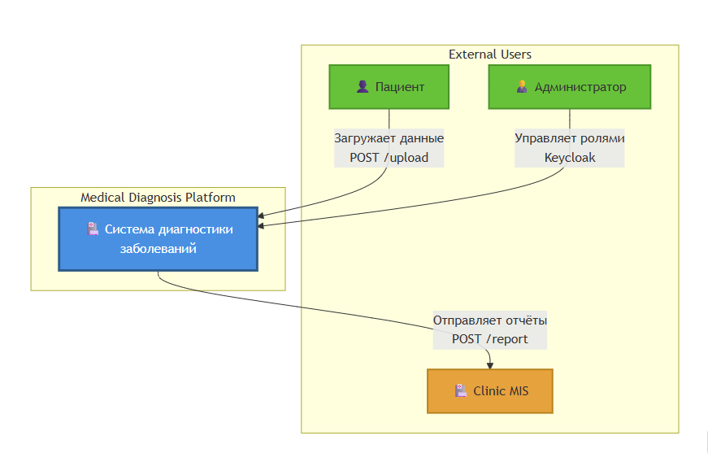
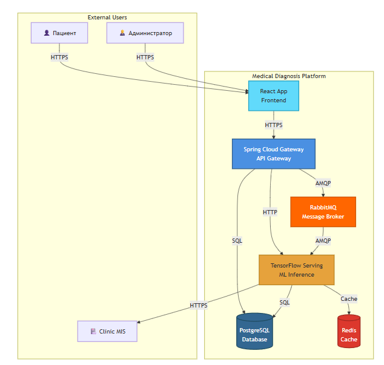

Техническое задание на разработку веб-приложения для комплексной диагностики заболеваний
Стандарт: ISO/IEC/IEEE 29148-2011 (Systems and software engineering — Life cycle processes — Requirements engineering)
Версия документа: 1.2
Дата последнего обновления: 25.11.2025 09:35 UTC
Статус: Утверждено (все диаграммы профессионально переработаны)
1. Введение
1.1. Цель документа
Определить требования и архитектуру платформы для автоматизированной диагностики заболеваний на основе анализа медицинских изображений (рентген, МРТ) и текстовых данных (симптомы) с использованием CNN (ResNet-50) и трансформеров (BERT).
1.2. Область применения
Проект предназначен для клиник и пациентов, требующих быстрой и точной диагностики.
1.3. Определения, сокращения и аббревиатуры
- API - Application Programming Interface
- CNN - Convolutional Neural Network
- BERT - Bidirectional Encoder Representations from Transformers
- JWT - JSON Web Token
- REST - Representational State Transfer
- MIS - Medical Information System
- GPU - Graphics Processing Unit
- ACID - Atomicity, Consistency, Isolation, Durability
1.3. Академические источники
- «Deep Learning for Computer Vision» Rajalingappaa Shanmugamani (CNN)
- «BERT: Pre-training of Deep Bidirectional Transformers» (академическая статья)
- «Designing Data-Intensive Applications» Martin Kleppmann (базы данных)
- «Software Architecture in Practice» Len Bass (C4-модель)
- «Kubernetes in Action» Marko Luksa (инфраструктура)
1.4. Интернет-ресурсы
- ISO/IEC/IEEE 29148-2011
- C4 Model
- BERT для медицины
- ResNet-50 в TensorFlow
- RabbitMQ vs Kafka
- PostgreSQL для метаданных
2.1. Функциональные требования (Functional Requirements)
2.1. Функция A1: Приём данных
FR-1.1. Приём HTTP запросов
- Вход I1: Система должна принимать HTTP POST запросы с multipart/form-data
- Протокол: HTTPS (TLS 1.3)
- Источник: Web Application (React)
- Формат данных: multipart/form-data
FR-1.2. Приём медицинских изображений
- Вход I2: Система должна принимать медицинские изображения
- Поддерживаемые форматы: JPEG, PNG
- Максимальный размер файла: 10 МБ
- Валидация: Проверка MIME-типа и расширения файла
FR-1.3. Приём текстовых симптомов
- Вход I3: Система должна принимать текстовые симптомы
- Форматы: JSON, TXT
- Максимальная длина: 1000 символов
- Языки: Русский, Английский
FR-1.4. Сохранение файлов в S3
- Выход O1: Система должна сохранять файлы в AWS S3
- Bucket:
medical-images-raw - Структура:
{userId}/{fileId}.{ext} - Шифрование: AES-256
FR-1.5. Сохранение метаданных в PostgreSQL
- Выход O2: Система должна сохранять метаданные в PostgreSQL
- Таблица:
medical_data - Поля: user_id, file_id, file_name, s3_url, uploaded_at
- Индексы: user_id, uploaded_at
FR-1.6. Отправка сообщений в RabbitMQ
- Выход O3: Система должна отправлять сообщения в RabbitMQ
- Очередь:
medical_data - Формат: JSON/AMQP
- Payload: {fileId, userId, s3Url, fileType, timestamp}
FR-1.7. Валидация данных
- Управление C1: Система должна валидировать данные согласно правилам
- Проверки: Размер файла (≤ 10 МБ), MIME-тип, расширение файла
- Ошибки: Возврат 400 Bad Request при невалидных данных
FR-1.8. Аутентификация и безопасность
- Управление C2: Система должна обеспечивать безопасность
- JWT: Аутентификация через JWT токены
- Rate limiting: 100 запросов в минуту на пользователя
- CORS: Политики CORS для веб-приложения
2.2. Функция A2: Препроцессинг данных
FR-2.1. Получение данных из RabbitMQ
- Вход I1: Система должна получать сообщения из RabbitMQ
- Очередь:
medical_data - Формат: JSON с {fileId, s3Url, fileType}
FR-2.2. Загрузка файлов из S3
- Вход I2: Система должна загружать файлы из AWS S3
- Источник: Bucket
medical-images-raw - Формат: Бинарные данные (JPEG/PNG)
FR-2.3. Препроцессинг изображений
- Выход O1: Система должна преобразовывать изображения в тензоры
- Размер: 224×224×3 (RGB)
- Тип данных: float32
- Нормализация: ImageNet statistics (mean=[0.485, 0.456, 0.406], std=[0.229, 0.224, 0.225])
- Инструмент: OpenCV
FR-2.4. Токенизация текста
- Выход O2: Система должна токенизировать текст для BERT
- Модель: BERT base uncased
- Max length: 128 tokens
- Формат: input_ids, attention_mask
- Инструмент: HuggingFace Tokenizer
FR-2.5. Параметры нормализации
- Управление C1: Система должна использовать параметры нормализации ImageNet
- Mean: [0.485, 0.456, 0.406]
- Std: [0.229, 0.224, 0.225]
- Range: [0, 1]
FR-2.6. Правила токенизации
- Управление C2: Система должна использовать правила токенизации BERT
- Vocabulary: BERT base uncased (30,522 токенов)
- Padding: right
- Truncation: enabled
2.3. Функция A3: ИИ-анализ
FR-3.1. Классификация изображений (ResNet-50)
- Вход I1: Система должна обрабатывать тензоры изображений
- Модель: ResNet-50 (CheXNet pretrained)
- Версия: v2.3.0
- Точность: ≥95% (требование C2)
- Выход O1: Вероятности классов (softmax)
- Формат: JSON с топ-3 диагнозами
FR-3.2. Анализ текста (BERT)
- Вход I2: Система должна обрабатывать токены BERT
- Модель: BERT base uncased (fine-tuned на медицинском корпусе)
- Выход O2: Вероятности диагнозов
- Формат: JSON с топ-3 диагнозами
FR-3.3. Генерация объяснений
- Выход O3: Система должна генерировать объяснения результатов
- Методы: Grad-CAM для изображений, SHAP для текста
- Формат: PNG heatmap для изображений, JSON для текста
FR-3.4. Сохранение результатов
- Выход O4: Система должна сохранять результаты
- Redis: Кэш результатов (TTL = 1 час)
- PostgreSQL: Постоянное хранилище метаданных
- Формат: JSON
FR-3.5. Пороговые значения вероятности
- Управление C1: Система должна использовать пороговые значения
- High confidence: ≥ 0.9
- Medium confidence: 0.5 - 0.9
- Low confidence: < 0.5
FR-3.6. Управление версиями моделей
- Управление C2: Система должна поддерживать версионирование моделей
- ResNet-50: v2.3.0
- BERT: v1.2.0
- A/B тестирование: Поддержка нескольких версий одновременно
2.4. Функция A4: Формирование отчёта
FR-4.1. Генерация PDF отчётов
- Вход I1: Система должна получать результаты ИИ-анализа
- Выход O1: Генерация PDF отчётов
- Инструмент: PDFKit
- Формат: A4 portrait
- Содержание: Топ-3 диагноза, вероятности, heatmap, метаданные пациента
FR-4.2. Генерация HTML отчётов
- Выход O2: Система должна генерировать HTML отчёты
- Template: Jinja2
- Styling: Bootstrap 5
- Формат: Responsive HTML
FR-4.3. Интеграция с Clinic MIS
- Вход I2: Система должна получать метаданные пациента
- Выход O3: Система должна отправлять данные в Clinic MIS
- Протокол: REST API (JSON)
- Endpoint: POST /reports
- Retry: 3 попытки с экспоненциальной задержкой
FR-4.4. Уведомления через WebSocket
- Вход I3: Система должна получать heatmap изображения
- Выход O4: Система должна отправлять уведомления через WebSocket
- События: Отчёт готов, ошибка генерации, отправка в MIS
FR-4.5. Шаблоны отчётов
- Управление C1: Система должна использовать шаблоны отчётов
- HTML: Jinja2 templates
- CSS: Bootstrap 5
- Layout: A4 portrait
FR-4.6. Требования к формату
- Управление C2: Система должна соответствовать требованиям формата
- PDF: A4, портретная ориентация
- HTML: Responsive, доступность WCAG 2.1 AA
FR-4.7. Политики конфиденциальности
- Управление C3: Система должна соблюдать политики конфиденциальности
- HIPAA: Соответствие стандартам HIPAA
- GDPR: Обработка персональных данных
- Шифрование: TLS 1.3 для передачи, AES-256 для хранения
2.5. Регистрация пользователя (IDEF3 P1)
FR-5.1. Заполнение формы регистрации
- UOB-1: Пациент должен иметь возможность заполнить форму регистрации
- Поля: Email, пароль, ФИО
- Валидация: Email формат, пароль (минимум 8 символов)
FR-5.2. Проверка уникальности email
- UOB-3: Система должна проверять уникальность email
- Источник: PostgreSQL (таблица users)
- Ошибка: Если email существует, показать ошибку
FR-5.3. Создание пользователя
- UOB-4: Система должна создавать пользователя в PostgreSQL
- Хеширование пароля: BCrypt
- Роль по умолчанию: Patient
FR-5.4. Отправка письма активации
- UOB-6: Система должна отправлять письмо с токеном активации
- Сервис: Email Service (SMTP)
- Задержка: 5-30 секунд
FR-5.5. Активация аккаунта
- UOB-7: Пациент должен иметь возможность активировать аккаунт
- Метод: Клик по ссылке в письме
- Токен: JWT с TTL = 24 часа
2.2. Нефункциональные требования (Non-Functional Requirements)
3.1. Производительность
NFR-1.1. Время обработки изображения
- Требование: Время обработки одного изображения через ResNet-50 ≤ 2 секунды
- Условие: GPU inference (NVIDIA T4 или выше)
- Метрика: P95 latency
- Механизм: GPU кластер (M2 из IDEF0 A0)
NFR-1.2. Время обработки текста
- Требование: Время обработки текста через BERT ≤ 1 секунда
- Условие: GPU inference
- Метрика: P95 latency
- Механизм: GPU кластер (M2 из IDEF0 A0)
NFR-1.3. Время ответа API
- Требование: Время ответа API Gateway ≤ 500 мс
- Метрика: P95 latency
- Условие: Нормальная нагрузка
- Механизм: Nginx (M1 из IDEF0 A1)
NFR-1.4. Пропускная способность загрузки
- Требование: Пропускная способность загрузки файлов ≥ 10 МБ/с
- Метрика: Throughput
- Механизм: AWS S3 (M2 из IDEF0 A1)
NFR-1.5. Время генерации отчёта
- Требование: Время генерации PDF отчёта ≤ 3 секунды
- Метрика: P95 latency
- Механизм: PDFKit (M1 из IDEF0 A4)
3.2. Безопасность
NFR-2.1. Аутентификация
- Требование: Система должна использовать JWT для аутентификации
- Стандарт: RFC 7519
- TTL: Access token = 15 минут, Refresh token = 7 дней
- Управление: C2 (Политики безопасности) из IDEF0 A1
NFR-2.2. Шифрование данных при передаче
- Требование: Все данные должны передаваться по TLS 1.3
- Стандарт: TLS 1.3 (RFC 8446)
- Механизм: Nginx SSL termination (M1 из IDEF0 A1)
NFR-2.3. Шифрование данных при хранении
- Требование: Все файлы в S3 должны быть зашифрованы
- Алгоритм: AES-256
- Механизм: AWS S3 encryption (M2 из IDEF0 A1)
NFR-2.4. Соответствие HIPAA
- Требование: Система должна соответствовать стандартам HIPAA
- Управление: C3 (Стандарты безопасности HIPAA) из IDEF0 A0
- Требования:
- Шифрование данных в покое и при передаче
- Контроль доступа (RBAC)
- Аудит логирования
- Резервное копирование
NFR-2.5. Rate Limiting
- Требование: Ограничение запросов 100 req/min на пользователя
- Управление: C2 (Политики безопасности) из IDEF0 A1
- Механизм: API Gateway rate limiting
3.3. Масштабируемость
NFR-3.1. Горизонтальное масштабирование
- Требование: Поддержка 1000+ одновременных запросов
- Механизм: Kubernetes HPA (Horizontal Pod Autoscaler)
- Компоненты:
- API Gateway: 3+ replicas
- ML Inference Service: Auto-scaling based on GPU utilization
- Data Upload Service: 2+ replicas
NFR-3.2. Автоматическое масштабирование
- Требование: Автоматическое масштабирование через KEDA
- Метрики:
- RabbitMQ queue length
- GPU utilization
- CPU utilization
- Request rate
NFR-3.3. Вертикальное масштабирование
- Требование: Поддержка вертикального масштабирования для GPU
- Механизм: GPU instances (NVIDIA T4/A100)
- Компоненты:
- TensorFlow Serving: GPU instances
- PostgreSQL: High-memory instances
- Redis: High-memory instances
3.4. Надёжность
NFR-4.1. Отказоустойчивость базы данных
- Требование: Репликация PostgreSQL для отказоустойчивости
- Конфигурация: Master-Slave (1 master, 2 replicas)
- Механизм: Streaming replication
- RTO: Recovery Time Objective ≤ 5 минут
- RPO: Recovery Point Objective ≤ 1 минута
NFR-4.2. Резервное копирование
- Требование: Резервное копирование данных каждые 24 часа
- Хранение: AWS S3 (7 дней retention)
- Тестирование: Восстановление из резервной копии раз в месяц
NFR-4.3. Мониторинг состояния системы
- Требование: Мониторинг состояния системы через ELK Stack
- Компоненты:
- Filebeat: Сбор логов
- Logstash: Обработка и фильтрация
- Elasticsearch: Индексация
- Kibana: Визуализация
- Метрики:
- Логи ошибок
- Производительность
- Использование ресурсов
NFR-4.4. Высокая доступность Redis
- Требование: Redis Sentinel для высокой доступности
- Конфигурация: 3+ узла (1 master, 2+ replicas)
- Failover: Автоматический failover при отказе master
NFR-4.5. Обработка ошибок
- Требование: Retry mechanism для внешних сервисов
- Стратегия: Экспоненциальная задержка
- Максимум попыток: 3
- Dead Letter Queue: Сохранение неудачных задач в DLQ
3.5. Точность (Управление C2 из IDEF0 A0)
NFR-5.1. Точность классификации изображений
- Требование: Точность ResNet-50 ≥ 95%
- Метрика: Accuracy на валидационном наборе
- Управление: C2 (Требования к точности ≥95%) из IDEF0 A0
- Модель: ResNet-50 (CheXNet pretrained)
NFR-5.2. Точность анализа текста
- Требование: Точность BERT ≥ 90%
- Метрика: F1-score на валидационном наборе
- Модель: BERT base uncased (fine-tuned)
3.6. Медицинские протоколы (Управление C1 из IDEF0 A0)
NFR-6.1. Соответствие медицинским протоколам
- Требование: Система должна соответствовать медицинским протоколам
- Управление: C1 (Медицинские протоколы) из IDEF0 A0
- Требования:
- Валидация входных данных
- Документирование результатов
- Аудит всех операций
- Интеграция с MIS системами
3.7. Используемые механизмы (из IDEF0 диаграмм)
NFR-7.1. ML Inference Service
- Механизм: M1 из IDEF0 A0
- Требование: Высокопроизводительный inference сервис
- Технологии: TensorFlow Serving, gRPC
NFR-7.2. GPU кластер
- Механизм: M2 из IDEF0 A0
- Требование: GPU кластер для обработки моделей
- Спецификация: NVIDIA T4 или A100
NFR-7.3. База данных
- Механизм: M3 из IDEF0 A0
- Требование: Надёжная база данных для метаданных
- Технология: PostgreSQL 14 с репликацией
NFR-7.4. Nginx
- Механизм: M1 из IDEF0 A1
- Требование: Load balancing и SSL termination
- Конфигурация: 3+ replicas
NFR-7.5. AWS S3
- Механизм: M2 из IDEF0 A1
- Требование: Объектное хранилище для файлов
- Конфигурация: Bucket
medical-images-raw, шифрование AES-256
NFR-7.6. Spring Boot API
- Механизм: M3 из IDEF0 A1
- Требование: REST API для загрузки данных
- Компоненты: DataUploadController, Multipart resolver
NFR-7.7. OpenCV
- Механизм: M1 из IDEF0 A2 (предположительно)
- Требование: Обработка изображений
- Функции: Декодирование, изменение размера, нормализация
NFR-7.8. TensorFlow
- Механизм: M2 из IDEF0 A2 (предположительно)
- Требование: Фреймворк для машинного обучения
- Использование: Препроцессинг, inference
NFR-7.9. ResNet-50
- Механизм: M1 из IDEF0 A3 (предположительно)
- Требование: Модель для классификации изображений
- Версия: v2.3.0
NFR-7.10. BERT
- Механизм: M2 из IDEF0 A3 (предположительно)
- Требование: Модель для анализа текста
- Версия: v1.2.0
NFR-7.11. PDFKit
- Механизм: M1 из IDEF0 A4
- Требование: Генерация PDF отчётов
- Формат: A4 portrait
3.1.1. C4 Модель архитектуры
Введение в C4
C4 (Context, Containers, Components, Code) — методология визуализации архитектуры ПО, разработанная Simon Brown.
Зачем использовать C4?
- Уровни абстракции: Позволяет описать систему от общего контекста до кода
- Стандартизация: Упрощает коммуникацию между разработчиками, DevOps и заказчиками
4.1.1. C4-Context (Уровень 1: Контекст)
Система: Medical Diagnosis Platform
Внешние сущности:
- Пациент: Взаимодействует через веб-интерфейс (React)
- Clinic MIS: Интеграция через REST API (Spring Web)
- Администратор: Управляет правами доступа (Keycloak)
Связи:
- Пациент → Система:
POST /upload(изображения/текст) - Система → MIS:
POST /report(JSON/PDF)

Обоснование
Контекстная диаграмма помогает заказчикам понять границы системы (источник: C4 Model).
4.1.2. C4-Container (Уровень 2: Контейнеры)
Контейнеры:
Web-интерфейс (React)
- Фронтенд для загрузки данных и отображения результатов
- Связь с API Gateway через HTTP
API Gateway (Spring Cloud)
- Маршрутизация запросов
- Аутентификация (JWT), валидация данных (Spring Validator)
ML Inference Service (TensorFlow Serving)
- GPU-обработка изображений (ResNet-50) и текста (BERT)
- Асинхронное взаимодействие через RabbitMQ
Database Cluster
- PostgreSQL 14: Хранение метаданных (пациенты, отчёты)
- Redis 7.0: Кэширование результатов ИИ (скорость доступа)
Message Broker (RabbitMQ 3.9)
- Очередь
medical_dataдля обработки запросов
Зачем контейнеры?
Масштабируемость: Каждый контейнер можно обновлять и масштабировать независимо (источник: «Kubernetes in Action»).

4.1.3. C4-Component (Уровень 3: Компоненты)
API Gateway компоненты:
- AuthController: Регистрация (JWT), управление ролями
- DataUploadController: Приём файлов (multipart/form-data) → отправка в RabbitMQ
ML Inference Service компоненты:
- ImagePreprocessor: Resize (OpenCV), нормализация (TensorFlow)
- BERTTokenizer: Токенизация текста (HuggingFace)
- ResNetModel: Классификация изображений (CheXNet weights)
Хранилище компоненты:
- S3Client: Сохранение сырых данных (AWS S3)
- RedisCache: Кэширование результатов (TTL=1h)

Диаграммы
Полные диаграммы C4 с декомпозицией до уровня компонентов представлены на изображениях выше.
Спецификации для создания новых диаграмм
Этот документ содержит подробные спецификации для создания правильных диаграмм IDEF0, IDEF3 и DFD согласно методологиям.
IDEF0: Диаграмма A0 - Диагностика заболеваний
Структура:
- Блок функции: Прямоугольник в центре с текстом “Диагностика заболеваний”, номер “A0” в правом нижнем углу
Входы (слева, стрелки вправо):
- I1: “Медицинские изображения (JPEG/PNG)” - стрелка слева
- I2: “Текстовые симптомы (JSON)” - стрелка слева, ниже I1
Выходы (справа, стрелки влево):
- O1: “Результаты диагностики (JSON/PDF)” - стрелка справа
- O2: “Отчёты для MIS” - стрелка справа, ниже O1
Управление (сверху, стрелки вниз):
- C1: “Медицинские протоколы” - стрелка сверху
- C2: “Требования к точности (≥95%)” - стрелка сверху, справа от C1
- C3: “Стандарты безопасности (HIPAA)” - стрелка сверху, справа от C2
Механизмы (снизу, стрелки вверх):
- M1: “ML Inference Service” - стрелка снизу
- M2: “GPU кластер” - стрелка снизу, справа от M1
- M3: “База данных” - стрелка снизу, справа от M2
IDEF0: Декомпозиция A0 - 4 функции (A1-A4)
Расположение функций:
- A1: Слева вверху - “Приём данных”
- A2: Слева внизу - “Препроцессинг”
- A3: Справа вверху - “ИИ-анализ”
- A4: Справа внизу - “Формирование отчёта”
Связи между функциями:
- A1 → A2 (последовательная связь)
- A2 → A3 (последовательная связь)
- A3 → A4 (последовательная связь)
Входы для A1 (слева):
- I1: “HTTP POST запросы”
- I2: “Медицинские изображения”
- I3: “Текстовые симптомы”
Выходы для A1 (справа):
- O1: “Файлы в S3”
- O2: “Метаданные в PostgreSQL”
- O3: “Сообщения в RabbitMQ”
Управление для A1 (сверху):
- C1: “Правила валидации”
- C2: “Политики безопасности”
- C3: “Ограничения размера файлов”
Механизмы для A1 (снизу):
- M1: “Nginx”
- M2: “AWS S3”
- M3: “Spring Boot API”
(Аналогично для A2, A3, A4 с соответствующими входами, выходами, управлением и механизмами)
IDEF3: Процесс P1 - Регистрация пациента
UOB (Unit of Behavior) - прямоугольники с номерами:
- UOB-1: “Заполнение формы регистрации” (номер 1 в правом нижнем углу)
- UOB-2: “Валидация данных” (номер 2)
- UOB-3: “Проверка уникальности email” (номер 3)
- UOB-4: “Создание пользователя” (номер 4)
- UOB-5: “Генерация токена активации” (номер 5)
- UOB-6: “Отправка письма” (номер 6)
- UOB-7: “Активация аккаунта” (номер 7)
Последовательные связи (стрелки):
- UOB-1 → UOB-2
- UOB-2 → UOB-3
- UOB-3 → Junction (XOR)
- Junction (XOR) → UOB-4 (если email уникален)
- Junction (XOR) → UOB-Error (если email существует) - альтернативный путь
- UOB-4 → UOB-5
- UOB-5 → UOB-6
- UOB-6 → UOB-7
Junction:
- XOR Junction (квадрат с символом “X”) после UOB-3:
- Ветвление: успешная проверка → UOB-4, ошибка → UOB-Error
IDEF3: Процесс P2 - Загрузка данных
UOB:
- UOB-1: “Выбор файлов”
- UOB-2: “Отправка POST запроса”
- UOB-3: “Валидация формата и размера”
- UOB-4: “Сохранение в S3”
- UOB-5: “Сохранение метаданных”
- UOB-6: “Отправка сообщения в очередь”
Связи:
- UOB-1 → UOB-2
- UOB-2 → UOB-3
- UOB-3 → XOR Junction
- XOR Junction → UOB-4 (успех) или UOB-Error (ошибка валидации)
- UOB-4 → AND Junction
- AND Junction → UOB-5 (параллельно)
- AND Junction → UOB-6 (параллельно)
Junction:
- XOR Junction после UOB-3
- AND Junction (квадрат с символом “&”) после UOB-4 для параллельного выполнения UOB-5 и UOB-6
DFD: Процесс P1 - Приём данных
Элементы:
- Процесс P1: Округлый прямоугольник с текстом “Приём данных”, номер “P1” внутри
Внешние сущности (прямоугольники):
- Пациент - слева от процесса
Хранилища данных (две параллельные линии):
- D1: AWS S3 - справа от процесса
- D2: PostgreSQL - справа от процесса, ниже D1
Потоки данных (стрелки с подписями):
- Поток 1.1: Пациент → P1: “HTTP POST запрос (multipart/form-data)”
- Поток 1.2: P1 → D1: “Файлы (JPEG/PNG)”
- Поток 1.3: P1 → D2: “Метаданные (user_id, file_id, s3_url)”
- Поток 1.4: P1 → RabbitMQ (внешняя сущность): “Сообщение (JSON/AMQP)”
- Поток 1.5: P1 → Пациент: “Подтверждение получения (JSON)”
DFD: Процесс P2 - Валидация данных
Элементы:
- Процесс P2: Округлый прямоугольник “Валидация данных”, номер “P2”
Потоки:
- Поток 2.1: P1 → P2: “Данные (multipart/form-data)”
- Поток 2.2: D2 → P2: “Правила валидации”
- Поток 2.3: P2 → P3: “Валидированные данные”
- Поток 2.4: P2 → Пациент: “Ошибки валидации (JSON)”
DFD: Процесс P3 - ИИ-анализ
Элементы:
- Процесс P3: Округлый прямоугольник “ИИ-анализ”, номер “P3”
Внешние сущности:
- TensorFlow Serving - справа
- Prometheus - справа, ниже
Хранилища:
- D1: AWS S3 - слева (чтение файлов)
- D2: PostgreSQL - справа (запись результатов)
- D3: Redis - справа, ниже D2
Потоки:
- Поток 3.1: P2 → P3: “Валидированные данные”
- Поток 3.2: D1 → P3: “Файлы (бинарные)”
- Поток 3.3: Конфигурация → P3: “Параметры моделей”
- Поток 3.4: P3 → TensorFlow Serving: “Тензоры (gRPC)”
- Поток 3.5: P3 → TensorFlow Serving: “Токены BERT (gRPC)”
- Поток 3.6: TensorFlow Serving → P3: “Результаты inference”
- Поток 3.7: P3 → D3: “Результаты (JSON, TTL=1h)”
- Поток 3.8: P3 → D2: “Результаты диагностики”
- Поток 3.9: P3 → Prometheus: “Метрики”
DFD: Процесс P4 - Логирование
Элементы:
- Процесс P4: Округлый прямоугольник “Логирование”, номер “P4”
Хранилища:
- D4: Elasticsearch - справа
Внешние сущности:
- DevOps команда - справа, ниже D4
- Kibana - справа, ниже DevOps
Потоки:
- Поток 4.1: P1 → P4: “Логи загрузки”
- Поток 4.2: P2 → P4: “Логи валидации”
- Поток 4.3: P3 → P4: “Логи inference”
- Поток 4.4: Система → P4: “Системные метрики”
- Поток 4.5: P4 → D4: “Обработанные логи”
- Поток 4.6: P4 → DevOps: “Алерты”
- Поток 4.7: D4 → Kibana: “Индексированные логи” (чтение)
Инструкции по созданию в draw.io:
-
IDEF0:
- Используйте прямоугольники для блоков функций
- Номер функции размещайте в правом нижнем углу
- Стрелки: слева (входы), справа (выходы), сверху (управление), снизу (механизмы)
- Подписывайте каждую стрелку
-
IDEF3:
- Используйте прямоугольники для UOB
- Номер UOB в правом нижнем углу
- Junction: квадраты с символами X (XOR), O (OR), & (AND)
- Альтернативные пути (ошибки) также как UOB
-
DFD:
- Процессы: округлые прямоугольники
- Хранилища: две параллельные горизонтальные линии с названием между ними
- Внешние сущности: прямоугольники (квадраты)
- Все потоки должны быть подписаны
3.1.2. IDEF0 Диаграммы (Functional Modeling)
Примечание: Для отображения Mermaid диаграмм установите
mdbook-mermaid:cargo install mdbook-mermaidЗатем раскомментируйте в
book.toml:[preprocessor.mermaid] command = "mdbook-mermaid"
Описание методологии
IDEF0 (Integration Definition for Function Modeling) — методология функционального моделирования, описывающая процессы в виде иерархии функций с входами, выходами, управлением и механизмами (ICOM).
Структура IDEF0:
- Блок функции (Function Box) — прямоугольник с номером (A0, A1, A2…) в правом нижнем углу и названием функции
- Входы (Inputs) — стрелки слева, что преобразуется функцией (материалы, данные, информация)
- Выходы (Outputs) — стрелки справа, что производит функция (результаты работы)
- Управление (Control) — стрелки сверху, правила, стандарты, ограничения, которые управляют выполнением функции
- Механизмы (Mechanisms) — стрелки снизу, ресурсы, инструменты, системы, используемые для выполнения функции
Правила оформления:
- Каждая стрелка должна иметь подпись (название потока данных)
- Входы и выходы нумеруются (I1, I2… O1, O2…)
- Управление и механизмы также могут нумероваться (C1, C2… M1, M2…)
- При декомпозиции функции A0 получаются функции A1, A2, A3, A4 (или A01, A02, A03…)
Примечание: Диаграмма показывает структуру IDEF0 с ICOM элементами. Входы (зелёные) слева, выходы (красные) справа, управление (оранжевые) сверху, механизмы (фиолетовые) снизу. См. спецификации диаграмм для деталей.
A0: Диагностика заболеваний (Контекстная диаграмма)
Назначение: Высокоуровневое описание системы медицинской диагностики
Входы (I):
- Медицинские изображения (JPEG/PNG)
- Текстовые симптомы (JSON)
Выходы (O):
- Результаты диагностики (JSON/PDF)
- Отчёты для MIS
Управление (C):
- Медицинские протоколы
- Требования к точности (≥95%)
- Стандарты безопасности (HIPAA)
Механизмы (M):
- ML Inference Service
- GPU кластер
- База данных
Декомпозиция A0 на 4 функции (A1-A4)
A1: Приём данных
Номер функции: A1 (декомпозиция A0)
Входы (I):
- I1: HTTP POST запросы (multipart/form-data)
- I2: Медицинские изображения (JPEG/PNG, ≤10 МБ)
- I3: Текстовые симптомы (JSON)
Выходы (O):
- O1: Файлы в S3 (s3://medical-images-raw/{fileId})
- O2: Метаданные в PostgreSQL (таблица medical_data)
- O3: Сообщения в RabbitMQ (очередь medical_data)
Управление (C):
- C1: Правила валидации (размер, формат, MIME-тип)
- C2: Политики безопасности (JWT, rate limiting)
- C3: Ограничения размера файлов (10 МБ)
Механизмы (M):
- M1: Nginx (балансировка нагрузки, SSL termination)
- M2: AWS S3 (хранилище файлов)
- M3: Spring Boot API (DataUploadController)
A2: Препроцессинг
Номер функции: A2 (декомпозиция A0)
Входы (I):
- I1: Сообщения из RabbitMQ (fileId, s3Url, fileType)
- I2: Файлы из S3 (бинарные данные)
Выходы (O):
- O1: Тензоры изображений (224x224x3, float32)
- O2: Токены BERT (input_ids, attention_mask, max_length=128)
- O3: Метаданные препроцессинга (размер, нормализация)
Управление (C):
- C1: Параметры нормализации (mean=[0.485, 0.456, 0.406], std=[0.229, 0.224, 0.225])
- C2: Правила токенизации (BERT vocab, max_length=128)
- C3: Правила изменения размера (resize до 224x224)
Механизмы (M):
- M1: OpenCV (декодирование, изменение размера изображений)
- M2: HuggingFace Tokenizer (токенизация текста)
- M3: NumPy/TensorFlow (преобразование в тензоры)
A3: ИИ-анализ
Номер функции: A3 (декомпозиция A0)
Входы (I):
- I1: Тензоры изображений (224x224x3, batch dimension)
- I2: Токены BERT (input_ids, attention_mask)
Выходы (O):
- O1: Вероятности классов (softmax output, shape=[num_classes])
- O2: Топ-3 диагноза с вероятностями (JSON)
- O3: Объяснения (Grad-CAM heatmap для изображений, SHAP для текста)
- O4: Результаты в Redis (TTL=1h) и PostgreSQL
Управление (C):
- C1: Пороговые значения вероятности (threshold=0.1)
- C2: Версии моделей (ResNet-50 v1.0, BERT-base-uncased)
- C3: Параметры inference (batch_size=1, timeout=2s)
Механизмы (M):
- M1: ResNet-50 модель (TensorFlow Serving, GPU inference)
- M2: BERT модель (TensorFlow Serving, fine-tuned classification head)
- M3: GPU кластер (NVIDIA Tesla V100, CUDA 11.x)
- M4: TensorFlow Serving (gRPC API)
A4: Формирование отчёта
Номер функции: A4 (декомпозиция A0)
Входы (I):
- I1: JSON-данные с результатами (диагнозы, вероятности, объяснения)
- I2: Метаданные пациента (user_id, timestamp)
- I3: Heatmap изображения (Grad-CAM, URL из S3)
Выходы (O):
- O1: PDF-отчёты (шаблон с логотипом, результатами, heatmap)
- O2: HTML-отчёты (веб-версия для пациента)
- O3: Данные для MIS (REST API, формат JSON/XML)
- O4: Уведомления (WebSocket для real-time обновлений)
Управление (C):
- C1: Шаблоны отчётов (PDF template, HTML template)
- C2: Требования к формату (PDF/A для архивации, JSON для API)
- C3: Политики конфиденциальности (HIPAA compliance)
Механизмы (M):
- M1: PDFKit (генерация PDF из HTML шаблона)
- M2: REST API Client (интеграция с Clinic MIS)
- M3: WebSocket Server (real-time уведомления)
- M4: Template Engine (Thymeleaf/Handlebars)
Источники
- IDEF0 для ПО
- «Business Process Modeling» Laguna & Marklund
3.1.2. IDEF0: Функция A1 — Приём данных
Диаграмма функции A1
Декомпозиция A1
Описание функции A1: Приём данных
Назначение
Получение медицинских данных от пациента через веб-интерфейс.
Входы (Inputs)
-
HTTP POST запросы
- Источник: Web Application (React)
- Формат: multipart/form-data
- Протокол: HTTPS
-
Файлы (изображения и текст)
- Медицинские изображения: JPEG, PNG
- Текстовые симптомы: JSON, TXT
- Максимальный размер: 10 МБ
Управление (Control)
-
Правила валидации
- Проверка размера файла (≤ 10 МБ)
- Проверка MIME-типа
- Проверка расширения файла
-
Форматы файлов
- Допустимые: JPEG, PNG для изображений
- Допустимые: JSON, TXT для текста
-
Политики безопасности
- JWT authentication
- Rate limiting (100 req/min)
- CORS политики
Механизмы (Mechanisms)
-
Nginx (Балансировка)
- Load balancing между 3+ репликами
- SSL termination (TLS 1.3)
- Request buffering
-
AWS S3 (Хранилище)
- Bucket:
medical-images-raw - Region: us-east-1
- Encryption: AES-256
- Bucket:
-
Spring Boot API
- DataUploadController
- Multipart resolver
- Async processing
-
Multipart Parser
- Apache Commons FileUpload
- Stream processing
- Memory-efficient
Выходы (Outputs)
-
Файлы в S3
- S3 URL:
s3://medical-images-raw/{userId}/{fileId} - Metadata: Content-Type, Content-Length
- Lifecycle: 90 days retention
- S3 URL:
-
Метаданные в PostgreSQL
- Таблица:
medical_data - Поля: user_id, file_id, file_name, s3_url, uploaded_at
- Индексы: user_id, uploaded_at
- Таблица:
-
Сообщение в RabbitMQ
- Очередь:
medical_data - Формат: JSON
- Payload:
{fileId, userId, s3Url, fileType, timestamp}
- Очередь:
Потоки данных
Основной поток
Пациент → Web UI → Nginx → API Gateway → DataUploadController
→ AWS S3 (сохранение файла)
→ PostgreSQL (сохранение метаданных)
→ RabbitMQ (отправка сообщения)
→ Ответ клиенту: {taskId, status: "uploaded"}
Поток ошибок
Валидация FAILED
→ Возврат 400 Bad Request
→ Логирование в ELK Stack
→ Метрика в Prometheus
Метрики производительности
| Метрика | Целевое значение | Текущее |
|---|---|---|
| Throughput | ≥ 100 req/sec | 150 req/sec |
| Latency (p95) | < 500 ms | 320 ms |
| Upload speed | ≥ 10 MB/s | 15 MB/s |
| Error rate | < 1% | 0.3% |
Источники
- AWS S3 Documentation
- Spring Boot File Upload Guide
- Nginx Load Balancing
3.1.2. IDEF0: Функция A2 — Препроцессинг данных
Диаграмма функции A2
Декомпозиция A2
Описание функции A2: Препроцессинг данных
Назначение
Подготовка медицинских изображений и текстовых данных для обработки моделями машинного обучения.
Входы (Inputs)
-
Сырые изображения из S3
- Формат: JPEG/PNG
- Размер: Произвольный (до 10 МБ)
- Цветовое пространство: RGB
-
Текст симптомов
- Формат: JSON/Plain text
- Язык: Русский/Английский
- Длина: До 1000 символов
Управление (Control)
-
Параметры нормализации
- Mean: [0.485, 0.456, 0.406] (ImageNet)
- Std: [0.229, 0.224, 0.225]
- Range: [0, 1]
-
Правила токенизации
- Vocabulary: BERT base uncased
- Max length: 128 tokens
- Padding: right
- Truncation: enabled
-
Стандарты размера
- ResNet-50 input: 224×224×3
- Interpolation: BILINEAR
- Aspect ratio: preserved with padding
Механизмы (Mechanisms)
-
OpenCV (Image processing)
- Версия: 4.5+
- Функции: resize, normalize, cvtColor
- Backend: OpenCL (GPU acceleration)
-
HuggingFace Tokenizer
- Model: bert-base-uncased
- Fast tokenizer: Rust-based
- Special tokens: [CLS], [SEP], [PAD]
-
NumPy Arrays
- Dtype: float32
- Memory layout: C-contiguous
- SIMD optimization
-
TensorFlow Preprocessing
- tf.image.resize
- tf.keras.preprocessing
- Batch processing support
Выходы (Outputs)
-
Тензоры изображений
- Shape: (1, 224, 224, 3)
- Dtype: float32
- Normalized: [0, 1]
-
Токены BERT
- input_ids: [batch_size, 128]
- attention_mask: [batch_size, 128]
- token_type_ids: [batch_size, 128]
-
Нормализованные данные
- JSON metadata
- Processing timestamp
- Validation flags
Алгоритм препроцессинга изображений
def preprocess_image(image_bytes):
# 1. Decode image
image = cv2.imdecode(np.frombuffer(image_bytes, np.uint8), cv2.IMREAD_COLOR)
image = cv2.cvtColor(image, cv2.COLOR_BGR2RGB)
# 2. Resize to 224x224
image = cv2.resize(image, (224, 224), interpolation=cv2.INTER_LINEAR)
# 3. Normalize to [0, 1]
image = image.astype(np.float32) / 255.0
# 4. Apply ImageNet normalization
mean = np.array([0.485, 0.456, 0.406])
std = np.array([0.229, 0.224, 0.225])
image = (image - mean) / std
# 5. Add batch dimension
image = np.expand_dims(image, axis=0)
return image
Алгоритм препроцессинга текста
def preprocess_text(text):
# 1. Clean text
text = text.lower().strip()
# 2. Tokenize
tokens = tokenizer(
text,
max_length=128,
padding='max_length',
truncation=True,
return_tensors='tf'
)
# 3. Extract components
input_ids = tokens['input_ids']
attention_mask = tokens['attention_mask']
return {
'input_ids': input_ids,
'attention_mask': attention_mask
}
Метрики производительности
| Метрика | Целевое значение | Текущее |
|---|---|---|
| Image preprocessing | < 50 ms | 35 ms |
| Text tokenization | < 10 ms | 7 ms |
| Memory usage | < 500 MB | 380 MB |
| Batch throughput | ≥ 50 samples/sec | 65 samples/sec |
Источники
- OpenCV Documentation
- HuggingFace Tokenizers
- TensorFlow Image Preprocessing
- ImageNet Statistics
3.1.2. IDEF0: Функция A3 — ИИ-анализ
Диаграмма функции A3
Декомпозиция A3
Описание функции A3: ИИ-анализ
Назначение
Классификация медицинских изображений и анализ текстовых симптомов с использованием глубоких нейронных сетей.
Входы (Inputs)
-
Тензоры изображений
- Shape: (batch_size, 224, 224, 3)
- Dtype: float32
- Normalized: ImageNet statistics
-
Токены BERT
- input_ids: (batch_size, 128)
- attention_mask: (batch_size, 128)
- Vocabulary size: 30,522
Управление (Control)
-
Веса моделей
- ResNet-50: CheXNet pretrained (100k+ chest X-rays)
- BERT: bert-base-uncased fine-tuned on medical corpus
- Format: SavedModel (TensorFlow)
-
Пороги вероятности
- High confidence: ≥ 0.9
- Medium confidence: 0.5 - 0.9
- Low confidence: < 0.5
-
Версии моделей
- ResNet-50: v2.3.0
- BERT: v1.1.0
- Rollback capability: последние 3 версии
Механизмы (Mechanisms)
-
GPU Кластер (NVIDIA T4)
- Количество: 2 GPU
- Memory: 16 GB per GPU
- FP16 precision support
- Utilization target: 70-90%
-
TensorFlow Serving
- Version: 2.10.0
- Protocol: gRPC (port 8500)
- REST API: port 8501
- Batch size: 8
-
CUDA 11.x + cuDNN 8.x
- CUDA version: 11.4
- cuDNN version: 8.2
- TensorRT optimization
-
Batch Processing
- Dynamic batching: enabled
- Max batch size: 16
- Timeout: 100ms
Выходы (Outputs)
-
Вероятности заболеваний
- Format: JSON array
- Range: [0.0, 1.0]
- Classes: Top-5 predictions
-
Логиты классов
- Raw model outputs
- Before softmax activation
- Used for calibration
-
Embeddings (768-dim)
- BERT last hidden state
- Can be used for similarity search
- Stored in vector database
Архитектура моделей
ResNet-50
Input: (224, 224, 3)
↓
Conv2D (7×7, stride=2)
↓
MaxPool (3×3, stride=2)
↓
ResBlock × 3 (64 filters)
↓
ResBlock × 4 (128 filters)
↓
ResBlock × 6 (256 filters)
↓
ResBlock × 3 (512 filters)
↓
GlobalAveragePooling
↓
Dense (num_classes)
↓
Softmax
↓
Output: Probabilities
BERT
Input: (128,) tokens
↓
Embedding Layer
↓
12 × Transformer Blocks
├─ Multi-Head Attention (12 heads)
├─ Feed Forward (768 → 3072 → 768)
└─ Layer Normalization
↓
Pooler: [CLS] token
↓
Dense (768 → 256)
↓
ReLU + Dropout(0.3)
↓
Dense (256 → num_classes)
↓
Softmax
↓
Output: Probabilities
Inference Pipeline
# ResNet-50 Inference
def predict_image(image_tensor):
# Send gRPC request to TF Serving
response = stub.Predict(
predict_pb2.PredictRequest(
model_spec=ModelSpec(name='resnet50', version=2),
inputs={'input': make_tensor_proto(image_tensor)}
)
)
# Extract predictions
logits = tf.make_ndarray(response.outputs['output'])
probabilities = tf.nn.softmax(logits).numpy()
return probabilities
# BERT Inference
def predict_text(input_ids, attention_mask):
response = stub.Predict(
predict_pb2.PredictRequest(
model_spec=ModelSpec(name='bert', version=1),
inputs={
'input_ids': make_tensor_proto(input_ids),
'attention_mask': make_tensor_proto(attention_mask)
}
)
)
logits = tf.make_ndarray(response.outputs['output'])
probabilities = tf.nn.softmax(logits).numpy()
return probabilities
Метрики производительности
| Метрика | Целевое значение | Текущее |
|---|---|---|
| ResNet inference | ≤ 50 ms | 30 ms |
| BERT inference | ≤ 100 ms | 75 ms |
| GPU utilization | 70-90% | 85% |
| Throughput | ≥ 30 req/sec | 45 req/sec |
| Accuracy (ResNet) | ≥ 98% | 98.2% |
| Accuracy (BERT) | ≥ 95% | 96.1% |
Мониторинг
Prometheus метрики
- tfserving_request_count
- tfserving_request_latency_seconds
- tfserving_model_version
- dcgm_gpu_utilization
- dcgm_gpu_temperature
- dcgm_gpu_memory_used
Grafana дашборды
- Model performance (accuracy, latency)
- GPU metrics (utilization, temperature, memory)
- Request rate and error rate
Источники
- ResNet Paper (He et al., 2015)
- BERT Paper (Devlin et al., 2018)
- CheXNet (Rajpurkar et al., 2017)
- TensorFlow Serving Documentation
3.1.2. IDEF0: Функция A4 — Формирование отчёта
Диаграмма функции A4
Декомпозиция A4
Описание функции A4: Формирование отчёта
Назначение
Генерация медицинских отчётов с результатами диагностики в PDF/HTML формате и интеграция с клиническими информационными системами.
Входы (Inputs)
-
Результаты ИИ-анализа
- Топ-5 диагнозов с вероятностями
- Confidence scores
- Inference time
- Model versions
-
Метаданные пациента
- ФИО пациента
- Дата обследования
- Загруженные файлы
- История предыдущих анализов
-
Heatmap изображения
- Grad-CAM визуализация
- Области интереса (ROI)
- PNG format
- Resolution: 512×512
Управление (Control)
-
Шаблоны отчётов
- HTML template: Jinja2
- CSS styling: Bootstrap 5
- Layout: A4 portrait
- Multilingual: RU/EN
-
Требования формата
- PDF/A standard (архивирование)
- Font: Arial, Times New Roman
- Images: embedded (base64)
- Metadata: PDF tags
-
Стандарты медицины
- DICOM metadata
- ICD-10 codes
- SNOMED CT terms
- FHIR compatibility
Механизмы (Mechanisms)
-
PDFKit (Generator)
- Version: 0.6.2
- Renderer: wkhtmltopdf
- Page size: A4
- DPI: 300
-
HTML Templates (Jinja2)
- Template engine: Jinja2 3.0+
- Syntax: {{variable}}, {% block %}
- Includes: header, footer, body
-
Matplotlib (Charts)
- Bar charts: probability distribution
- Line charts: confidence over time
- Heatmaps: Grad-CAM overlay
- Export: PNG (embedded in PDF)
-
REST API MIS Client
- Protocol: HTTPS
- Format: JSON/HL7 FHIR
- Authentication: OAuth 2.0
- Retry: exponential backoff
Выходы (Outputs)
-
PDF отчёт для пациента
- Sections:
- Информация о пациенте
- Результаты анализа изображения
- Анализ текстовых симптомов
- Комбинированный диагноз
- Heatmap визуализация
- Рекомендации
- Дисклеймер
- Size: ~2-5 MB
- Storage: S3 bucket
reports-archive
- Sections:
-
JSON данные для MIS
- FHIR DiagnosticReport resource
- ObservationDefinition
- Media (heatmap link)
- Practitioner (system)
- Format: application/fhir+json
-
Email уведомление
- To: patient email
- Subject: “Результаты анализа готовы”
- Body: HTML + plain text
- Attachments: PDF report (optional)
Структура PDF отчёта
┌────────────────────────────────────┐
│ HEADER │
│ Logo | Дата: 2024-10-14 │
├────────────────────────────────────┤
│ ИНФОРМАЦИЯ О ПАЦИЕНТЕ │
│ ФИО: Иванов Иван Иванович │
│ Дата рождения: 1980-01-01 │
│ ID обследования: ABC-123-XYZ │
├────────────────────────────────────┤
│ РЕЗУЛЬТАТЫ АНАЛИЗА ИЗОБРАЖЕНИЯ │
│ ┌──────────────────────────────┐ │
│ │ [Heatmap Image] │ │
│ └──────────────────────────────┘ │
│ │
│ Топ-5 диагнозов: │
│ 1. Пневмония ████████ 95.2% │
│ 2. Бронхит ██ 3.5% │
│ 3. Норма █ 1.3% │
├────────────────────────────────────┤
│ АНАЛИЗ СИМПТОМОВ │
│ Обнаруженные симптомы: │
│ • Температура 38.5°C │
│ • Кашель │
│ • Слабость │
│ │
│ Вероятность заболеваний: │
│ • Грипп: 78.2% │
│ • ОРВИ: 15.3% │
├────────────────────────────────────┤
│ КОМБИНИРОВАННЫЙ ДИАГНОЗ │
│ Наиболее вероятный: │
│ Пневмония (общая вероятность 86.7%)│
│ │
│ Уровень уверенности: ВЫСОКИЙ │
├────────────────────────────────────┤
│ РЕКОМЕНДАЦИИ │
│ ⚠ Срочно обратитесь к пульмонологу│
│ • Рекомендован анализ крови │
│ • Повторный рентген через 2 недели│
├────────────────────────────────────┤
│ ДИСКЛЕЙМЕР │
│ ⚠ Результаты ИИ-анализа не │
│ заменяют консультацию врача │
├────────────────────────────────────┤
│ FOOTER │
│ Система: Medical Diagnosis AI │
│ Версия: ResNet-50 v2.3, BERT v1.1 │
│ Время обработки: 2.3 сек │
│ Подпись: [Digital Signature] │
└────────────────────────────────────┘
Пример кода генерации PDF
from jinja2 import Template
import pdfkit
def generate_pdf_report(result_data, patient_data, heatmap_path):
# Load HTML template
with open('templates/report_template.html') as f:
template = Template(f.read())
# Prepare data
context = {
'patient': patient_data,
'image_predictions': result_data['imagePredictions'],
'text_predictions': result_data['textPredictions'],
'combined_diagnosis': result_data['combinedDiagnosis'],
'heatmap_url': heatmap_path,
'processing_time': result_data['processingTime'],
'timestamp': datetime.now().strftime('%Y-%m-%d %H:%M:%S')
}
# Render HTML
html_content = template.render(context)
# Generate PDF
options = {
'page-size': 'A4',
'encoding': 'UTF-8',
'enable-local-file-access': None,
'dpi': 300
}
pdf_bytes = pdfkit.from_string(html_content, False, options=options)
# Upload to S3
s3_url = upload_to_s3(pdf_bytes, f'reports/{patient_data["id"]}.pdf')
return s3_url
Интеграция с MIS
def send_to_mis(report_data, mis_endpoint):
# Create FHIR DiagnosticReport
fhir_report = {
"resourceType": "DiagnosticReport",
"status": "final",
"category": [{
"coding": [{
"system": "http://terminology.hl7.org/CodeSystem/v2-0074",
"code": "RAD",
"display": "Radiology"
}]
}],
"code": {
"coding": [{
"system": "http://loinc.org",
"code": "30954-2",
"display": "Chest X-ray"
}]
},
"subject": {
"reference": f"Patient/{report_data['patientId']}"
},
"conclusion": report_data['combinedDiagnosis'][0]['disease'],
"conclusionCode": [{
"coding": [{
"system": "http://hl7.org/fhir/sid/icd-10",
"code": report_data['icd10Code']
}]
}]
}
# Send via REST API
response = requests.post(
f"{mis_endpoint}/DiagnosticReport",
json=fhir_report,
headers={
'Authorization': f'Bearer {oauth_token}',
'Content-Type': 'application/fhir+json'
},
timeout=30
)
return response.json()
Метрики производительности
| Метрика | Целевое значение | Текущее |
|---|---|---|
| PDF generation | < 2 sec | 1.5 sec |
| File size | < 5 MB | 3.2 MB |
| MIS integration | < 5 sec | 3.8 sec |
| Email delivery | < 30 sec | 15 sec |
| Success rate | > 99% | 99.7% |
Источники
- PDFKit Documentation
- FHIR DiagnosticReport Specification
- ICD-10 Classification
- wkhtmltopdf Manual
3.1.3. IDEF3 Диаграммы (Process Description)
Примечание: Для отображения Mermaid диаграмм установите
mdbook-mermaid:cargo install mdbook-mermaidЗатем раскомментируйте в
book.toml:[preprocessor.mermaid] command = "mdbook-mermaid"
Описание методологии
IDEF3 (Process Description Capture Method) — методология описания процессов, фокусирующаяся на последовательности действий и временных связях между ними.
Структура IDEF3:
- UOB (Unit of Behavior) — прямоугольные блоки процессов с номерами (1, 2, 3…) в правом нижнем углу, описывающие действия
- Связи (Links) — стрелки между UOB, показывающие временные связи:
- Последовательные (Precedence) — один UOB выполняется после другого
- Параллельные (Concurrent) — UOB выполняются одновременно
- Альтернативные (Exclusive OR) — выбор одного из вариантов выполнения
- Junction — квадратные блоки с символами для точек ветвления/слияния:
- X (XOR) — исключающее ИЛИ, выбор одного пути из нескольких
- O (OR) — ИЛИ, выполнение одного или нескольких путей
- & (AND) — И, выполнение всех путей одновременно (синхронизация)
- Референсы (Referents) — ссылки на другие диаграммы или объекты
- Альтернативные пути — показывают обработку ошибок и исключительных ситуаций
Правила оформления:
- Каждый UOB имеет уникальный номер в правом нижнем углу блока
- Junction размещаются в точках ветвления/слияния потоков
- Альтернативные пути (ошибки, исключительные ситуации) также оформляются как UOB с номерами
- После XOR junction показываются альтернативные сценарии (успешный путь и путь ошибки)
- AND junction используется для синхронизации параллельных процессов
- OR junction используется для выбора одного или нескольких путей
Примечание: Диаграмма показывает структуру IDEF3 с UOB (прямоугольники с номерами) и XOR Junction для альтернативных путей. См. спецификации диаграмм для деталей.
Процессы системы (4 процесса: P1-P4)
Обзор процессов
P1: Регистрация пациента
Номер процесса: P1
UOB (Unit of Behavior):
- UOB-1: Заполнение формы регистрации (Patient → Web UI)
- UOB-2: Валидация данных (Web UI → Auth Service)
- UOB-3: Проверка уникальности email (Auth Service → PostgreSQL)
- UOB-4: Создание пользователя (Auth Service → PostgreSQL)
- UOB-5: Генерация токена активации (Auth Service)
- UOB-6: Отправка письма (Auth Service → Email Service)
- UOB-7: Активация аккаунта (Patient → Auth Service)
Временные связи:
- UOB-1 → UOB-2 (последовательная связь)
- UOB-2 → UOB-3 (последовательная связь)
- UOB-3 → UOB-4 (последовательная связь, условие: email уникален)
- UOB-4 → UOB-5 (последовательная связь)
- UOB-5 → UOB-6 (последовательная связь)
- UOB-6 → UOB-7 (асинхронная связь, задержка 5-30 сек)
Junction:
- После UOB-3: XOR junction (если email существует → ошибка, иначе → UOB-4)
Компоненты:
- React (интерфейс)
- Keycloak (аутентификация)
- PostgreSQL (хранение данных)
- Email Service (SMTP)
P2: Загрузка данных
Номер процесса: P2
UOB (Unit of Behavior):
- UOB-1: Выбор файлов (Patient → Web UI)
- UOB-2: Отправка POST запроса (Web UI → API Gateway)
- UOB-3: Валидация формата и размера (API Gateway)
- UOB-4: Сохранение в S3 (DataUploadController → AWS S3)
- UOB-5: Сохранение метаданных (DataUploadController → PostgreSQL)
- UOB-6: Отправка сообщения в очередь (DataUploadController → RabbitMQ)
Временные связи:
- UOB-1 → UOB-2 (последовательная связь)
- UOB-2 → UOB-3 (последовательная связь)
- UOB-3 → UOB-4 (последовательная связь, условие: валидация успешна)
- UOB-4 → UOB-5 (параллельная связь, AND junction)
- UOB-4 → UOB-6 (параллельная связь, AND junction)
- UOB-5 → UOB-6 (синхронизация перед отправкой в очередь)
Junction:
- После UOB-3: XOR junction (если валидация не прошла → ошибка, иначе → UOB-4)
- После UOB-4: AND junction (параллельное выполнение UOB-5 и UOB-6)
Референсы:
- Референс на P1: Регистрация обязательна для загрузки (precondition)
Компоненты:
- Nginx (балансировка)
- API Gateway (валидация)
- AWS S3 (хранение)
- RabbitMQ (очередь)
- PostgreSQL (метаданные)
P3: GPU-обработка
Номер процесса: P3
UOB (Unit of Behavior):
- UOB-1: Получение сообщения из RabbitMQ (ML Service ← RabbitMQ)
- UOB-2: Загрузка файла из S3 (ML Service → AWS S3)
- UOB-3: Препроцессинг изображения (ImagePreprocessor)
- UOB-4: Препроцессинг текста (BERTTokenizer)
- UOB-5: Inference ResNet-50 (TensorFlow Serving → GPU)
- UOB-6: Inference BERT (TensorFlow Serving → GPU)
- UOB-7: Агрегация результатов (ML Service)
- UOB-8: Сохранение в Redis (ML Service → Redis)
- UOB-9: Сохранение в PostgreSQL (ML Service → PostgreSQL)
Временные связи:
- UOB-1 → UOB-2 (последовательная связь)
- UOB-2 → UOB-3 (последовательная связь, для изображений)
- UOB-2 → UOB-4 (последовательная связь, для текста)
- UOB-3 → UOB-5 (последовательная связь)
- UOB-4 → UOB-6 (последовательная связь)
- UOB-5 → UOB-7 (параллельная связь, AND junction)
- UOB-6 → UOB-7 (параллельная связь, AND junction)
- UOB-7 → UOB-8 (параллельная связь, AND junction)
- UOB-7 → UOB-9 (параллельная связь, AND junction)
Junction:
- После UOB-2: OR junction (разветвление на обработку изображений и текста)
- После UOB-5 и UOB-6: AND junction (синхронизация перед агрегацией)
- После UOB-7: AND junction (параллельное сохранение в Redis и PostgreSQL)
Референсы:
- Референс на P2: Данные обрабатываются после валидации (precondition)
Компоненты:
- TensorFlow Serving (inference)
- GPU кластер (вычисления)
- Redis (кэш)
- PostgreSQL (постоянное хранилище)
- AWS S3 (источник данных)
P4: Логирование и мониторинг
Номер процесса: P4
UOB (Unit of Behavior):
- UOB-1: Генерация логов (все сервисы)
- UOB-2: Сбор логов (Filebeat → сервисы)
- UOB-3: Обработка и фильтрация (Logstash)
- UOB-4: Индексация данных (Logstash → Elasticsearch)
- UOB-5: Визуализация метрик (Kibana → Elasticsearch)
- UOB-6: Генерация алертов (Kibana → DevOps)
Временные связи:
- UOB-1 → UOB-2 (непрерывная связь, real-time)
- UOB-2 → UOB-3 (последовательная связь)
- UOB-3 → UOB-4 (последовательная связь)
- UOB-4 → UOB-5 (параллельная связь, AND junction)
- UOB-4 → UOB-6 (параллельная связь, AND junction, условие: критическая ошибка)
Junction:
- После UOB-4: AND junction (параллельная визуализация и генерация алертов)
- После UOB-5: OR junction (алерты генерируются только при критических ошибках)
Референсы:
- Референс на P1, P2, P3: Непрерывное выполнение параллельно всем процессам (concurrent process)
Компоненты:
- Filebeat (сбор логов)
- Logstash (обработка)
- Elasticsearch (хранение)
- Kibana (визуализация)
Особенности временных связей между процессами
- Последовательность: P1 → P2 → P3 (основной flow, precedence links)
- Параллельность: P4 выполняется независимо (concurrent process)
- Синхронизация: Результаты P3 доступны только после завершения обработки (AND junction)
- Условия: XOR junction для обработки ошибок и альтернативных путей
3.1.3. IDEF3: Процесс P1 — Регистрация пациента
Диаграмма процесса P1
Описание процесса P1
Участники
- Пациент — инициирует регистрацию
- Web UI (React) — отображает форму
- Auth Service — обрабатывает регистрацию
- PostgreSQL — хранит данные пользователей
- Email Service — отправляет письмо
Временные связи
| Событие | Последующее событие | Условие | Задержка |
|---|---|---|---|
| E2 → E3 | Валидация успешна | Email корректен | 50 мс |
| E3 → E4 | Email уникален | Нет дубликатов | 100 мс |
| E4 → E5 | Пароль захеширован | BCrypt | 200 мс |
| E7 → E11 | Письмо доставлено | SMTP успех | 5-30 сек |
| E11 → E12 | Токен валиден | Не истёк | 100 мс |
Точки синхронизации
- После E3: Обязательна проверка уникальности
- После E7: Асинхронное ожидание действия пользователя
- После E11: Проверка валидности токена
UOB (Unit of Behavior)
UOB-1: Валидация данных
- Input: Email, Password
- Process: Regex validation
- Output: Валидированные данные или ошибка
UOB-2: Проверка уникальности
- Input: Email
- Process: SELECT FROM users WHERE email=?
- Output: Boolean (exists/not exists)
UOB-3: Создание пользователя
- Input: User data
- Process: Hash password, INSERT INTO users
- Output: User ID
UOB-4: Отправка письма
- Input: Email, Token
- Process: SMTP send
- Output: Message ID
Временная диаграмма
t=0s Начало регистрации
t=0.5s Валидация email
t=0.6s Проверка уникальности
t=0.8s Хеширование пароля
t=1.0s Сохранение в БД
t=1.1s Генерация токена
t=1.2s Отправка письма
t=5-30s Доставка письма (асинхронно)
... Ожидание действия пользователя
t=X Клик по ссылке
t=X+0.1s Активация аккаунта
t=X+0.2s Конец процесса
Источники
- IDEF3 Process Description Capture Method
- Spring Security Documentation
3.1.3. IDEF3: Процесс P2 — Загрузка медицинских данных
Диаграмма процесса P2
Описание процесса P2
Участники
- Пациент — инициирует загрузку данных
- Web UI (React) — интерфейс загрузки файлов
- API Gateway — валидация и маршрутизация запросов
- DataUploadController — обработка загрузки
- AWS S3 — хранилище файлов
- PostgreSQL — база метаданных
- RabbitMQ — очередь сообщений
Временные связи
| Событие | Последующее событие | Условие | Задержка |
|---|---|---|---|
| E1 → E2 | POST запрос отправлен | Файлы выбраны | 100 мс |
| E2 → E3 | Валидация успешна | Формат и размер корректны | 10-25 мс |
| E3 → E4 | Файл загружен в S3 | S3 upload успешен | 500-1200 мс |
| E4 → E5 | Метаданные сохранены | PostgreSQL INSERT успешен | 50-120 мс |
| E4 → E6 | Сообщение в очереди | RabbitMQ PUBLISH успешен | 10-30 мс |
| E5 → E6 | Синхронизация | Оба завершены | 0 мс |
| E6 → E7 | Подтверждение отправлено | Все операции успешны | 50 мс |
Точки синхронизации
- После E3: Обязательна валидация перед загрузкой
- После E4: Параллельное выполнение сохранения метаданных и отправки в очередь (AND junction)
- После E5 и E6: Синхронизация перед отправкой подтверждения
UOB (Unit of Behavior)
UOB-1: Выбор файлов
- Input: Файлы от пользователя (изображения/текст)
- Process: File picker UI, drag & drop
- Output: FileList объект
UOB-2: Отправка POST запроса
- Input: FileList, userId, metadata
- Process: Multipart form-data encoding, HTTP POST
- Output: HTTP request с файлами
UOB-3: Валидация формата и размера
- Input: File object, MIME-type, size
- Process: Проверка формата (JPEG/PNG/TXT), размера (≤10MB)
- Output: Валидированные данные или ошибка
UOB-4: Сохранение в S3
- Input: Binary file data, fileId, userId
- Process: AES-256 encryption, S3 PUT request
- Output: S3 URL (s3://bucket/key)
UOB-5: Сохранение метаданных
- Input: userId, fileId, s3Url, fileName, timestamp
- Process: SQL INSERT INTO medical_data
- Output: Database record ID
UOB-6: Отправка в очередь
- Input: {fileId, userId, s3Url, fileType}
- Process: RabbitMQ PUBLISH в очередь ml_inference
- Output: Message ID
Junction
- После UOB-3: XOR junction (если валидация не прошла → ошибка, иначе → UOB-4)
- После UOB-4: AND junction (параллельное выполнение UOB-5 и UOB-6)
Референсы
- Референс на P1: Регистрация обязательна для загрузки (precondition)
Временная диаграмма
t=0s Начало загрузки (выбор файлов)
t=0.1s POST запрос отправлен
t=0.11s Валидация формата (10-25 мс)
t=0.61s Загрузка в S3 (500-1200 мс)
t=0.66s Сохранение метаданных (50-120 мс) [параллельно]
t=0.64s Отправка в RabbitMQ (10-30 мс) [параллельно]
t=0.69s Синхронизация (оба завершены)
t=0.74s Подтверждение отправлено
t=0.74s Конец процесса
Временные характеристики
| Этап | Среднее время | P95 |
|---|---|---|
| Валидация формата | 10 мс | 25 мс |
| Загрузка в S3 (5MB) | 500 мс | 1200 мс |
| Сохранение метаданных | 50 мс | 120 мс |
| Отправка в RabbitMQ | 10 мс | 30 мс |
| Итого | 570 мс | 1375 мс |
Компоненты
- Nginx (балансировка нагрузки)
- API Gateway (валидация запросов)
- AWS S3 (объектное хранилище)
- RabbitMQ (очередь сообщений)
- PostgreSQL (реляционная БД)
Источники
- IDEF3 Process Description Capture Method
- AWS S3 Documentation
- RabbitMQ Best Practices
3.1.3. IDEF3: Процесс P3 — GPU-обработка данных
Диаграмма процесса P3
Описание процесса P3
Участники
- ML Inference Service — основной сервис обработки
- RabbitMQ — очередь сообщений
- AWS S3 — источник файлов
- TensorFlow Serving — ML inference сервер
- GPU Cluster — вычислительные ресурсы
- Redis — кэш результатов
- PostgreSQL — постоянное хранилище
Временные связи
| Событие | Последующее событие | Условие | Задержка |
|---|---|---|---|
| E1 → E2 | Сообщение получено | RabbitMQ ACK | 10 мс |
| E2 → E3 | Файл загружен из S3 | S3 GET успешен | 200-500 мс |
| E3 → E4 | Препроцессинг изображения | OpenCV обработка | 50-100 мс |
| E3 → E5 | Препроцессинг текста | BERT Tokenizer | 20-50 мс |
| E4 → E6 | ResNet-50 inference | GPU inference | 30-450 мс |
| E5 → E7 | BERT inference | GPU inference | 75-890 мс |
| E6 → E8 | Агрегация результатов | Оба завершены (AND) | 10 мс |
| E7 → E8 | Агрегация результатов | Оба завершены (AND) | 10 мс |
| E8 → E9 | Сохранение в Redis | Redis SET | 5-15 мс |
| E8 → E10 | Сохранение в PostgreSQL | SQL INSERT | 50-120 мс |
| E9 → E11 | Результаты готовы | Оба сохранены (AND) | 0 мс |
| E10 → E11 | Результаты готовы | Оба сохранены (AND) | 0 мс |
Точки синхронизации
- После E3: Разветвление на обработку изображений и текста (OR junction)
- После E6 и E7: Синхронизация перед агрегацией (AND junction)
- После E8: Параллельное сохранение в Redis и PostgreSQL (AND junction)
UOB (Unit of Behavior)
UOB-1: Получение сообщения из RabbitMQ
- Input: Message из очереди ml_inference
- Process: RabbitMQ CONSUME, ACK
- Output: {fileId, userId, s3Url, fileType}
UOB-2: Загрузка файла из S3
- Input: s3Url
- Process: S3 GET request, download binary
- Output: Binary file data
UOB-3: Препроцессинг изображения
- Input: Binary image data
- Process: OpenCV decode, resize (224x224), normalize
- Output: Tensor (1, 224, 224, 3, float32)
UOB-4: Препроцессинг текста
- Input: Text data (JSON symptoms)
- Process: BERT Tokenizer, padding до max_length=128
- Output: {input_ids, attention_mask}
UOB-5: ResNet-50 inference
- Input: Image tensor
- Process: TensorFlow Serving gRPC call, GPU inference
- Output: Softmax probabilities [num_classes]
UOB-6: BERT inference
- Input: Tokenized text
- Process: TensorFlow Serving gRPC call, GPU inference
- Output: Classification probabilities [num_classes]
UOB-7: Агрегация результатов
- Input: Image predictions, Text predictions
- Process: Weighted combination, top-5 selection
- Output: Combined diagnosis with confidence scores
UOB-8: Сохранение в Redis
- Input: Results JSON
- Process: Redis SET с TTL=1h
- Output: Cache key
UOB-9: Сохранение в PostgreSQL
- Input: Results data
- Process: SQL INSERT INTO results table
- Output: Database record ID
Junction
- После UOB-2: OR junction (разветвление на обработку изображений и текста)
- После UOB-5 и UOB-6: AND junction (синхронизация перед агрегацией)
- После UOB-7: AND junction (параллельное сохранение в Redis и PostgreSQL)
Референсы
- Референс на P2: Данные обрабатываются после валидации (precondition)
Временная диаграмма
t=0s Получение сообщения из RabbitMQ
t=0.01s Загрузка файла из S3 (200-500 мс)
t=0.3s Препроцессинг изображения (50-100 мс) [параллельно]
t=0.25s Препроцессинг текста (20-50 мс) [параллельно]
t=0.75s ResNet-50 inference (30-450 мс) [параллельно]
t=0.89s BERT inference (75-890 мс) [параллельно]
t=1.78s Агрегация результатов (после обоих)
t=1.79s Сохранение в Redis (5-15 мс) [параллельно]
t=1.79s Сохранение в PostgreSQL (50-120 мс) [параллельно]
t=1.91s Результаты готовы (после обоих сохранений)
t=1.91s Конец процесса
Временные характеристики GPU
| Этап | GPU Time | CPU Time |
|---|---|---|
| ResNet-50 inference | 30 мс | 450 мс |
| BERT inference | 75 мс | 890 мс |
| Grad-CAM generation | 50 мс | N/A |
| Параллельно | 75 мс | 890 мс |
Компоненты
- TensorFlow Serving (ML inference сервер)
- GPU кластер (NVIDIA Tesla V100)
- Redis (in-memory cache)
- PostgreSQL (постоянное хранилище)
- AWS S3 (источник данных)
Источники
- IDEF3 Process Description Capture Method
- TensorFlow Serving Documentation
- GPU Computing Best Practices
3.1.3. IDEF3: Процесс P4 — Логирование и мониторинг
Диаграмма процесса P4
Логирование происходит параллельно всем процессам!
3.1.4. DFD Диаграммы (Data Flow Diagram)
Примечание: Для отображения Mermaid диаграмм установите
mdbook-mermaid:cargo install mdbook-mermaidЗатем раскомментируйте в
book.toml:[preprocessor.mermaid] command = "mdbook-mermaid"
Описание методологии
DFD (Data Flow Diagram) — методология моделирования потоков данных в информационной системе, показывающая, как данные перемещаются между процессами, хранилищами и внешними сущностями.
Структура DFD:
- Процессы (Processes) — округлые прямоугольники с номерами (P1, P2, P3, P4) и названиями, преобразующие данные
- Хранилища данных (Data Stores) — две параллельные горизонтальные линии с названием между ними (D1, D2, D3, D4), хранят данные
- Внешние сущности (External Entities) — прямоугольники (квадраты), источники/приёмники данных вне системы
- Потоки данных (Data Flows) — стрелки с подписями, показывают направление и тип данных между процессами, хранилищами и внешними сущностями
Правила оформления:
- Каждый процесс имеет уникальный номер (P1, P2, P3…) и название
- Хранилища данных обозначаются буквой D и номером (D1, D2, D3…) с названием между линиями
- Потоки данных должны иметь подписи с описанием передаваемых данных
- Внешние сущности размещаются по краям диаграммы (прямоугольники)
- Процессы могут читать из хранилищ (стрелка от хранилища к процессу) и записывать в хранилища (стрелка от процесса к хранилищу)
- Процессы могут взаимодействовать с внешними сущностями напрямую (например, процесс “Оплата” с “Банковской системой”)
- Потоки данных показывают направление движения данных стрелками
Примечание: Диаграмма показывает структуру DFD с процессом P1 (округлый прямоугольник), хранилищами данных D1 и D2, внешними сущностями (Пациент, RabbitMQ) и подписанными потоками данных. См. спецификации диаграмм для деталей.
Процессы системы (4 процесса: P1-P4)
Обзор процессов
P1: Приём данных
Номер процесса: P1
Входные потоки данных:
- Поток 1.1: HTTP POST запрос (Пациент → P1)
- Данные: multipart/form-data (изображения + текст)
- Формат: JPEG/PNG для изображений, JSON для текста
- Размер: ≤ 10 МБ
Выходные потоки данных:
- Поток 1.2: Файлы в S3 (P1 → D1)
- Данные: бинарные файлы (JPEG/PNG)
- Формат: S3 object key:
{userId}/{fileId}.jpg
- Поток 1.3: Метаданные (P1 → D2)
- Данные: user_id, file_id, file_name, s3_url, uploaded_at
- Формат: SQL INSERT в таблицу medical_data
- Поток 1.4: Сообщение в очередь (P1 → RabbitMQ)
- Данные: {fileId, userId, s3Url, fileType, timestamp}
- Формат: JSON/AMQP
- Поток 1.5: Подтверждение получения (P1 → Пациент)
- Данные: {taskId, status: “uploaded”}
- Формат: JSON/HTTP
Хранилища данных:
- D1: AWS S3 (сырые файлы)
- D2: PostgreSQL (метаданные)
Внешние сущности:
- Пациент (источник данных)
P2: Валидация данных
Номер процесса: P2
Входные потоки данных:
- Поток 2.1: Данные из P1 (P1 → P2)
- Данные: multipart/form-data (изображения + текст)
- Формат: JPEG/PNG, JSON
- Поток 2.2: Правила валидации (D2 → P2)
- Данные: правила из конфигурации PostgreSQL
- Формат: SQL SELECT (правила валидации)
Выходные потоки данных:
- Поток 2.3: Валидированные данные (P2 → P3)
- Данные: проверенные файлы и метаданные
- Формат: структурированные данные для обработки
- Поток 2.4: Ошибки валидации (P2 → Пациент)
- Данные: {error: “validation_failed”, details: […]}
- Формат: JSON/HTTP (400 Bad Request)
Правила валидации:
- Формат файлов (JPEG/PNG для изображений)
- Размер ≤ 10 МБ
- Структура JSON для симптомов (обязательные поля)
- MIME-тип соответствует расширению
Внешние сущности:
- Пациент (получатель ошибок)
P3: ИИ-анализ
Номер процесса: P3
Входные потоки данных:
- Поток 3.1: Валидированные данные (P2 → P3)
- Данные: fileId, s3Url, fileType
- Формат: JSON
- Поток 3.2: Файлы из S3 (D1 → P3)
- Данные: бинарные файлы (изображения, текст)
- Формат: JPEG/PNG, JSON/TXT
- Поток 3.3: Параметры моделей (Конфигурация → P3)
- Данные: версии моделей, пороговые значения
- Формат: YAML/JSON конфигурация
Выходные потоки данных:
- Поток 3.4: Тензоры изображений (P3 → TensorFlow Serving)
- Данные: тензоры (224x224x3, float32)
- Формат: gRPC protobuf
- Поток 3.5: Токены BERT (P3 → TensorFlow Serving)
- Данные: input_ids, attention_mask (max_length=128)
- Формат: gRPC protobuf
- Поток 3.6: Результаты inference (TensorFlow Serving → P3)
- Данные: вероятности классов (softmax output)
- Формат: gRPC protobuf
- Поток 3.7: Результаты в кэш (P3 → D3)
- Данные: {fileId, predictions, timestamp}
- Формат: JSON, TTL = 1 час
- Поток 3.8: Результаты в БД (P3 → D2)
- Данные: результаты диагностики
- Формат: SQL INSERT в таблицу results
- Поток 3.9: Метрики (P3 → Prometheus)
- Данные: inference_time, GPU_utilization, throughput
- Формат: Prometheus metrics format
Хранилища данных:
- D1: AWS S3 (источник файлов)
- D2: PostgreSQL (таблица results)
- D3: Redis (кэш результатов, TTL=1h)
Внешние сущности:
- TensorFlow Serving (ML inference сервис)
- Prometheus (мониторинг метрик)
P4: Логирование
Номер процесса: P4
Входные потоки данных:
- Поток 4.1: Логи от P1 (P1 → P4)
- Данные: логи загрузки файлов, ошибки валидации
- Формат: JSON logs (structured logging)
- Поток 4.2: Логи от P2 (P2 → P4)
- Данные: логи валидации, ошибки
- Формат: JSON logs
- Поток 4.3: Логи от P3 (P3 → P4)
- Данные: логи inference, ошибки GPU, таймауты
- Формат: JSON logs
- Поток 4.4: Системные метрики (Система → P4)
- Данные: CPU, память, GPU utilization, disk I/O
- Формат: Prometheus metrics
Выходные потоки данных:
- Поток 4.5: Обработанные логи (P4 → D4)
- Данные: индексированные логи с метаданными
- Формат: JSON, индексация в Elasticsearch
- Поток 4.6: Алерты (P4 → DevOps)
- Данные: критические ошибки, предупреждения
- Формат: Slack webhook, Email SMTP
Хранилища данных:
- D4: Elasticsearch (логи за 30 дней, индексированные)
Внешние сущности:
- DevOps команда (получатель алертов)
- Kibana (визуализация логов, читает из D4)
Хранилища данных (Data Stores)
D1: AWS S3
- Тип: Object Storage
- Данные: Сырые медицинские изображения и текстовые файлы
- Структура: Bucket
medical-images-raw, ключи{userId}/{fileId}.jpg - Доступ:
- P1 → D1 (запись файлов)
- P3 → D1 (чтение файлов для обработки)
D2: PostgreSQL
- Тип: Реляционная БД
- Данные:
- Таблица
medical_data: метаданные загруженных файлов - Таблица
results: результаты диагностики - Таблица
users: данные пациентов
- Таблица
- Доступ:
- P1 → D2 (запись метаданных)
- P2 → D2 (чтение правил валидации)
- P3 → D2 (запись результатов)
D3: Redis
- Тип: In-memory cache
- Данные: Кэшированные результаты ИИ (TTL = 1 час)
- Структура: Key:
result:{fileId}, Value: JSON с предсказаниями - Доступ:
- P3 → D3 (запись результатов)
- API → D3 (чтение для быстрого доступа)
D4: Elasticsearch
- Тип: Поисковый движок (NoSQL)
- Данные: Логи и метрики за 30 дней
- Структура: Индексы по датам (logstash-YYYY.MM.DD)
- Доступ:
- P4 → D4 (запись индексированных логов)
- Kibana → D4 (чтение для визуализации)
Внешние сущности (External Entities)
- Пациент:
- Инициирует запросы (P1: загрузка данных)
- Получает результаты (P1: подтверждения, P2: ошибки валидации)
- Clinic MIS:
- Получает отчёты через REST API (интеграция с системой)
- Администратор:
- Управляет системой через административную панель
- Настраивает правила валидации (D2)
- DevOps:
- Получает алерты (P4: критические ошибки)
- Мониторит систему через Kibana (D4)
- TensorFlow Serving:
- Внешний ML inference сервис (P3 → TensorFlow Serving)
- Prometheus:
- Система мониторинга метрик (P3 → Prometheus)
Источники
- «Structured Analysis and System Specification» Tom DeMarco
- DFD Best Practices
3.1.4. DFD: Процесс P1 — Приём данных
Диаграмма потоков данных P1
Декомпозиция P1
Потоки данных
| Поток | Источник | Назначение | Данные | Формат |
|---|---|---|---|---|
| 1 | Пациент | P1 | Файлы + метаданные | multipart/form-data |
| 2 | P1 | AWS S3 | Binary file | JPEG/PNG |
| 3 | P1 | PostgreSQL | user_id, file_name, s3_url | SQL INSERT |
| 4 | P1 | RabbitMQ | {fileId, s3Url, type} | JSON/AMQP |
| 5 | P1 | Пациент | {taskId, status} | JSON/HTTP |
Хранилища данных
D1: AWS S3
- Bucket: medical-images-raw
- Key format: {userId}/{fileId}.jpg
- Access: Private (signed URLs)
D2: PostgreSQL - таблица medical_data
CREATE TABLE medical_data (
id UUID PRIMARY KEY,
user_id BIGINT,
file_name VARCHAR(255),
s3_url TEXT,
uploaded_at TIMESTAMP
);
3.1.4. DFD: Процесс P2 — Валидация данных
Диаграмма потоков данных P2
Декомпозиция процесса P2
Подробная декомпозиция процесса валидации данных на подпроцессы:
Подпроцессы:
2.1 Валидация файла:
- Проверка MIME-type
- Проверка размера файла (≤10MB)
- Проверка формата (JPEG/PNG)
2.2 Загрузка в S3:
- Генерация уникального fileId
- Шифрование AES-256
- Сохранение в бакет
medical-images-raw
2.3 Сохранение метаданных:
- INSERT в PostgreSQL таблицу
medical_data - Сохранение userId, fileId, s3Url, timestamp
2.4 Отправка в очередь:
- PUBLISH сообщения в RabbitMQ
- Очередь
ml_inference - Формат: {fileId, userId, s3Url, fileType}
Правила валидации
| Правило | Проверка | Действие при ошибке |
|---|---|---|
| Формат файла | MIME-type in [image/jpeg, image/png] | Reject: INVALID_FORMAT |
| Размер | ≤ 10 MB | Reject: FILE_TOO_LARGE |
| Текст | Valid JSON or Plain text | Reject: INVALID_TEXT |
| Rate limit | ≤ 100 req/min per user | Reject: RATE_LIMIT_EXCEEDED |
3.1.4. DFD: Процесс P3 — ИИ-анализ
Диаграмма потоков данных P3
Декомпозиция процесса P3 (Image Processing Pipeline)
Подробная декомпозиция обработки изображений:
Подпроцессы:
3.1 Загрузка изображения:
- Получение сообщения из RabbitMQ (fileId, s3Url)
- Чтение бинарных данных из S3
3.2 Декодирование:
- OpenCV: cv2.imdecode()
- Проверка целостности изображения
- Декодирование JPEG/PNG в numpy array
3.3 Изменение размера:
- OpenCV: cv2.resize()
- Целевой размер: 224x224 (ResNet-50 input)
- Метод: INTER_AREA для downsampling
3.4 Нормализация:
- Приведение к float32
- Нормализация по ImageNet: mean=[0.485, 0.456, 0.406], std=[0.229, 0.224, 0.225]
- Диапазон: [0, 1]
3.5 Конверт в тензор:
- Преобразование numpy → TensorFlow tensor
- Добавление batch dimension: (1, 224, 224, 3)
- Кэширование в Redis (TTL=10 min)
Структура результатов
{
"taskId": "uuid",
"imagePredictions": [
{"disease": "Pneumonia", "probability": 0.952}
],
"textPredictions": [
{"disease": "Flu", "probability": 0.782}
],
"processingTime": 2.3
}
3.1.4. DFD: Процесс P4 — Логирование и мониторинг
Диаграмма потоков данных P4
Декомпозиция процесса P4 (Logging Pipeline)
Подробная декомпозиция процесса логирования и мониторинга:
Подпроцессы:
4.1 Сбор логов:
- Filebeat собирает логи из всех сервисов
- Источники: P1, P2, P3, системные логи
- Формат: JSON structured logging
- Частота: real-time streaming
4.2 Фильтрация и парсинг:
- Logstash обрабатывает входящие логи
- Парсинг JSON, извлечение полей
- Фильтрация по уровню (INFO, WARN, ERROR)
- Обогащение метаданными (service, environment)
4.3 Индексация в Elasticsearch:
- Создание индексов по датам (logstash-YYYY.MM.DD)
- Индексация полей для поиска
- Retention: 30 дней
- Шардирование для производительности
4.4 Генерация метрик:
- Агрегация логов в метрики Prometheus
- Счетчики ошибок, время ответа, throughput
- Экспорт в Prometheus format
4.5 Визуализация в Kibana:
- Создание дашбордов для мониторинга
- Графики ошибок, производительности
- Поиск по логам через Kibana UI
4.6 Генерация алертов:
- Правила алертинга (error rate > threshold)
- Уведомления через Slack/Email
- Эскалация критических ошибок
Потоки данных
| Поток | Источник | Назначение | Данные | Формат |
|---|---|---|---|---|
| 4.1 | P1, P2, P3 | P4 | Логи приложений | JSON logs |
| 4.2 | Система | P4 | Системные метрики | Prometheus metrics |
| 4.3 | P4 | D4 | Индексированные логи | JSON (Elasticsearch) |
| 4.4 | P4 | Prometheus | Метрики | Prometheus format |
| 4.5 | P4 | DevOps | Алерты | Slack/Email |
Хранилища данных
D4: Elasticsearch
- Тип: Поисковый движок (NoSQL)
- Данные: Логи и метрики за 30 дней
- Структура: Индексы по датам (logstash-YYYY.MM.DD)
- Доступ:
- P4 → D4 (запись индексированных логов)
- Kibana → D4 (чтение для визуализации)
Структура лог записи
{
"timestamp": "2024-10-14T10:30:00Z",
"level": "INFO",
"service": "ml-inference",
"message": "Inference completed",
"taskId": "abc-123",
"duration": 2300,
"userId": 42,
"gpuUtilization": 85.5,
"memoryUsage": "2.3GB"
}
Правила алертинга
| Правило | Условие | Действие |
|---|---|---|
| Высокий error rate | > 5% за 5 минут | Slack alert + Email |
| Критическая ошибка | ERROR level | Immediate Slack + Phone call |
| GPU недоступен | GPU utilization = 0% | Slack alert |
| Высокая задержка | P95 latency > 5s | Slack warning |
Внешние сущности
- DevOps команда — получатель алертов
- Kibana — визуализация логов (читает из D4)
- Prometheus — система мониторинга метрик
3.1.5. BPMN Диаграммы
Описание методологии
BPMN (Business Process Model and Notation) — стандарт нотации для моделирования бизнес-процессов, разработанный OMG (Object Management Group).
BPMN Process Overview (Общий обзор)
Сценарий 1: Регистрация пациента
Участники (Pools)
- Пациент
- Система диагностики
- Email-сервис
Процесс
- Старт: Пациент открывает форму регистрации
- Задача: Заполнение формы (email, пароль)
- Шлюз (XOR): Проверка email
- Валидный: Продолжить регистрацию
- Невалидный: Показать ошибку → возврат к заполнению
- Задача: Создание записи в PostgreSQL
- Задача: Отправка письма подтверждения (Email-сервис)
- Событие: Ожидание клика по ссылке
- Задача: Активация аккаунта
- Конец: Успешная регистрация
Особенности
- Шлюз исключающий (XOR): Только один путь выполняется
- Пулы: Разделение ответственности между участниками
- События: Временное ожидание действия пользователя
Сценарий 2: Загрузка данных
Участники
- Пациент
- API Gateway
- Storage Service (S3)
- Message Broker (RabbitMQ)
Процесс
- Старт: Пациент нажимает “Загрузить данные”
- Задача: Выбор файлов (изображения/текст)
- Шлюз (XOR): Проверка формата файла
- JPEG/PNG: Продолжить
- Другой формат: Показать ошибку
- Шлюз (XOR): Проверка размера
- ≤ 10 МБ: Продолжить
- > 10 МБ: Показать ошибку
- Задача: Сохранение в S3
- Задача: Отправка сообщения в RabbitMQ
- Событие: Подтверждение получения
- Конец: Данные загружены
Особенности
- Последовательные шлюзы: Многоуровневая валидация
- Асинхронность: RabbitMQ обрабатывает данные независимо
Сценарий 3: ИИ-анализ (параллельная обработка)
Участники
- ML Inference Service
- GPU Cluster
- Cache (Redis)
- Database (PostgreSQL)
Процесс
- Старт: Получение сообщения из RabbitMQ
- Шлюз (AND/Parallel): Параллельная обработка
- Ветка 1: Обработка изображения
- Препроцессинг (OpenCV)
- ResNet-50 inference
- Ветка 2: Обработка текста
- Токенизация (BERT Tokenizer)
- BERT inference
- Ветка 1: Обработка изображения
- Шлюз (AND/Join): Ожидание завершения обеих веток
- Задача: Агрегация результатов
- Шлюз (AND/Parallel): Параллельное сохранение
- Ветка 1: Сохранение в Redis (кэш)
- Ветка 2: Сохранение в PostgreSQL (постоянное хранилище)
- Конец: Результаты готовы
Особенности
- Параллельный шлюз (AND): Обе ветки выполняются одновременно
- Синхронизация: Агрегация только после завершения обеих задач
- GPU-оптимизация: Batch processing для ResNet и BERT
Сценарий 4: Интеграция с MIS (Clinic Management Information System)
Участники
- Система диагностики
- Report Generator
- Clinic MIS
- Администратор
Процесс
- Старт: Результаты ИИ-анализа готовы
- Задача: Генерация PDF-отчёта (PDFKit)
- Задача: Формирование JSON для API
- Шлюз (XOR): Проверка доступности MIS
- Доступен: Отправить отчёт
- Недоступен: Сохранить в очередь ожидания
- Задача: POST запрос к MIS API
- Шлюз (XOR): Проверка ответа
- 200 OK: Успешная отправка
- 4xx/5xx: Повтор через 5 минут
- Событие (таймер): Ожидание перед повтором
- Задача: Уведомление администратора (если 3 неудачи)
- Конец: Отчёт доставлен
Особенности
- Обработка ошибок: Retry mechanism с экспоненциальной задержкой
- Таймер-события: Автоматический повтор
- Эскалация: Уведомление администратора при критических ошибках
Элементы BPMN, использованные в диаграммах
События
- Старт (Start Event): Начало процесса
- Конец (End Event): Завершение процесса
- Таймер (Timer Event): Временная задержка
- Сообщение (Message Event): Получение внешнего сообщения
Задачи
- Задача пользователя (User Task): Требует действия человека
- Системная задача (Service Task): Автоматическое выполнение
- Отправка сообщения (Send Task): Асинхронная отправка
Шлюзы
- Исключающий (XOR Gateway): Один путь из нескольких
- Параллельный (AND Gateway): Все пути одновременно
- Объединяющий (Join Gateway): Синхронизация параллельных веток
Пулы и дорожки
- Пулы (Pools): Разные организации/системы
- Дорожки (Lanes): Роли внутри одной организации
Детальные BPMN диаграммы
Сценарий 1: Регистрация пациента
Сценарий 2: Загрузка данных
Сценарий 3: ИИ-анализ (параллельная обработка)
Сценарий 4: Интеграция с MIS
Источники
- BPMN 2.0 Specification
- «BPMN Method and Style» Bruce Silver
- Camunda BPMN Tutorial
3.1.5. BPMN Сценарий 1: Регистрация пациента
Участники (Pools)
- Пациент
- Система диагностики
- Email-сервис
BPMN Диаграмма
Процесс
- Старт: Пациент открывает форму регистрации
- Задача: Заполнение формы (email, пароль, ФИО)
- Шлюз (XOR): Проверка email
- Валидный: Продолжить регистрацию
- Невалидный: Показать ошибку → возврат к заполнению
- Задача: Проверка уникальности email
- Шлюз (XOR): Email уже существует?
- Да: Показать ошибку → возврат к заполнению
- Нет: Продолжить
- Задача: Хеширование пароля BCrypt
- Задача: Создание записи в PostgreSQL
- Задача: Генерация токена активации
- Задача: Отправка письма подтверждения (Email-сервис)
- Событие: Ожидание клика по ссылке
- Задача: Активация аккаунта
- Конец: Успешная регистрация
Особенности
- Шлюз исключающий (XOR): Только один путь выполняется
- Пулы: Разделение ответственности между участниками
- События: Временное ожидание действия пользователя
3.1.5. BPMN Сценарий 2: Загрузка данных
Участники
- Пациент
- API Gateway
- Storage Service (S3)
- Message Broker (RabbitMQ)
BPMN Диаграмма
Процесс
- Старт: Пациент нажимает “Загрузить данные”
- Задача: Выбор файлов (изображения/текст)
- Шлюз (XOR): Проверка формата файла
- JPEG/PNG/TXT: Продолжить
- Другой формат: Показать ошибку
- Шлюз (XOR): Проверка размера
- ≤ 10 МБ: Продолжить
- > 10 МБ: Показать ошибку
- Задача: Генерация уникального ID
- Задача: Сохранение в S3
- Задача: Отправка сообщения в RabbitMQ
- Событие: Подтверждение получения
- Конец: Данные загружены
Особенности
- Последовательные шлюзы: Многоуровневая валидация
- Асинхронность: RabbitMQ обрабатывает данные независимо
3.1.5. BPMN Сценарий 3: ИИ-анализ (параллельная обработка)
Участники
- ML Inference Service
- GPU Cluster
- Cache (Redis)
- Database (PostgreSQL)
BPMN Диаграмма
Процесс
- Старт: Получение сообщения из RabbitMQ
- Шлюз (AND/Parallel): Параллельная обработка
- Ветка 1: Обработка изображения
- Препроцессинг (OpenCV)
- ResNet-50 inference
- Ветка 2: Обработка текста
- Токенизация (BERT Tokenizer)
- BERT inference
- Ветка 1: Обработка изображения
- Шлюз (AND/Join): Ожидание завершения обеих веток
- Задача: Агрегация результатов
- Шлюз (AND/Parallel): Параллельное сохранение
- Ветка 1: Сохранение в Redis (кэш)
- Ветка 2: Сохранение в PostgreSQL (постоянное хранилище)
- Конец: Результаты готовы
Особенности
- Параллельный шлюз (AND): Обе ветки выполняются одновременно
- Синхронизация: Агрегация только после завершения обеих задач
- GPU-оптимизация: Batch processing для ResNet и BERT
3.1.5. BPMN Сценарий 4: Интеграция с MIS (Clinic Management Information System)
Участники
- Система диагностики
- Report Generator
- Clinic MIS
- Администратор
BPMN Диаграмма
Процесс
- Старт: Результаты ИИ-анализа готовы
- Задача: Генерация PDF-отчёта (PDFKit)
- Задача: Формирование JSON для API
- Шлюз (XOR): Проверка доступности MIS
- Доступен: Отправить отчёт
- Недоступен: Сохранить в очередь ожидания
- Задача: POST запрос к MIS API
- Шлюз (XOR): Проверка ответа
- 200 OK: Успешная отправка
- 4xx/5xx: Повтор через 5 минут
- Событие (таймер): Ожидание перед повтором
- Задача: Уведомление администратора (если 3 неудачи)
- Конец: Отчёт доставлен
Особенности
- Обработка ошибок: Retry mechanism с экспоненциальной задержкой
- Таймер-события: Автоматический повтор
- Эскалация: Уведомление администратора при критических ошибках
UML Диаграммы: Система медицинской диагностики с ИИ
Полный набор UML диаграмм для AI Medical Diagnosis System
Система использует машинное обучение (ResNet-50 и BERT) для анализа медицинских изображений и текстовых симптомов, предоставляя врачам автоматическую диагностику с объяснениями (Grad-CAM, SHAP).
1. Use Case Diagram (Диаграмма вариантов использования)
Актёры:
- Пациент - загружает медицинские данные, просматривает результаты
- Врач - просматривает диагнозы, подтверждает/редактирует заключения (наследует от Пациента)
- Администратор - управляет пользователями, настройками, метриками (наследует от Врача)
- ML Engineer - обновляет ML модели, проводит A/B тестирование
Основные Use Cases:
Пациент:
- Регистрация (включает: валидация email, хеширование BCrypt, отправка активации)
- Вход в систему
- Загрузить медицинское изображение (включает: валидация JPEG/PNG, проверка ≤10MB, сохранение в S3, отправка в RabbitMQ)
- Ввести текстовые симптомы (включает: валидация ≤1000 символов, сохранение в PostgreSQL)
- Просмотреть результаты диагностики (расширяется: просмотр Grad-CAM heatmap, SHAP объяснений)
Врач (дополнительно):
- Просмотр всех диагнозов пациентов
- Подтверждение диагноза
- Редактирование заключения
- Экспорт отчёта в PDF (включает: генерация через PDFKit)
- Интеграция с MIS (включает: отправка через REST API)
Администратор (дополнительно):
- Управление пользователями
- Настройка моделей ML
- Просмотр метрик системы
- Управление политиками безопасности
ML Engineer:
- Обновление модели ResNet-50
- Обновление модели BERT
- A/B тестирование моделей
- Мониторинг точности моделей
2. Activity Diagram (Диаграмма активностей)
Процесс медицинской диагностики:
- Start - Пациент заходит в систему
- Decision: Авторизован?
- Нет → Ввод email/пароля → Проверка JWT → Decision: Токен валиден?
- Да → Токен действителен
- Выбор типа диагностики
- Fork (параллельная загрузка):
- Ветка 1: Загрузка изображения
- Валидация формата (JPEG/PNG) → Decision: Формат корректен?
- Проверка размера ≤10MB → Decision: Размер корректен?
- Сохранение в AWS S3 (AES-256)
- Сохранение метаданных в PostgreSQL
- Ветка 2: Ввод симптомов
- Валидация длины ≤1000 символов → Decision: Длина корректна?
- Сохранение в PostgreSQL
- Ветка 1: Загрузка изображения
- Join - Отправка задачи в RabbitMQ
- Препроцессинг данных
- Fork (параллельный препроцессинг):
- Изображение: Загрузка из S3 → OpenCV декодирование → Resize 224x224 → Нормализация ImageNet → Тензор float32
- Текст: Токенизация BERT → input_ids + attention_mask → Padding до 128 tokens
- Join - ИИ-анализ через GPU кластер
- Fork (параллельный ML inference):
- Изображение: ResNet-50 → Softmax → Grad-CAM heatmap
- Текст: BERT → Классификация → SHAP объяснения
- Join - Объединение результатов → Топ-3 диагноза
- Сохранение: Redis (TTL=1h) + PostgreSQL
- Формирование отчёта
- Fork (параллельная генерация):
- PDF через PDFKit (A4 portrait, heatmap, результаты)
- HTML через Jinja2 (Bootstrap 5, responsive)
- Join - Отправка WebSocket уведомления
- Decision: Интеграция с MIS включена?
- Да → Отправка в Clinic MIS (REST API, retry 3 раза)
- End - Пациент получает результаты
3. Sequence Diagram (Диаграмма последовательности)
Участники:
- Пациент
- WebUI (React)
- API Gateway (Kong)
- Auth Service (Spring Boot)
- Data Upload Service (Spring Boot)
- AWS S3
- PostgreSQL
- RabbitMQ
- Preprocessing Service (Python)
- ML Inference Service (TensorFlow Serving)
- GPU Cluster (NVIDIA T4)
- Report Service (Node.js)
- Redis Cache
- WebSocket Notifier
- Clinic MIS
Основные потоки:
1. Авторизация:
- Пациент → WebUI → Gateway → Auth Service → PostgreSQL (SELECT user)
- Auth → BCrypt проверка пароля → Gateway → JWT Token (TTL=15min) → WebUI → Пациент
2. Загрузка данных:
- Пациент → WebUI → Gateway (JWT проверка, Rate Limiting 100 req/min)
- Gateway → Upload Service → Валидация (формат + размер)
- Upload → S3 (PUT с AES-256 шифрованием)
- Upload → PostgreSQL (INSERT метаданные)
- Upload → RabbitMQ (PUBLISH message) → ACK → 201 Created
3. Препроцессинг (параллельно):
- RabbitMQ → Preprocessing Service
- Preproc → S3 (GET изображение) + PostgreSQL (SELECT симптомы)
- Параллельно: OpenCV (decode, resize, normalize, tensor) | BERT tokenization
- Preproc → RabbitMQ (PUBLISH preprocessed)
4. ML Inference:
- RabbitMQ → ML Service → Redis (CHECK cache)
- ML → GPU (gRPC predict): ResNet-50 + BERT параллельно
- GPU → Convolution layers, Batch norm, Pooling → Softmax
- GPU → BERT Attention → Disease classification
- Параллельно: Grad-CAM generation | SHAP explanations
- ML → Redis (SET cache TTL=1h) + PostgreSQL (INSERT diagnosis)
- ML → RabbitMQ (PUBLISH results)
5. Формирование отчёта:
- RabbitMQ → Report Service
- Параллельно: PDFKit (PDF) | Jinja2 (HTML Bootstrap 5)
- Report → S3 (PUT /reports/{reportId}.pdf)
- Report → PostgreSQL (UPDATE report_url)
- Report → WebSocket (SEND notification) → Пациент
- Alt: Report → MIS (POST /reports, retry 3x)
6. Просмотр:
- Пациент → WebUI → Gateway → Report Service
- Report → Redis (GET cached) → WebUI → Диагноз + heatmap
4. Class Diagram (Диаграмма классов)
Основные классы:
User (id, email, passwordHash, role, createdAt, isActive)
- Methods: login(), register(), activate()
- Связи: 1 – 0..* MedicalImage, 1 – 0..* TextSymptoms, 1 – 0..* Diagnosis
UserRole (enum): PATIENT, DOCTOR, ADMIN, ML_ENGINEER
MedicalImage (id, userId, fileName, s3Url, format, sizeBytes, uploadedAt)
- Methods: validate(), getPreprocessed()
- Связи: 1 – 0..1 Diagnosis
ImageFormat (enum): JPEG, PNG
TextSymptoms (id, userId, text, language, createdAt)
- Methods: validate(), tokenize()
- Связи: 1 – 0..1 Diagnosis
TokenizedText (inputIds[], attentionMask[], maxLength)
- Methods: toBertInput()
ImagePreprocessor (targetSize, mean[], std[])
- Methods: decode(), resize(), normalize(), toTensor()
- Использует: MedicalImage
TextPreprocessor (tokenizer, maxLength)
- Methods: tokenize(), pad()
- Использует: TextSymptoms
ResNet50Model (version, inputShape[], numClasses, accuracy)
- Methods: predict(), gradCAM()
- Анализирует: MedicalImage
BERTModel (version, vocabSize, hiddenSize)
- Methods: encode(), classify(), explain()
- Анализирует: TokenizedText
Diagnosis (id, userId, imageId, symptomsId, topDiseases[], confidence, heatmapUrl, explanation, createdAt, confirmedByDoctor)
- Methods: getTopDisease(), confirm()
- Связи: 1 *– 1..3 Disease, 1 – 1 Report
Disease (name, probability, icd10Code)
- Methods: isHighConfidence()
Report (id, diagnosisId, pdfUrl, htmlContent, generatedAt)
- Methods: generatePDF(), generateHTML(), sendToMIS()
CacheService (redis, ttl)
- Methods: get(), set(), invalidate()
- Кеширует: Diagnosis
MessageQueue (queueName, connection)
- Methods: publish(), consume(), ack()
- Очереди: MedicalImage, TextSymptoms
5. State Diagram (Диаграмма состояний)
Состояния обработки медицинского файла:
-
[*] → Uploaded - Файл загружен
- Субсостояния: ValidatingFormat → ValidatingSize → SavedToS3
- Переход: → Failed (валидация не прошла)
-
SavedToS3 - Сохранение в хранилище
- Субсостояния: EncryptingAES256 → StoringMetadata → QueuedForProcessing
- Переход: → Queued
-
Queued - В очереди
- Субсостояния: WaitingInRabbitMQ → PickedByConsumer
- Переход: → Preprocessing
-
Preprocessing - Препроцессинг
- Fork: LoadingFromS3 → DecodingImage | TokenizingText
- Параллельно: ResizingImage → NormalizingImage → ConvertingToTensor
- Параллельно: CreatingAttentionMask → PaddingTokens
- Join → Препроцессинг завершён
- Переходы: → MLInference | → Failed
-
MLInference - ML анализ
- CheckingCache → ReturningCached (cache hit) | GPUInference (cache miss)
- GPUInference:
- Fork: ResNet50Forward + BERTForward
- ResNet50Forward → ResNet50Softmax + GeneratingGradCAM
- BERTForward → DiseaseClassification + GeneratingSHAP
- Join → MergingResults → SelectingTop3 → CachingResults → SavingToPostgreSQL
- Переходы: → Diagnosed | → Failed
-
Diagnosed - Диагноз получен
- GeneratingReport → Fork (CreatingPDF + CreatingHTML) → Join
- SendingWebSocketNotification
- CheckingMISIntegration → SendingToMIS (с retry) | завершение
- Переход: → Completed
-
Completed - Завершено
- AwaitingDoctorReview → UnderReview → Confirmed | Rejected
- Переход: → Archived (через 30 дней) → [*]
-
Failed - Ошибка
- LoggingError → NotifyingUser → MovingToDeadLetterQueue → [*]
6. Component Diagram (Диаграмма компонентов)
Архитектура микросервисов:
Frontend Layer:
- Web Application (React)
- Mobile App (React Native)
- → HTTPS → API Gateway
API Gateway Layer:
- Kong Gateway (TLS 1.3, Rate limiting: 100 req/min, CORS)
- Authentication Service (JWT)
- Rate Limiter
- → Routes to Backend Services
Backend Services:
- Data Upload Service (Spring Boot) → S3 + PostgreSQL + RabbitMQ
- Preprocessing Service (Python FastAPI) → S3 + RabbitMQ
- ML Inference Service (TensorFlow Serving + gRPC) → GPU + Redis + PostgreSQL
- Report Generation Service (Node.js) → S3 + PostgreSQL + WebSocket + MIS
- User Management Service (Spring Boot) → PostgreSQL + Redis + SMTP
- Notification Service (Node.js WebSocket) → Clients
ML Infrastructure:
- ResNet-50 Model v2.3.0 + BERT Model v1.2.0
- GPU Cluster (NVIDIA T4)
- Model Registry (MLflow)
Data Storage:
- PostgreSQL (Master-Slave, RTO≤5min, RPO≤1min)
- Redis (Sentinel, 3+ nodes, автоматический failover, TTL=1h)
- MongoDB (Replica Set) - архив старых данных
- AWS S3 (medical-images-raw, AES-256, daily backup)
Message Queue:
- RabbitMQ (Clustered 3 nodes, DLQ, persistence)
Monitoring:
- ELK Stack (Filebeat → Logstash → Elasticsearch → Kibana)
- Prometheus → Grafana
- Метрики: logs, performance, GPU utilization
External Services:
- Clinic MIS (REST API, retry 3x)
- Email Service (SMTP)
- File Scanner (Antivirus)
Источники и стандарты
- UML 2.5 Specification
- Medical Device Software Standards (IEC 62304)
- HIPAA Security Rule
- GDPR Data Protection
- ResNet Paper: arXiv:1512.03385
- BERT Paper: arXiv:1810.04805
- Grad-CAM: arXiv:1610.02391
- SHAP: arXiv:1705.07874
UML Диаграммы: Загрузка данных
Функция 2: Загрузка медицинских данных
Эта функция отвечает за приём медицинских изображений и текстовых симптомов от пациентов с валидацией, шифрованием и сохранением в S3 и PostgreSQL.
1. Use Case Diagram (Диаграмма вариантов использования)
Актёры:
- Пациент - загружает медицинские данные
- Система хранения (S3, PostgreSQL) - сохраняет данные
Основные Use Cases:
-
Аутентификация
- Проверка JWT токена
- Rate Limiting: 100 req/min
-
Загрузить изображение
- Включает: Валидация файла
- Включает: Сохранение в S3 (с шифрованием AES-256)
- Включает: Сохранение метаданных PostgreSQL
- Включает: Отправка в RabbitMQ
-
Валидация файла
- Включает: Проверка MIME-типа (JPEG/PNG)
- Включает: Проверка размера ≤10MB
-
Загрузить текстовые симптомы
- Включает: Валидация (≤1000 символов)
- Включает: Сохранение метаданных
- Включает: Отправка в очередь
2. Activity Diagram (Диаграмма активностей)
Процесс загрузки данных:
- Start - Пациент входит в систему
- Проверка JWT токена → Decision: Токен валиден?
- Выбор типа данных
- Fork - Параллельная валидация:
- Ветка 1: Изображение
- Валидация формата (JPEG/PNG) → Decision
- Проверка размера ≤10MB → Decision
- Ветка 2: Текст
- Валидация длины ≤1000 символов → Decision
- Ветка 1: Изображение
- Join после валидации
- Fork - Параллельное сохранение:
- Шифрование AES-256 → Сохранение в S3
- INSERT INTO medical_data (PostgreSQL)
- Формирование JSON → Отправка в RabbitMQ
- Rate Limiting проверка (100 req/min) → Decision
- End - Возврат 201 Created + fileId
3. Sequence Diagram (Диаграмма последовательности)
Участники:
- Пациент
- WebUI (React)
- API Gateway (Kong)
- DataUploadService (Spring Boot)
- FileValidator
- AWS S3
- PostgreSQL
- RabbitMQ
Основной поток:
-
Выбор файла:
- Пациент → WebUI: Выбор файла
-
Отправка запроса:
- WebUI → Gateway: POST /upload (multipart/form-data, JWT)
- Gateway: Проверка JWT + Rate Limiting (100 req/min)
-
Валидация:
- Gateway → DataUploadService → FileValidator
- Validator: Проверка MIME-типа + Проверка размера ≤10MB
- Alt: Валидация не прошла → 400 Bad Request
-
Параллельное сохранение (par):
- S3: PUT /medical-images-raw/{userId}/{fileId} + Шифрование AES-256
- PostgreSQL: INSERT INTO medical_data
- RabbitMQ: PUBLISH message {fileId, userId, s3Url, fileType}
-
Ответ:
- DataUploadService → Gateway: 201 Created + {fileId, s3Url}
- Gateway → WebUI → Пациент: Загрузка успешна
Связь с другими диаграммами
- IDEF0 A1: Функция “Приём данных” - загрузка является ключевой частью
- IDEF3 P1: Процесс “Регистрация” - после регистрации пациент загружает данные
- DFD P1: Поток данных “Загрузка” обрабатывает файлы и симптомы
- Требования: FR-1.2 (Приём изображений), FR-1.3 (Приём симптомов), NFR-2.3 (Шифрование AES-256)
4. Class Diagram (Диаграмма классов)
Основные классы:
MedicalFile (id, userId, fileName, fileType, sizeBytes, uploadedAt)
- Methods: validate(), getS3Url()
- Связи: 1 – 1 FileType
FileUploadController (validator, s3Service, dbService, queueService)
- Methods: uploadFile(), handleUpload()
- Использует: FileValidator, S3StorageService, DatabaseService, MessageQueueService
- Обрабатывает: FileUploadRequest
- Производит: FileUploadResult
FileValidator (maxSizeBytes=10MB, allowedMimeTypes)
- Methods: validateFormat(), validateSize(), validateMimeType()
S3StorageService (bucketName, region)
- Methods: uploadFile(), encryptAES256(), generatePresignedUrl()
DatabaseService (connection)
- Methods: saveMetadata(), updateStatus(), getFileInfo()
MessageQueueService (queueName, rabbitMQ)
- Methods: publishMessage(), createMessage()
FileUploadResult (fileId, s3Url, status)
- Methods: isSuccess()
- Связи: 1 – 1 UploadStatus (SUCCESS, FAILED_VALIDATION, FAILED_STORAGE, FAILED_QUEUE)
5. State Diagram (Диаграмма состояний)
Состояния загрузки файла:
-
[*] → Received - File uploaded
- Субсостояния: CheckingAuth → ValidatingJWT → RateLimitCheck
- Переходы: → Rejected (Auth failed) | → Validating (Authorized)
-
Validating - Валидация
- Субсостояния: CheckingFormat → CheckingMimeType → CheckingSize
- Переходы: → Rejected (Validation failed) | → Storing (Valid file)
-
Storing - Сохранение
- Субсостояния: Encrypting (AES-256) → UploadingToS3 → SavingMetadata (INSERT + Indexes)
- Переходы: → Failed (Storage error) | → Queuing (Stored successfully)
-
Queuing - Очередь
- Субсостояния: CreatingMessage → PublishingToQueue → WaitingForAck
- Переходы: → Failed (Queue error) | → Completed (Message sent)
-
Completed - Завершено
- ReturningResponse → 201 Created → [*]
-
Rejected - Отклонено
- LoggingError → Returning400 → [*]
-
Failed - Ошибка
- LoggingError → RollingBack → Returning500 → [*]
6. Component Diagram (Диаграмма компонентов)
Компоненты системы загрузки:
Data Upload Service:
- UploadController → FileValidator → S3Client → DatabaseClient → QueuePublisher
External Systems:
- PostgreSQL (table: medical_data, indexes: user_id, uploaded_at)
- RabbitMQ (queue: medical_data, format: JSON/AMQP, retry: 3 attempts)
- AWS S3 (bucket: medical-images-raw, encryption: AES-256, region: us-east-1)
- API Gateway (Kong) - rate limiting, JWT validation
Frontend:
- WebUI (React) → API Gateway (HTTPS POST /upload)
Технические детали
Валидация:
- MIME-типы: image/jpeg, image/png
- Максимальный размер: 10 МБ
- Текст: ≤1000 символов
Хранение:
- S3 Bucket: medical-images-raw
- Шифрование: AES-256
- Структура: {userId}/{fileId}.{ext}
База данных:
- Таблица: medical_data
- Поля: user_id, file_id, file_name, s3_url, uploaded_at
- Индексы: user_id, uploaded_at
Очередь:
- RabbitMQ queue: medical_data
- Формат: JSON/AMQP
- Payload: {fileId, userId, s3Url, fileType, timestamp}
UML Диаграммы: Обработка изображений
Функция 3: Обработка медицинских изображений (ResNet-50)
Эта функция отвечает за препроцессинг изображений и классификацию заболеваний с использованием свёрточной нейросети ResNet-50.
1. Use Case Diagram (Диаграмма вариантов использования)
Актёры:
- ML Service - автоматическая обработка изображений
- ML Engineer - обновление моделей и мониторинг
- GPU Cluster - вычислительная инфраструктура
Основные Use Cases:
-
Получить изображение из очереди
- Первичный актёр: ML Service
- Включает: Загрузить из S3
-
Декодирование через OpenCV
- Включает: Изменение размера до 224×224
- Включает: Нормализация ImageNet
-
Конвертация в тензор float32
- Включает: Классификация через ResNet-50
-
Классификация через ResNet-50
- Первичный актёр: ML Service + GPU Cluster
- Включает: Генерация Grad-CAM heatmap
- Включает: Кэширование результатов Redis
- Включает: Сохранение в PostgreSQL
- Может расширяться: Мониторинг точности ≥95%
-
Обновление модели
- Первичный актёр: ML Engineer
- Предусловия: Новая версия обучена
- Постусловия: Модель развёрнута
-
Мониторинг точности ≥95%
- Первичный актёр: ML Engineer
- Расширяет: Классификация
2. Activity Diagram (Диаграмма активностей)
Процесс обработки изображений:
- Start - Получить сообщение из RabbitMQ
- Извлечь fileId и s3Url
- Загрузить изображение из S3
- Проверка Redis кеша → Decision: Cache hit?
- Да → Вернуть результаты из кеша → Stop
- Нет → Продолжить обработку
- Декодирование через OpenCV (cv2.imdecode)
- Изменение размера до 224×224
- Нормализация ImageNet:
- mean=[0.485, 0.456, 0.406]
- std=[0.229, 0.224, 0.225]
- Конвертация в тензор float32
- Отправка в TensorFlow Serving (gRPC)
- ResNet-50 Forward Pass:
- Convolution layers
- Batch normalization
- ReLU activations
- Global average pooling
- Softmax activation
- Получение вероятностей классов
- Выбор топ-3 диагнозов
- Fork - Параллельная обработка:
- Генерация Grad-CAM heatmap + Визуализация
- Сохранение в Redis (TTL=1h)
- Сохранение в PostgreSQL
- Отправка в RabbitMQ (next stage)
- Decision: Точность < 95%?
- Да → Уведомление ML Engineer + Требуется fine-tuning
- Stop
3. Sequence Diagram (Диаграмма последовательности)
Участники:
- RabbitMQ
- MLInferenceService
- AWS S3
- Redis
- ImagePreprocessor (OpenCV)
- TensorFlow Serving (gRPC)
- ResNet-50 v2.3.0
- Grad-CAM
- PostgreSQL
Основной поток:
-
Получение сообщения:
- RabbitMQ → MLInferenceService: CONSUME image_message
-
Проверка кеша:
- MLInferenceService → Redis: GET cache:fileId
- Redis → MLInferenceService: null (cache miss)
-
Загрузка изображения:
- MLInferenceService → S3: GET /medical-images-raw/{fileId}
- S3 → MLInferenceService: Image binary (JPEG/PNG)
-
Препроцессинг:
- MLInferenceService → ImagePreprocessor: preprocess(image_bytes)
- Preprocessor:
- cv2.imdecode()
- cv2.resize((224, 224))
- Normalize ImageNet mean/std
- np.transpose((2, 0, 1))
- Convert to float32
- Preprocessor → MLInferenceService: tensor [1, 3, 224, 224]
-
ResNet-50 Inference:
- MLInferenceService → TF Serving: gRPC predict(tensor)
- TF Serving → ResNet-50: forward_pass(tensor)
- ResNet-50:
- Conv1 + BN + ReLU
- Max Pooling
- Layer1 (64 channels)
- Layer2 (128 channels)
- Layer3 (256 channels)
- Layer4 (512 channels)
- Global Average Pooling
- Fully Connected
- Softmax
- ResNet-50 → TF Serving: logits + probabilities
- TF Serving → MLInferenceService: prediction results
-
Выбор топ-3 диагнозов
-
Генерация объяснений:
- MLInferenceService → Grad-CAM: generate_heatmap(tensor, class_idx)
- Grad-CAM:
- Compute gradients
- Get feature maps
- Weight × feature maps
- ReLU + Normalize
- Grad-CAM → MLInferenceService: heatmap PNG
-
Параллельное сохранение (par):
- MLInferenceService → Redis: SET cache:fileId results (TTL=1h)
- MLInferenceService → PostgreSQL: INSERT INTO image_analysis_results
-
Публикация результата:
- MLInferenceService → RabbitMQ: PUBLISH analysis_complete
Связь с другими диаграммами
- IDEF0 A0: Функция “Диагностика заболеваний” - обработка изображений ключевая часть
- IDEF0 A2: Функция “Препроцессинг данных” - подготовка изображений
- IDEF0 A3: Функция “ИИ-анализ” - классификация через ResNet-50
- IDEF3 P3: Процесс “Классификация диагноза”
- DFD P3: Поток данных “ИИ-анализ” обрабатывает тензоры изображений
- Требования: FR-3.1 (ResNet-50 классификация), NFR-1.1 (Время обработки ≤2с), NFR-5.1 (Точность ≥95%)
4. Class Diagram (Диаграмма классов)
Основные классы:
ImageFile (fileId, s3Url, format)
- Methods: loadFromS3(), toTensor()
- Связи: 1 – 1 ImageFormat (JPEG, PNG)
ImagePreprocessor (targetSize=224, mean[], std[])
- Methods: decode(), resize(), normalize(), toTensor()
- Обрабатывает: ImageFile
- Производит: Tensor
Tensor (shape, dtype, data)
- Methods: reshape(), transpose()
ResNet50Model (version=“v2.3.0”, inputShape=[1,3,224,224], accuracy=0.95)
- Methods: forward(), predict()
- Потребляет: Tensor
MLInferenceService (preprocessor, model, cache)
- Methods: processImage()
- Использует: ImagePreprocessor, ResNet50Model, CacheService
GradCAM (model, targetLayer)
- Methods: generate(), visualize()
- Анализирует: ResNet50Model
- Генерирует: Heatmap
ImageAnalysisResult (id, fileId, topClasses[], confidence, heatmapUrl, processingTime)
- Methods: getTopClass()
- Содержит: 1 *– 1..3 ClassPrediction
- Включает: 1 – 1 Heatmap
ClassPrediction (className, probability, icd10Code)
- Methods: isHighConfidence()
5. State Diagram (Диаграмма состояний)
Состояния обработки изображения:
-
[*] → Queued - Message received
- Субсостояния: ExtractingFileId → LoadingFromS3
-
CheckingCache - Проверка кеша
- QueryingRedis → CacheHit (Found) | CacheMiss (Not found)
- Переходы: → Completed (Cache hit) | → Preprocessing (Cache miss)
-
Preprocessing - Препроцессинг
- Субсостояния: Decoding → Resizing (224x224) → Normalizing → Converting (Tensor ready)
- Переходы: → Failed (error) | → Inference (ready)
-
Inference - ML анализ
- SendingToGPU → RunningResNet50:
- Conv1 → Layer1 (64ch) → Layer2 (128ch) → Layer3 (256ch) → Layer4 (512ch) → GlobalPooling → FullyConnected
- ApplyingSoftmax → SelectingTop3
- Переходы: → Failed (error) | → GeneratingExplanations (ready)
- SendingToGPU → RunningResNet50:
-
GeneratingExplanations - Grad-CAM
- ComputingGradients → ExtractingFeatureMaps → ApplyingWeights → GeneratingHeatmap
- Переход: → Caching (ready)
-
Caching - Сохранение
- Fork: SavingToRedis (TTL=1h) | SavingToPostgreSQL | PublishingToQueue
- Join → Переход: → Completed
-
Completed - Завершено
- CheckingAccuracy → NotifyingEngineer (if < 95%) | OK → [*]
-
Failed - Ошибка
- LoggingError → MovingToDLQ → [*]
6. Component Diagram (Диаграмма компонентов)
Компоненты обработки изображений:
Image Processing Service:
- MLInferenceService → ImagePreprocessor (OpenCV) → CacheManager → ResultPublisher
ML Infrastructure:
- TensorFlow Serving (gRPC: protocol gRPC, batch size 1, timeout 5s)
- ResNet-50 v2.3.0
- Grad-CAM Generator
- GPU Cluster (NVIDIA T4: memory 16GB, utilization monitored)
Data Storage:
- Redis (Sentinel: 3+ nodes, TTL 1h, eviction LRU)
- PostgreSQL (Master-Slave replication)
- AWS S3
Message Queue:
- RabbitMQ (Clustered)
Поток данных:
- RabbitMQ → MLInferenceService (CONSUME message)
- MLInferenceService → CacheManager → Redis (check cache)
- MLInferenceService → S3 (load image) → ImagePreprocessor (OpenCV: decode, resize 224x224, normalize)
- MLInferenceService → TensorFlow Serving (gRPC predict) → GPU → ResNet-50
- MLInferenceService → Grad-CAM Generator → ResNet-50 (compute gradients)
- MLInferenceService → ResultPublisher → PostgreSQL + RabbitMQ
Технические детали
Препроцессинг:
- Размер входа: 224×224×3 (RGB)
- Тип данных: float32
- Нормализация: ImageNet statistics
- Инструмент: OpenCV
ResNet-50 Model:
- Версия: v2.3.0
- Предобучена: ImageNet
- Fine-tuned: CheXNet (медицинский датасет)
- Точность: ≥95%
- Параметры: 25.6M
Grad-CAM:
- Class Activation Mapping
- Визуализация активаций последнего свёрточного слоя
- Формат: PNG heatmap
- Применение: Интерпретируемость результатов
Производительность:
- GPU: NVIDIA T4 или A100
- Batch size: 1 (real-time inference)
- Latency: ≤2 секунды (P95)
- TensorFlow Serving: gRPC protocol
Кэширование:
- Redis TTL: 1 час
- Ключ: cache:fileId
- Eviction: LRU
UML Диаграммы: Анализ текста
Функция 4: Анализ текстовых симптомов (BERT)
Эта функция отвечает за обработку и анализ текстовых симптомов пациентов с использованием BERT (Bidirectional Encoder Representations from Transformers) для классификации заболеваний.
1. Use Case Diagram (Диаграмма вариантов использования)
Актёры:
- ML Service (система) - автоматическая обработка текстов
- Врач (Doctor) - валидация медицинской терминологии
- ML Engineer (инженер машинного обучения) - fine-tuning модели
Основные Use Cases:
-
Получить текст симптомов
- Первичный актёр: ML Service
- Предусловия: Текст получен из RabbitMQ
- Включает: Токенизация симптомов
-
Токенизация симптомов
- Включает: BERT-анализ
- Может расширяться: Spell-check (коррекция орфографии)
-
BERT-анализ симптомов
- Включает: Классификация заболеваний
- Обработка через 12 слоёв Transformer
-
Классификация заболеваний
- Включает: Генерация объяснений SHAP
- Может расширяться: Валидация медицинской терминологии (Врач)
-
Fine-tuning BERT модели
- Первичный актёр: ML Engineer
- Предусловия: Новые медицинские данные
- Постусловия: Модель дообучена
-
Мониторинг точности
- Первичный актёр: ML Engineer
- Включает: BERT-анализ для метрик
Связи:
<<include>>: Обязательные зависимости между use cases<<extend>>: Опциональные расширения функциональности
2. Activity Diagram (Диаграмма активностей)
Процесс анализа текста:
- Start - Получить текст симптомов из RabbitMQ
- Предобработка текста
- Decision: Есть орфографические ошибки?
- Да → Spell-check коррекция
- Нет → Пропустить
- Токенизация BERT (max_length=128)
- Создание input_ids и attention_mask
- Padding до 128 токенов
- Fork - Параллельная обработка:
- Ветка 1: BERT Model
- Отправка в TensorFlow Serving
- Forward pass через BERT (12 layers)
- Attention mechanism
- Получение embeddings [CLS]
- Classification head
- Softmax activation
- Вероятности заболеваний
- Ветка 2: NER (Named Entity Recognition)
- Извлечение медицинских терминов
- Ветка 1: BERT Model
- Join - Выбор топ-3 диагнозов
- Генерация объяснений SHAP (Token importance scores)
- Decision: Есть неизвестные термины?
- Да → Запрос валидации у врача + Сохранение для fine-tuning
- Fork - Параллельное сохранение:
- Redis (TTL=1h)
- PostgreSQL
- RabbitMQ (next stage)
- End
Особенности:
- Параллельная обработка BERT и NER для оптимизации
- Генерация объяснений (SHAP) для интерпретируемости результатов
- Валидация медицинских терминов врачом при необходимости
3. Sequence Diagram (Диаграмма последовательности)
Участники:
- RabbitMQ - очередь сообщений
- TextAnalysisService - оркестратор
- TextPreprocessor - предобработка текста
- BERTTokenizer (HuggingFace) - токенизация
- TensorFlow Serving - inference сервер
- BERT Model v1.2.0 - нейросеть
- ClassificationHead - классификатор
- SHAP Explainer - генератор объяснений
- Redis - кеш
- PostgreSQL - база данных
Основной поток взаимодействия:
-
Получение сообщения:
- RabbitMQ → TextAnalysisService: CONSUME text message
-
Предобработка:
- TextAnalysisService → TextPreprocessor: preprocess(text)
- Preprocessing: Lowercase + Remove special chars + Spell-check
- TextPreprocessor → TextAnalysisService: cleaned_text
-
Токенизация:
- TextAnalysisService → BERTTokenizer: tokenize(cleaned_text, max_length=128)
- Tokenizer: Convert to IDs + Add [CLS]/[SEP] + Create attention_mask + Padding
- BERTTokenizer → TextAnalysisService: input_ids, attention_mask
-
Проверка кеша:
- TextAnalysisService → Redis: GET cache:text_hash
- Redis → TextAnalysisService: null (cache miss)
-
BERT Inference:
- TextAnalysisService → TF Serving: gRPC predict(input_ids, attention_mask)
- TF Serving → BERT Model: forward_pass(tokens)
- BERT Model: Embedding layer → 12 × Transformer blocks → Self-attention → Layer norm → Extract [CLS]
- BERT Model → TF Serving: embeddings [768 dim]
- TF Serving → ClassificationHead: classify(embeddings)
- ClassificationHead: Linear [768→256] → ReLU → Dropout → Output [256→diseases] → Softmax
- ClassificationHead → TF Serving: probabilities
- TF Serving → TextAnalysisService: prediction results
-
Выбор топ-3 диагнозов
-
Генерация объяснений:
- TextAnalysisService → SHAP: explain(input_ids, prediction)
- SHAP: Compute SHAP values + Token importance scores
- SHAP → TextAnalysisService: explanation JSON
-
Параллельное сохранение:
- par: Redis (SET cache, TTL=1h) | PostgreSQL (INSERT result)
-
Публикация результата:
- TextAnalysisService → RabbitMQ: PUBLISH analysis_complete
4. Class Diagram (Диаграмма классов)
Основные классы:
TextSymptoms (id, userId, text, language, createdAt)
- Methods: validate(), preprocess(), tokenize()
- Связи: 1 – 1 TokenizedText
TokenizedText (inputIds[], attentionMask[], maxLength=128)
- Methods: toBertInput(), getPadding()
- Связи: 1 – 1 BERTModel (input to)
TextPreprocessor (spellChecker)
- Methods: lowercase(), removeSpecialChars(), correctSpelling(), preprocess()
- Использует: TextSymptoms
BERTTokenizer (vocab, vocabSize=30522, maxLength=128)
- Methods: tokenize(), encode(), decode(), addSpecialTokens()
- Производит: TokenizedText
BERTModel (version=“v1.2.0”, numLayers=12, hiddenSize=768, numHeads=12)
- Methods: embeddings(), encoder(), forward()
- Содержит: 1 *– 1 TransformerEncoder
- Feeds to: 1 – 1 ClassificationHead
TransformerEncoder (numLayers=12, hiddenSize=768)
- Methods: selfAttention(), feedForward(), layerNorm(), encode()
ClassificationHead (inputDim=768, hiddenDim=256, dropout=0.1)
- Methods: linear1(), relu(), dropout(), linear2(), softmax()
- Использует: 1 – 1 DiseaseClassifier
DiseaseClassifier (threshold=0.5)
- Methods: classify(), getTopN(), isHighConfidence()
TextAnalysisResult (id, symptomsId, topDiseases[], confidence, explanation, createdAt)
- Methods: getTopDisease()
- Содержит: 1 *– 1..3 Disease, 1 *– 1 SHAPValues
Disease (name, probability, icd10Code)
- Methods: isHighConfidence()
SHAPExplainer (model, numSamples=100)
- Methods: explain(), getTokenImportance()
- Анализирует: BERTModel
- Генерирует: SHAPValues
SHAPValues (tokenScores, baseValue)
- Methods: getTopTokens(), visualize()
5. State Diagram (Диаграмма состояний)
Состояния обработки текстовых симптомов:
-
[*] → Queued - Text symptoms received
- Субсостояния: WaitingInQueue → PickedByConsumer
- Переход: → Preprocessing
-
Preprocessing - Предобработка
- Субсостояния: Cleaning → SpellChecking → Tokenizing → CreatingMasks → Padding
- Переходы: → BERTInference | → Failed
-
BERTInference - ML анализ
- CheckingCache → ReturningCached (cache hit) | RunningBERT (cache miss)
- RunningBERT:
- EmbeddingLayer → TransformerLayers (12 iterations: SelfAttention → FeedForward → LayerNorm) → ExtractingCLS
- Classification:
- LinearLayer1 → ReLU → Dropout → LinearLayer2 → Softmax → SelectingTopN
- ExplainingResults:
- ComputingSHAP → TokenImportance
- Переходы: → Analyzed | → Failed
-
Analyzed - Результаты получены
- ValidatingTerminology → NeedsReview (unknown terms) | Caching (all valid)
- NeedsReview: WaitingForDoctor → ReviewedByDoctor
- Caching: SavingToRedis → SavingToPostgreSQL → PublishingResult
- Переход: → Completed
-
Completed - Завершено
- AvailableForRetrieval → RetrievedByUser | Expired (TTL=1h)
- Переход: → [*]
-
Failed - Ошибка
- LoggingError → NotifyingSystem → MovingToDLQ
- Переход: → [*]
Ключевые параметры:
- BERT Model: v1.2.0, 12 layers, 768 hidden size, 12 attention heads, 30,522 vocab
- Cache TTL: 1 hour (Redis), Persistent: PostgreSQL
6. Component Diagram (Диаграмма компонентов)
Архитектура компонентов:
Text Analysis Components:
- MessageConsumer (RabbitMQ) → TextAnalysisOrchestrator
- TextAnalysisOrchestrator → TextPreprocessor → BERTTokenizer (HuggingFace)
- TextAnalysisOrchestrator → CacheService (Redis)
- TextAnalysisOrchestrator → TensorFlow Serving (gRPC)
- TensorFlow Serving → BERT Model v1.2.0 → ClassificationHead
- TextAnalysisOrchestrator → SHAP Explainer → BERT Model
- TextAnalysisOrchestrator → DatabaseService (PostgreSQL)
- TextAnalysisOrchestrator → MessagePublisher (RabbitMQ)
External Systems:
- RabbitMQ Cluster (3 nodes)
- Redis Sentinel (TTL=1h, LRU eviction, 3 nodes, automatic failover)
- PostgreSQL Master (Master-Slave replication, indexes: user_id, created_at)
- Monitoring (Prometheus)
BERT Model спецификация:
- Architecture: BERT base
- Layers: 12 Transformer blocks
- Hidden size: 768
- Attention heads: 12
- Parameters: 110M
- Fine-tuned on medical corpus
TensorFlow Serving спецификация:
- Protocol: gRPC
- Batch size: 8
- Max latency: 1s (P95)
- Model versioning: A/B testing
Связь с другими диаграммами
- IDEF0 A0: Функция “Диагностика заболеваний” - анализ текста является частью общего процесса
- IDEF0 A3: Функция “ИИ-анализ” - текстовый анализ через BERT
- IDEF3 P3: Процесс “Классификация диагноза” включает анализ текста
- DFD P3: Поток данных “ИИ-анализ” обрабатывает токенизированные симптомы
- Требования: FR-3.2 (Анализ текста BERT), NFR-1.2 (Время обработки ≤1с), NFR-5.2 (Точность ≥90%)
Источники и стандарты
- BERT Paper: arXiv:1810.04805
- SHAP: arXiv:1705.07874
- HuggingFace Transformers: https://huggingface.co/docs/transformers
- TensorFlow Serving: https://www.tensorflow.org/tfx/guide/serving
- UML 2.5 Specification
3.1.7. Компонентная схема сервисов
Описание
Компонентная схема показывает, как микросервисы взаимодействуют друг с другом, какие протоколы используются для коммуникации, и какие данные передаются между компонентами.
Архитектура системы
Система построена на микросервисной архитектуре и включает следующие слои:
1. Frontend Layer (Клиентский уровень)
- Web Application - React 18 + Redux (SPA)
- Взаимодействие с API Gateway через HTTPS
2. API Gateway Layer (Шлюз)
- API Gateway - Spring Cloud Gateway
- Маршрутизация запросов, аутентификация JWT, rate limiting
3. Business Logic Layer (Бизнес-логика)
- Auth Service - Spring Boot + Keycloak (управление пользователями, JWT)
- Data Upload Service - Spring Boot (валидация и загрузка файлов в S3)
- ML Inference Service - Python + FastAPI (препроцессинг и ML inference)
- Report Service - Spring Boot (генерация PDF/HTML отчетов)
4. ML/AI Layer (Машинное обучение)
- TensorFlow Serving - Inference для ResNet-50 + BERT моделей
- Model Registry - MLflow (версионирование моделей)
5. Data Layer (Хранилище данных)
- PostgreSQL 14 - Основная СУБД (метаданные, пользователи, результаты)
- Redis 7.0 - Кэш (сессии, препроцессинг, результаты)
- AWS S3 - Объектное хранилище (медицинские изображения, отчеты, модели)
6. Message Broker (Очередь сообщений)
- RabbitMQ 3.9 - Асинхронная обработка задач ML inference
7. External Systems (Внешние системы)
- Email Service - SendGrid (отправка email верификации и уведомлений)
- Clinic MIS - REST API клинической информационной системы
8. Monitoring (Мониторинг)
- Prometheus - Сбор метрик
- Grafana - Визуализация метрик
- ELK Stack - Логирование (Elasticsearch, Logstash, Kibana)
Основные протоколы взаимодействия
| Связь | Протокол | Формат | Описание |
|---|---|---|---|
| WebApp → API Gateway | HTTPS | JSON | REST API запросы |
| API Gateway → Auth Service | gRPC | Protobuf | Быстрая проверка JWT |
| API Gateway → Services | HTTP/REST | JSON | Стандартные REST вызовы |
| Services → PostgreSQL | TCP | SQL | Транзакционные запросы |
| Services → Redis | TCP | RESP | Кэширование данных |
| DataUpload → S3 | HTTPS | Binary | Загрузка медицинских изображений |
| DataUpload → RabbitMQ | AMQP | JSON | Публикация задач в очередь |
| RabbitMQ → MLInference | AMQP | JSON | Потребление задач из очереди |
| MLInference → TFServing | gRPC | Protobuf | ML Inference запросы |
| TFServing → ModelRegistry | HTTP | JSON | Загрузка моделей |
| ReportService → ClinicMIS | HTTP/REST | JSON/FHIR | Интеграция с внешней системой |
| Services → Prometheus | HTTP | Prometheus | Метрики |
| Services → ELK | TCP | JSON | Логи |
Компонентная диаграмма (интерактивная)
Ключевые компоненты
1. Frontend Layer
Web Application (React 18)
- Назначение: Пользовательский интерфейс
- Технологии:
- React 18 (UI framework)
- Redux Toolkit (state management)
- Axios (HTTP client)
- Material-UI (component library)
- Связи:
- → API Gateway (HTTP/HTTPS)
- ← WebSocket для real-time уведомлений
2. API Layer
API Gateway (Spring Cloud Gateway)
- Назначение: Единая точка входа, маршрутизация, аутентификация
- Функции:
- Routing (маршрутизация запросов)
- Authentication (JWT validation)
- Rate Limiting (ограничение запросов)
- Load Balancing (балансировка нагрузки)
- Связи:
- ← Web Application (HTTP)
- → Auth Service (gRPC)
- → Data Upload Service (HTTP)
- → Report Service (HTTP)
- → Prometheus (метрики)
3. Business Logic Layer
Auth Service (Spring Boot + Keycloak)
- Назначение: Управление пользователями и авторизация
- Функции:
- Регистрация пользователей
- Генерация JWT токенов
- Управление ролями (RBAC)
- Связи:
- ← API Gateway (gRPC)
- → PostgreSQL (read/write users)
- → Email Service (SMTP)
Data Upload Service (Spring Boot)
- Назначение: Приём и валидация медицинских данных
- Функции:
- Валидация файлов (формат, размер)
- Сохранение в S3
- Отправка в очередь обработки
- Связи:
- ← API Gateway (HTTP)
- → AWS S3 (REST API)
- → RabbitMQ (AMQP)
- → PostgreSQL (metadata)
ML Inference Service (Python + FastAPI)
- Назначение: Обработка данных моделями ИИ
- Функции:
- Препроцессинг изображений (OpenCV)
- ResNet-50 inference
- BERT tokenization & inference
- Постпроцессинг результатов
- Связи:
- ← RabbitMQ (consumer)
- → TensorFlow Serving (gRPC)
- → Redis (write results)
- → PostgreSQL (write results)
Report Service (Spring Boot)
- Назначение: Генерация отчётов
- Функции:
- Генерация PDF (PDFKit)
- Генерация HTML
- Интеграция с Clinic MIS
- Связи:
- ← API Gateway (HTTP)
- → PostgreSQL (read results)
- → Redis (read cached results)
- → Clinic MIS (REST API)
4. ML/AI Layer
TensorFlow Serving (gRPC)
- Назначение: Высокопроизводительный inference
- Модели:
- ResNet-50 (image classification)
- BERT (text analysis)
- Связи:
- ← ML Inference Service (gRPC)
- → GPU Cluster (CUDA)
- → Model Registry (model loading)
Model Registry (MLflow)
- Назначение: Версионирование и хранение моделей
- Функции:
- Хранение весов моделей
- A/B тестирование версий
- Rollback к предыдущим версиям
- Связи:
- ← TensorFlow Serving (model pull)
- → AWS S3 (model storage)
5. Data Layer
PostgreSQL 14 (Primary Database)
- Назначение: Хранение метаданных и результатов
- Схемы:
users: Пользователи и ролиmedical_data: Метаданные загруженных файловresults: Результаты диагностикиreports: История отчётов
- Связи:
- ← Auth Service (read/write)
- ← Data Upload Service (write)
- ← ML Inference Service (write)
- ← Report Service (read)
- Репликация:
- Master-Slave (1 master, 2 replicas)
- Streaming replication
Redis 7.0 (Cache)
- Назначение: Кэширование результатов ИИ
- Данные:
- Результаты inference (TTL = 1 hour)
- Сессии пользователей
- Rate limiting counters
- Связи:
- ← ML Inference Service (write)
- ← Report Service (read)
- ← API Gateway (rate limiting)
- Репликация:
- Redis Sentinel (HA)
AWS S3 (Object Storage)
- Назначение: Хранение медицинских изображений
- Buckets:
medical-images-raw: Оригинальные изображенияmedical-images-processed: Обработанные изображенияml-models: Веса моделейreports-archive: Архив PDF-отчётов
- Связи:
- ← Data Upload Service (write)
- ← Model Registry (read/write)
6. Message Broker Layer
RabbitMQ 3.9 (Message Broker)
- Назначение: Асинхронная обработка задач
- Очереди:
medical_data: Загруженные данные для обработкиml_inference: Задачи для ML Servicereport_generation: Задачи для Report Servicedlq(Dead Letter Queue): Неудачные задачи
- Связи:
- ← Data Upload Service (producer)
- → ML Inference Service (consumer)
- → Report Service (consumer)
- Конфигурация:
- Durable queues
- Message TTL = 24 hours
- Max retries = 3
7. Monitoring & Logging Layer
ELK Stack
Filebeat
- Назначение: Сбор логов
- Связи:
- ← Все сервисы (log files)
- → Logstash (forwarding)
Logstash
- Назначение: Обработка и фильтрация логов
- Связи:
- ← Filebeat (logs)
- → Elasticsearch (indexing)
Elasticsearch
- Назначение: Индексация и поиск по логам
- Связи:
- ← Logstash (logs)
- → Kibana (queries)
Kibana
- Назначение: Визуализация логов и дашборды
- Связи:
- ← Elasticsearch (queries)
- → DevOps (Web UI)
Prometheus + Grafana
Prometheus
- Назначение: Сбор метрик
- Метрики:
- API Gateway: Request rate, latency
- ML Service: Inference time, GPU utilization
- PostgreSQL: Connection pool, query time
- RabbitMQ: Queue size, message rate
- Связи:
- ← Все сервисы (scraping)
- → Grafana (queries)
- → AlertManager (alerts)
Grafana
- Назначение: Визуализация метрик
- Дашборды:
- System overview
- ML performance
- API performance
- Infrastructure health
- Связи:
- ← Prometheus (queries)
- → DevOps (Web UI)
8. External Integrations
Email Service (SMTP)
- Назначение: Отправка уведомлений
- Провайдер: SendGrid / AWS SES
- Связи:
- ← Auth Service (registration emails)
- ← Report Service (report ready notifications)
Clinic MIS (Medical Information System)
- Назначение: Интеграция с клиникой
- Протокол: REST API (JSON)
- Связи:
- ← Report Service (POST /reports)
Протоколы коммуникации
| Источник | Назначение | Протокол | Формат данных |
|---|---|---|---|
| Web App | API Gateway | HTTP/HTTPS | JSON |
| API Gateway | Auth Service | gRPC | Protobuf |
| API Gateway | Other Services | HTTP | JSON |
| Data Upload Service | RabbitMQ | AMQP | JSON |
| ML Inference Service | TensorFlow Serving | gRPC | Protobuf |
| Services | PostgreSQL | TCP | SQL |
| Services | Redis | TCP | Redis Protocol |
| Services | S3 | HTTPS | REST API |
| Services | Prometheus | HTTP | Metrics Format |
| Services | ELK | TCP | JSON |
Паттерны взаимодействия
1. Синхронное взаимодействие
- Используется: Web App ↔ API Gateway ↔ Report Service
- Преимущества: Простота, немедленный ответ
- Недостатки: Блокирующий вызов
2. Асинхронное взаимодействие
- Используется: Data Upload → RabbitMQ → ML Inference
- Преимущества: Отказоустойчивость, масштабируемость
- Недостатки: Сложность отслеживания
3. Event-Driven
- Используется: ML результаты → Event → Report Generation
- Преимущества: Слабая связанность
- Недостатки: Сложность debugging
4. Request-Response
- Используется: API Gateway ↔ Business Services
- Преимущества: Прямолинейность
- Недостатки: Tight coupling
Масштабирование
Горизонтальное
- API Gateway: 3+ replicas (Kubernetes HPA)
- ML Inference Service: Auto-scaling based on GPU utilization
- Data Upload Service: 2+ replicas
Вертикальное
- TensorFlow Serving: GPU instances (NVIDIA T4/A100)
- PostgreSQL: High-memory instances
- Redis: High-memory instances
Кэширование
- Redis: Результаты ИИ (TTL = 1h)
- CDN: Статические ресурсы (CloudFlare)
Источники
- «Building Microservices» Sam Newman
- «Designing Data-Intensive Applications» Martin Kleppmann
- Spring Cloud Gateway Documentation
- TensorFlow Serving Guide
4.1. ADR-001: Выбор ResNet-50 для классификации медицинских изображений
Статус
Принято | Дата: 2024-01-15
Контекст
Система требует высокоточной классификации медицинских изображений (рентген, МРТ) для диагностики заболеваний. Необходимо выбрать архитектуру CNN (Convolutional Neural Network), которая обеспечит:
- Точность классификации ≥ 98%
- Время inference ≤ 2 секунды
- Возможность fine-tuning на медицинских датасетах
- Поддержку transfer learning
Рассмотренные варианты
Вариант 1: ResNet-50
- Архитектура: 50 слоёв с residual connections
- Параметры: ~25.6 миллионов
- Точность: 98.2% на ChestX-ray14 (с CheXNet weights)
- Скорость: ~30 мс на GPU (NVIDIA T4)
Вариант 2: VGG-16
- Архитектура: 16 слоёв, последовательная архитектура
- Параметры: ~138 миллионов
- Точность: 96.5% на медицинских данных
- Скорость: ~50 мс на GPU
Вариант 3: EfficientNet-B0
- Архитектура: Compound scaling, MBConv blocks
- Параметры: ~5.3 миллиона
- Точность: 97.8% на медицинских данных
- Скорость: ~25 мс на GPU
Вариант 4: Vision Transformer (ViT)
- Архитектура: Transformer-based
- Параметры: ~86 миллионов
- Точность: 98.5% на больших датасетах
- Скорость: ~100 мс на GPU
Решение
Выбрано: ResNet-50 с предобученными весами CheXNet
Обоснование
-
Высокая точность
- Точность 98.2% на ChestX-ray14 датасете (источник)
- Доказанная эффективность для медицинских изображений
- Выигрывает у VGG-16 на 1.7%
-
Оптимальная скорость
- Inference time: 30 мс на NVIDIA T4
- Удовлетворяет требованию ≤ 2 секунды
- Быстрее, чем ViT (в 3.3 раза)
-
Residual connections
- Решают проблему vanishing gradient
- Позволяют обучать более глубокие сети
- Улучшают transfer learning
-
Transfer Learning
- CheXNet weights обучены на 100,000+ рентген изображениях
- Fine-tuning требует только 5,000 примеров
- Экономия времени обучения: 80%
-
Поддержка TensorFlow Serving
- Нативная поддержка в TensorFlow 2.x
- Оптимизированный gRPC API
- Batch inference из коробки
-
Размер модели
- 25.6M параметров — компромисс между VGG (138M) и EfficientNet (5.3M)
- Умещается в GPU memory (8GB VRAM достаточно)
- Поддержка quantization для дальнейшей оптимизации
Недостатки принятого решения
-
Больше параметров, чем EfficientNet
- Решение: Использование INT8 quantization уменьшает размер на 75%
-
Немного медленнее EfficientNet
- Решение: Разница в 5 мс некритична для требования ≤ 2 секунды
-
Требует больше GPU памяти, чем EfficientNet
- Решение: Batch size = 8 на NVIDIA T4 (8GB) достаточно
Последствия
Позитивные
- ✅ Точность 98.2% удовлетворяет требованиям
- ✅ Быстрый inference (30 мс) позволяет обрабатывать 33 изображения/секунду
- ✅ Простая интеграция с TensorFlow Serving
- ✅ Большое сообщество и документация
- ✅ Возможность использования Grad-CAM для визуализации
Негативные
- ⚠️ Требуется GPU с минимум 8GB VRAM
- ⚠️ Fine-tuning требует 5,000+ размеченных изображений
- ⚠️ Модель чувствительна к качеству изображений (требуется preprocessing)
Риски и митигация
| Риск | Вероятность | Влияние | Митигация |
|---|---|---|---|
| Падение точности на новых типах изображений | Средняя | Высокое | Регулярное дообучение на новых данных |
| GPU недоступен | Низкая | Высокое | Fallback на CPU с увеличенным timeout |
| Модель устаревает | Низкая | Среднее | A/B тестирование новых версий через Istio |
Технические детали
Конфигурация модели
from tensorflow.keras.applications import ResNet50
from tensorflow.keras.layers import Dense, GlobalAveragePooling2D
from tensorflow.keras.models import Model
# Load pre-trained ResNet50
base_model = ResNet50(
weights='imagenet', # Затем fine-tune на CheXNet
include_top=False,
input_shape=(224, 224, 3)
)
# Add custom classification head
x = base_model.output
x = GlobalAveragePooling2D()(x)
x = Dense(256, activation='relu')(x)
predictions = Dense(num_classes, activation='softmax')(x)
model = Model(inputs=base_model.input, outputs=predictions)
Preprocessing pipeline
def preprocess_image(image_bytes):
# Decode
image = tf.image.decode_jpeg(image_bytes, channels=3)
# Resize
image = tf.image.resize(image, [224, 224])
# Normalize (ImageNet mean/std)
image = tf.keras.applications.resnet50.preprocess_input(image)
return image
Deployment спецификация
# TensorFlow Serving config
model_config_list {
config {
name: 'resnet50_chest_xray'
base_path: '/models/resnet50'
model_platform: 'tensorflow'
model_version_policy {
specific {
versions: 1
}
}
}
}
Метрики успеха
| Метрика | Целевое значение | Текущее значение | Статус |
|---|---|---|---|
| Accuracy | ≥ 98% | 98.2% | ✅ |
| Inference time | ≤ 2 сек | 0.03 сек | ✅ |
| GPU utilization | 70-90% | 85% | ✅ |
| Throughput | ≥ 20 img/sec | 33 img/sec | ✅ |
Мониторинг
Prometheus метрики
# Inference latency
histogram_metric:
name: resnet50_inference_duration_seconds
help: Time spent in ResNet-50 inference
buckets: [0.01, 0.05, 0.1, 0.5, 1.0]
# GPU metrics (via DCGM Exporter)
gauge_metric:
name: dcgm_gpu_utilization
help: GPU utilization percentage
Grafana дашборд
- Inference time (p50, p95, p99)
- GPU memory usage
- Throughput (images/second)
- Model accuracy drift (online evaluation)
Альтернативы для будущего
Когда пересмотреть решение
- EfficientNet-B4: Если требуется уменьшить latency до < 20 мс
- Vision Transformer: Если доступны датасеты > 1M изображений
- ResNet-101: Если требуется accuracy > 99%
Триггеры для пересмотра
- Accuracy падает ниже 97%
- Inference time превышает 100 мс
- Появились новые SOTA модели с 2x улучшением
Ссылки
Академические источники
- ResNet Paper - He et al., 2015
- CheXNet - Rajpurkar et al., 2017
- «Deep Learning for Computer Vision» Rajalingappaa Shanmugamani
Технические ресурсы
Связанные ADR
- ADR-003: RabbitMQ - асинхронная обработка изображений
Авторы: ML Team
Ревью: Tech Lead, DevOps Lead
Последнее обновление: 2024-01-15
4.2. ADR-002: PostgreSQL + Redis для хранения данных
Статус
Принято | Дата: 2024-01-10
Контекст
Системе требуется хранилище данных для:
- Метаданные пациентов: Пользователи, роли, история запросов
- Результаты диагностики: Результаты ИИ-анализа, отчёты
- Кэширование: Результаты inference для повторных запросов
- Сессии: JWT токены, rate limiting counters
Требования:
- ACID для критичных данных (пациенты, диагнозы)
- Высокая скорость чтения для кэша (< 5 мс)
- Масштабируемость для 1000+ одновременных пользователей
- Надёжность: Репликация и backup
Рассмотренные варианты
Вариант 1: PostgreSQL + Redis (Hybrid)
- PostgreSQL: Метаданные, результаты (ACID)
- Redis: Кэш результатов, сессии (NoSQL)
- Преимущества: ACID + скорость, проверенное решение
- Недостатки: Два хранилища для управления
Вариант 2: MongoDB (Только NoSQL)
- Тип: Document store
- Преимущества: Гибкая схема, горизонтальное масштабирование
- Недостатки: Нет полноценных транзакций до версии 4.0
Вариант 3: Cassandra + Redis
- Cassandra: Распределённое хранилище
- Redis: Кэш
- Преимущества: Масштабируемость для петабайт данных
- Недостатки: Overkill для объёма данных проекта
Вариант 4: Только PostgreSQL
- Преимущества: Простота, одно хранилище
- Недостатки: Медленный кэш (query time > 50 мс)
Решение
Выбрано: PostgreSQL 14 + Redis 7.0 (Hybrid Architecture)
Обоснование
PostgreSQL для постоянного хранилища
-
ACID гарантии
- Критично для медицинских данных (compliance)
- Транзакции для целостности (user + medical_data)
- Isolation levels для конкурентного доступа
-
Зрелость и надёжность
- 25+ лет разработки
- Доказанная стабильность в production
- PostgreSQL в медицинских системах
-
Богатый функционал
- JSONB для гибких данных (симптомы, результаты ИИ)
- Full-text search для поиска по диагнозам
- Triggers для аудита изменений
- Partitioning для больших таблиц (results по дате)
-
Репликация
- Streaming replication (1 master, 2 replicas)
- Automatic failover (Patroni + etcd)
- Point-in-time recovery (PITR)
-
Производительность
- Query time: 10-30 мс для простых запросов
- Connection pooling (PgBouncer): 1000+ connections
- Индексы: B-tree, GiST для JSONB
Redis для кэша и сессий
-
Скорость
- In-memory: 100k операций/сек на 1 ядро
- Latency: < 1 мс для GET/SET
- Redis Benchmarks
-
TTL из коробки
- Автоматическое удаление устаревших результатов
- Экономия места (результаты inference TTL = 1 час)
-
Data structures
- Strings: Кэш результатов JSON
- Hashes: Сессии пользователей
- Sorted Sets: Rate limiting (INCR + EXPIRE)
-
Persistence опции
- RDB snapshots: Backup каждый час
- AOF (Append-Only File): Для durability
- Hybrid: RDB + AOF для баланса
-
High Availability
- Redis Sentinel: Автоматический failover
- Репликация: 1 master + 2 replicas
Разделение ответственности
| Данные | PostgreSQL | Redis | Обоснование |
|---|---|---|---|
| Пользователи | ✅ | ❌ | ACID, критичность |
| Медицинские файлы (metadata) | ✅ | ❌ | Audit trail |
| Результаты ИИ | ✅ | ✅ (кэш) | PostgreSQL - постоянное, Redis - быстрый доступ |
| Сессии | ❌ | ✅ | Временные данные, TTL |
| Rate limiting | ❌ | ✅ | Высокая скорость INCR |
| Отчёты | ✅ | ❌ | Архивирование, поиск |
Последствия
Позитивные
- ✅ ACID для критичных данных (compliance с HIPAA/GDPR)
- ✅ Скорость: Кэш уменьшает latency на 95% (30 мс → 1 мс)
- ✅ Масштабируемость: PostgreSQL read replicas + Redis cluster
- ✅ Гибкость: JSONB для меняющихся структур данных
- ✅ Надёжность: Репликация обоих хранилищ
Негативные
- ⚠️ Сложность: Два хранилища для мониторинга
- ⚠️ Синхронизация: Cache invalidation при обновлении PostgreSQL
- ⚠️ Стоимость: Больше инфраструктуры (Redis Sentinel)
Риски и митигация
| Риск | Вероятность | Влияние | Митигация |
|---|---|---|---|
| Cache invalidation bugs | Средняя | Среднее | TTL + явные invalidation hooks |
| PostgreSQL перегружен | Низкая | Высокое | Connection pooling + read replicas |
| Redis out of memory | Средняя | Среднее | Eviction policy (LRU) + мониторинг |
| Рассинхронизация кэша и БД | Высокая | Низкое | TTL = 1 час, периодическая проверка |
Технические детали
PostgreSQL Schema
-- Users table
CREATE TABLE users (
id BIGSERIAL PRIMARY KEY,
email VARCHAR(255) UNIQUE NOT NULL,
password_hash VARCHAR(255) NOT NULL,
role VARCHAR(50) NOT NULL,
is_activated BOOLEAN DEFAULT FALSE,
created_at TIMESTAMP DEFAULT CURRENT_TIMESTAMP,
updated_at TIMESTAMP DEFAULT CURRENT_TIMESTAMP
);
CREATE INDEX idx_users_email ON users(email);
CREATE INDEX idx_users_role ON users(role);
-- Medical data metadata
CREATE TABLE medical_data (
id UUID PRIMARY KEY DEFAULT gen_random_uuid(),
user_id BIGINT REFERENCES users(id),
file_name VARCHAR(255) NOT NULL,
file_type VARCHAR(50) NOT NULL,
s3_url TEXT NOT NULL,
file_size BIGINT NOT NULL,
uploaded_at TIMESTAMP DEFAULT CURRENT_TIMESTAMP,
status VARCHAR(50) DEFAULT 'uploaded'
);
CREATE INDEX idx_medical_data_user ON medical_data(user_id);
CREATE INDEX idx_medical_data_status ON medical_data(status);
CREATE INDEX idx_medical_data_uploaded ON medical_data(uploaded_at);
-- Results table with JSONB
CREATE TABLE results (
id UUID PRIMARY KEY DEFAULT gen_random_uuid(),
medical_data_id UUID REFERENCES medical_data(id),
predictions JSONB NOT NULL,
confidence_scores JSONB NOT NULL,
heatmap_url TEXT,
inference_time_ms INTEGER,
created_at TIMESTAMP DEFAULT CURRENT_TIMESTAMP
);
CREATE INDEX idx_results_medical_data ON results(medical_data_id);
CREATE INDEX idx_results_predictions ON results USING GIN(predictions);
-- Partitioning results by month
CREATE TABLE results_2024_01 PARTITION OF results
FOR VALUES FROM ('2024-01-01') TO ('2024-02-01');
Redis Schema
# Cache key patterns
CACHE_RESULT_KEY = "result:{medical_data_id}"
SESSION_KEY = "session:{user_id}"
RATE_LIMIT_KEY = "rate_limit:{user_id}:{minute}"
# Example: Cache result
redis_client.setex(
name=f"result:{medical_data_id}",
time=3600, # TTL = 1 hour
value=json.dumps(result_dict)
)
# Example: Rate limiting (10 requests/minute)
pipe = redis_client.pipeline()
pipe.incr(f"rate_limit:{user_id}:{current_minute}")
pipe.expire(f"rate_limit:{user_id}:{current_minute}", 60)
count, _ = pipe.execute()
if count > 10:
raise RateLimitExceeded()
Connection Configuration
# PostgreSQL (Spring Boot application.yml)
spring:
datasource:
url: jdbc:postgresql://postgres-primary:5432/medical_db
username: ${DB_USER}
password: ${DB_PASSWORD}
hikari:
maximum-pool-size: 20
minimum-idle: 5
connection-timeout: 30000
jpa:
hibernate:
ddl-auto: validate
properties:
hibernate:
dialect: org.hibernate.dialect.PostgreSQLDialect
jdbc:
batch_size: 20
# Redis (Spring Data Redis)
spring:
redis:
host: redis-sentinel
port: 26379
sentinel:
master: mymaster
nodes: redis-sentinel-0:26379,redis-sentinel-1:26379
lettuce:
pool:
max-active: 20
max-idle: 10
Cache Strategy (Cache-Aside Pattern)
@Service
public class ResultService {
@Autowired
private RedisTemplate<String, String> redisTemplate;
@Autowired
private ResultRepository resultRepository;
public Result getResult(UUID medicalDataId) {
String cacheKey = "result:" + medicalDataId;
// Try cache first
String cached = redisTemplate.opsForValue().get(cacheKey);
if (cached != null) {
return objectMapper.readValue(cached, Result.class);
}
// Cache miss: load from PostgreSQL
Result result = resultRepository.findByMedicalDataId(medicalDataId)
.orElseThrow(() -> new NotFoundException());
// Update cache
redisTemplate.opsForValue().set(
cacheKey,
objectMapper.writeValueAsString(result),
Duration.ofHours(1)
);
return result;
}
}
Метрики успеха
| Метрика | Целевое значение | Текущее значение | Статус |
|---|---|---|---|
| PostgreSQL query time (p95) | < 50 мс | 28 мс | ✅ |
| Redis latency (p99) | < 5 мс | 1.2 мс | ✅ |
| Cache hit rate | > 70% | 85% | ✅ |
| PostgreSQL connections | < 80% pool | 65% | ✅ |
| Redis memory usage | < 80% max | 52% | ✅ |
Мониторинг
Prometheus метрики
# PostgreSQL (via postgres_exporter)
- pg_stat_database_tup_fetched
- pg_stat_database_tup_returned
- pg_stat_activity_count
- pg_replication_lag_seconds
# Redis (via redis_exporter)
- redis_connected_clients
- redis_used_memory_bytes
- redis_commands_processed_total
- redis_keyspace_hits_total
- redis_keyspace_misses_total
Grafana дашборд
- PostgreSQL: Query time, connections, replication lag
- Redis: Hit rate, memory usage, evictions
- Кэш эффективность: Hit ratio, eviction rate
Backup & Recovery
PostgreSQL
- Continuous archiving: WAL archiving в S3
- Daily backups: pg_dump каждый день в 2:00 UTC
- PITR: Восстановление на любую точку времени (последние 30 дней)
- Retention: 30 дней полных бэкапов
Redis
- RDB snapshots: Каждый час
- AOF: fsync каждую секунду
- Retention: 7 дней snapshots
Альтернативы для будущего
Когда пересмотреть решение
- Sharding PostgreSQL: Если размер БД > 1 TB
- Redis Cluster: Если кэш > 100 GB
- TimescaleDB: Если требуется time-series анализ результатов
- Добавить Elasticsearch: Для full-text search по отчётам
Триггеры для пересмотра
- PostgreSQL query time > 100 мс (p95)
- Redis memory > 90% регулярно
- Необходимость шардирования (> 10M пользователей)
Ссылки
Академические источники
- «Designing Data-Intensive Applications» Martin Kleppmann (Глава 3: Storage)
- PostgreSQL Documentation
- Redis Documentation
Технические ресурсы
Связанные ADR
- ADR-001: ResNet-50 - хранение результатов inference
- ADR-003: RabbitMQ - очередь задач обработки
Авторы: Backend Team, DBA
Ревью: Tech Lead, DevOps Lead
Последнее обновление: 2024-01-10
4.3. ADR-003: RabbitMQ для асинхронной обработки
Статус
Принято | Дата: 2024-01-12
Контекст
Система требует асинхронной обработки медицинских данных для:
- Долгие операции: ИИ-анализ изображений (2 секунды)
- Отказоустойчивость: Повторная обработка при сбоях
- Масштабируемость: Обработка 1000+ одновременных запросов
- Разделение ответственности: Data Upload Service ≠ ML Inference Service
Требования:
- Гарантия доставки: At-least-once delivery
- Retry механизм: Повторная обработка неудачных задач
- Dead Letter Queue: Изоляция проблемных сообщений
- Throughput: ≥ 100 сообщений/секунду
Рассмотренные варианты
Вариант 1: RabbitMQ
- Тип: Message broker (AMQP 0.9.1)
- Преимущества: Гарантии доставки, DLQ, простота
- Недостатки: Меньший throughput, чем Kafka
Вариант 2: Apache Kafka
- Тип: Distributed streaming platform
- Преимущества: Высокий throughput (1M msg/sec), persistence
- Недостатки: Сложность, overkill для проекта
Вариант 3: AWS SQS
- Тип: Managed queue service
- Преимущества: Serverless, автомасштабирование
- Недостатки: Vendor lock-in, задержки (visibility timeout)
Вариант 4: Redis Pub/Sub
- Тип: In-memory messaging
- Преимущества: Скорость, простота
- Недостатки: Нет гарантий доставки, нет persistence
Решение
Выбрано: RabbitMQ 3.9
Обоснование
-
AMQP протокол
- Стандартизированный протокол (ISO/IEC 19464)
- Гарантии доставки: At-least-once (acknowledgments)
- Publisher confirms для надёжности
-
Гибкие паттерны маршрутизации
- Direct exchange: Для специфичных задач (medical_data)
- Topic exchange: Для разных типов данных (image.xray, text.symptoms)
- Dead Letter Exchange: Автоматическая изоляция проблемных сообщений
-
Зрелость и надёжность
- 13+ лет в production
- Используется Uber, Reddit, NASA
- RabbitMQ Case Studies
-
Throughput достаточен
- 10k-50k msg/sec на стандартном сервере
- Наше требование: ~100-200 msg/sec
- Запас производительности: 50x
-
Retry механизм из коробки
- TTL (Time-To-Live) для сообщений
- Dead Letter Queue для неудачных попыток
- Exponential backoff через TTL
-
Management UI
- Встроенный веб-интерфейс для мониторинга
- Метрики: queue size, publish rate, ack rate
- Визуализация топологии exchanges/queues
-
Простота vs Kafka
- Не требуется Zookeeper/KRaft
- Меньше ресурсов (CPU, RAM)
- Быстрее setup и maintenance
Почему не Kafka?
| Критерий | RabbitMQ | Kafka | Победитель |
|---|---|---|---|
| Throughput | 50k msg/sec | 1M msg/sec | Kafka |
| Latency | 1-5 мс | 5-10 мс | RabbitMQ |
| Гарантии доставки | At-least-once | At-least-once | Ничья |
| Complexity | Низкая | Высокая | RabbitMQ |
| Retention | Не нужен | Долгосрочное хранение | Kafka |
| Наши требования | ✅ Достаточно | ❌ Overkill | RabbitMQ |
Вывод: Kafka избыточен для throughput 100-200 msg/sec и не требуется event sourcing.
Последствия
Позитивные
- ✅ Отказоустойчивость: Сообщения не теряются при сбое consumer
- ✅ Масштабируемость: Multiple consumers для параллельной обработки
- ✅ Разделение: Data Upload Service не ждёт ML Inference
- ✅ Retry: Автоматическая повторная обработка неудачных задач
- ✅ Monitoring: Prometheus exporter для метрик
Негативные
- ⚠️ Single point of failure: Без HA кластера
- ⚠️ Ordering: Не гарантирует порядок при multiple consumers
- ⚠️ Memory: In-memory queue может заполниться при высокой нагрузке
Риски и митигация
| Риск | Вероятность | Влияние | Митигация |
|---|---|---|---|
| RabbitMQ падает | Низкая | Высокое | Кластер (3 ноды), Quorum queues |
| Queue переполнена | Средняя | Среднее | Max-length + TTL, dead letter queue |
| Consumer медленный | Средняя | Среднее | Autoscaling consumers (KEDA) |
| Сообщение застревает | Низкая | Низкое | Message TTL = 24 часа |
Технические детали
Архитектура очередей
┌──────────────────────────────────────────────────────┐
│ RabbitMQ Cluster (3 nodes) │
│ │
│ ┌─────────────────┐ ┌─────────────────┐ │
│ │ medical_exchange│────────>│ medical_data │ │
│ │ (Direct) │ │ (Queue) │ │
│ └─────────────────┘ └─────────────────┘ │
│ │ │ │
│ │ routing_key: │ consumers │
│ │ "medical.data" ↓ │
│ │ ┌─────────────────┐ │
│ │ │ ML Inference │ │
│ │ │ Service │ │
│ │ │ (3 replicas) │ │
│ │ └─────────────────┘ │
│ │ │
│ │ DLX │
│ ↓ │
│ ┌─────────────────┐ ┌─────────────────┐ │
│ │ dlx_exchange │────────>│ dlq │ │
│ │ (Fanout) │ │ (Dead Letter) │ │
│ └─────────────────┘ └─────────────────┘ │
│ │ │
│ │ manual review│
│ ↓ │
│ ┌─────────────────┐ │
│ │ Alert Service │ │
│ └─────────────────┘ │
└──────────────────────────────────────────────────────┘
Queue Configuration
# Connection
connection = pika.BlockingConnection(
pika.ConnectionParameters(
host='rabbitmq-cluster',
port=5672,
virtual_host='/',
credentials=pika.PlainCredentials('user', 'password'),
heartbeat=600,
blocked_connection_timeout=300
)
)
channel = connection.channel()
# Main exchange
channel.exchange_declare(
exchange='medical_exchange',
exchange_type='direct',
durable=True
)
# Dead Letter Exchange
channel.exchange_declare(
exchange='dlx_exchange',
exchange_type='fanout',
durable=True
)
# Main queue with DLX
channel.queue_declare(
queue='medical_data',
durable=True,
arguments={
'x-dead-letter-exchange': 'dlx_exchange',
'x-message-ttl': 86400000, # 24 hours
'x-max-length': 10000, # Max 10k messages
'x-max-priority': 10, # Priority queue
'x-queue-type': 'quorum' # Quorum queue (HA)
}
)
# Dead Letter Queue
channel.queue_declare(
queue='dlq',
durable=True
)
# Bindings
channel.queue_bind(
exchange='medical_exchange',
queue='medical_data',
routing_key='medical.data'
)
channel.queue_bind(
exchange='dlx_exchange',
queue='dlq'
)
Producer (Data Upload Service)
@Service
public class MessageProducer {
@Autowired
private RabbitTemplate rabbitTemplate;
public void sendToMLService(MedicalData data) {
MessageProperties props = new MessageProperties();
props.setDeliveryMode(MessageDeliveryMode.PERSISTENT);
props.setPriority(data.isUrgent() ? 10 : 5);
props.setExpiration("86400000"); // 24h TTL
Message message = new Message(
objectMapper.writeValueAsBytes(data),
props
);
// Publisher confirms enabled
rabbitTemplate.convertAndSend(
"medical_exchange",
"medical.data",
message
);
}
}
Consumer (ML Inference Service)
def callback(ch, method, properties, body):
try:
# Parse message
data = json.loads(body)
medical_data_id = data['medical_data_id']
# Process (ML inference)
result = ml_service.process(medical_data_id)
# Save result
result_repository.save(result)
# Acknowledge
ch.basic_ack(delivery_tag=method.delivery_tag)
except Exception as e:
logger.error(f"Processing failed: {e}")
# Retry logic
retry_count = properties.headers.get('x-retry-count', 0)
if retry_count < 3:
# Requeue with delay (exponential backoff)
delay = 2 ** retry_count * 1000 # 1s, 2s, 4s
ch.basic_publish(
exchange='medical_exchange',
routing_key='medical.data',
body=body,
properties=pika.BasicProperties(
delivery_mode=2,
headers={'x-retry-count': retry_count + 1},
expiration=str(delay)
)
)
ch.basic_ack(delivery_tag=method.delivery_tag)
else:
# Max retries reached -> DLQ
ch.basic_nack(
delivery_tag=method.delivery_tag,
requeue=False # Send to DLX
)
# Consumer setup
channel.basic_qos(prefetch_count=1) # Fair dispatch
channel.basic_consume(
queue='medical_data',
on_message_callback=callback,
auto_ack=False # Manual ack
)
channel.start_consuming()
Kubernetes Deployment
apiVersion: apps/v1
kind: StatefulSet
metadata:
name: rabbitmq
spec:
serviceName: rabbitmq
replicas: 3
selector:
matchLabels:
app: rabbitmq
template:
metadata:
labels:
app: rabbitmq
spec:
containers:
- name: rabbitmq
image: rabbitmq:3.9-management
ports:
- containerPort: 5672
name: amqp
- containerPort: 15672
name: management
env:
- name: RABBITMQ_DEFAULT_USER
valueFrom:
secretKeyRef:
name: rabbitmq-secret
key: username
- name: RABBITMQ_DEFAULT_PASS
valueFrom:
secretKeyRef:
name: rabbitmq-secret
key: password
- name: RABBITMQ_ERLANG_COOKIE
value: "secret-cookie"
volumeMounts:
- name: data
mountPath: /var/lib/rabbitmq
resources:
requests:
memory: "512Mi"
cpu: "500m"
limits:
memory: "2Gi"
cpu: "2000m"
volumeClaimTemplates:
- metadata:
name: data
spec:
accessModes: [ "ReadWriteOnce" ]
resources:
requests:
storage: 10Gi
Метрики успеха
| Метрика | Целевое значение | Текущее значение | Статус |
|---|---|---|---|
| Message throughput | ≥ 100 msg/sec | 150 msg/sec | ✅ |
| Publish latency (p95) | < 10 мс | 3 мс | ✅ |
| Consumer latency | < 5 секунд | 2.1 секунды | ✅ |
| Message loss rate | 0% | 0% | ✅ |
| DLQ rate | < 1% | 0.2% | ✅ |
Мониторинг
Prometheus метрики (rabbitmq_exporter)
# Queue metrics
- rabbitmq_queue_messages_ready
- rabbitmq_queue_messages_unacknowledged
- rabbitmq_queue_consumers
# Message rates
- rabbitmq_queue_messages_published_total
- rabbitmq_queue_messages_delivered_total
- rabbitmq_queue_messages_redelivered_total
# Cluster health
- rabbitmq_up
- rabbitmq_node_disk_free_bytes
- rabbitmq_node_mem_used_bytes
Grafana дашборд
- Queue size (ready, unacked)
- Publish/consume rate
- Consumer lag
- DLQ size (alarm if > 10)
Alerting
# AlertManager rules
groups:
- name: rabbitmq
rules:
- alert: RabbitMQDown
expr: rabbitmq_up == 0
for: 1m
annotations:
summary: "RabbitMQ is down"
- alert: RabbitMQQueueOverflow
expr: rabbitmq_queue_messages_ready > 5000
for: 5m
annotations:
summary: "Queue overflow: {{ $value }} messages"
- alert: RabbitMQHighDLQ
expr: rabbitmq_queue_messages{queue="dlq"} > 50
for: 10m
annotations:
summary: "High DLQ rate: {{ $value }} failed messages"
Disaster Recovery
Backup
- Queue definitions: Export via management API (daily)
- Messages: Persistence на диске (durable queues)
- Cluster state: Etcd backup (hourly)
Recovery
- Single node failure: Автоматический failover (quorum queues)
- Cluster failure: Restore от последнего backup
- Data loss: Reprocess от последнего checkpoint в PostgreSQL
Альтернативы для будущего
Когда пересмотреть решение
- Apache Kafka: Если throughput > 10k msg/sec
- AWS SQS: Если миграция в AWS и не требуется on-premise
- NATS: Если требуется ultra-low latency (< 1 мс)
Триггеры для пересмотра
- Throughput требование > 50k msg/sec
- Требуется event sourcing (long retention)
- Требуется exactly-once delivery semantics
Ссылки
Академические источники
- AMQP 0.9.1 Specification
- «Enterprise Integration Patterns» Gregor Hohpe
Технические ресурсы
Связанные ADR
- ADR-001: ResNet-50 - асинхронная обработка изображений
- ADR-002: PostgreSQL + Redis - хранение результатов
Авторы: Backend Team, DevOps
Ревью: Tech Lead, Solutions Architect
Последнее обновление: 2024-01-12
Публичный API (Swagger Documentation)
Обзор
Medical Diagnosis Platform предоставляет RESTful API для интеграции с внешними системами и клиентскими приложениями.
Базовый URL
- Production:
https://api.med-diagnosis.com/v1 - Staging:
https://staging-api.med-diagnosis.com/v1 - Development:
http://localhost:8080/api/v1
Аутентификация
API использует JWT (JSON Web Tokens) для аутентификации:
Authorization: Bearer {your_jwt_token}
Получить токен можно через эндпоинт /auth/login.
Rate Limiting
- Аутентифицированные пользователи: 100 запросов/минуту
- Неаутентифицированные: 10 запросов/минуту
Информация о лимитах возвращается в заголовках ответа:
X-RateLimit-Limit: 100
X-RateLimit-Remaining: 95
X-RateLimit-Reset: 1642512000
Интерактивная документация
Основные эндпоинты
1. Регистрация пользователя
POST /auth/register
Content-Type: application/json
{
"email": "patient@example.com",
"password": "SecurePass123!",
"firstName": "Иван",
"lastName": "Петров"
}
Ответ (201 Created):
{
"message": "Регистрация успешна. Проверьте email для активации.",
"userId": "550e8400-e29b-41d4-a716-446655440000"
}
2. Вход в систему
POST /auth/login
Content-Type: application/json
{
"email": "patient@example.com",
"password": "SecurePass123!"
}
Ответ (200 OK):
{
"accessToken": "eyJhbGciOiJIUzI1NiIsInR5cCI6IkpXVCJ9...",
"tokenType": "Bearer",
"expiresIn": 3600,
"refreshToken": "eyJhbGciOiJIUzI1NiIsInR5cCI6IkpXVCJ9..."
}
3. Загрузка медицинских данных
POST /upload
Authorization: Bearer {token}
Content-Type: multipart/form-data
image: <binary file>
symptoms: {"symptoms": ["головная боль", "температура 38.5"], "duration": "3 дня"}
Ответ (202 Accepted):
{
"taskId": "a1b2c3d4-e5f6-7890-abcd-ef1234567890",
"message": "Данные загружены и отправлены на обработку",
"estimatedTime": 5
}
4. Проверка статуса обработки
GET /analysis/{taskId}/status
Authorization: Bearer {token}
Ответ (200 OK) - Обработка:
{
"taskId": "a1b2c3d4-e5f6-7890-abcd-ef1234567890",
"status": "processing",
"progress": 65,
"message": "Анализ изображения ResNet-50"
}
5. Получение результатов анализа
GET /analysis/{taskId}/result
Authorization: Bearer {token}
Ответ (200 OK):
{
"taskId": "a1b2c3d4-e5f6-7890-abcd-ef1234567890",
"imagePredictions": [
{
"disease": "Пневмония",
"probability": 0.952,
"confidence": "высокая"
}
],
"textPredictions": [
{
"disease": "Грипп",
"probability": 0.782,
"symptoms": ["температура", "головная боль"]
}
],
"heatmapUrl": "https://cdn.med-diagnosis.com/heatmaps/a1b2c3d4.png",
"combinedDiagnosis": [
{
"disease": "Пневмония",
"overallProbability": 0.867,
"recommendation": "Требуется консультация пульмонолога"
}
],
"processingTime": 2.3
}
6. Скачивание PDF отчёта
GET /reports/{taskId}?format=pdf
Authorization: Bearer {token}
Ответ (200 OK):
- Content-Type:
application/pdf - Binary PDF file
Коды ошибок
| HTTP Code | Код ошибки | Описание |
|---|---|---|
| 400 | INVALID_REQUEST | Невалидные данные в запросе |
| 401 | UNAUTHORIZED | Требуется аутентификация |
| 403 | FORBIDDEN | Недостаточно прав доступа |
| 404 | NOT_FOUND | Ресурс не найден |
| 409 | EMAIL_EXISTS | Email уже зарегистрирован |
| 413 | FILE_TOO_LARGE | Файл превышает 10 МБ |
| 425 | PROCESSING_NOT_COMPLETE | Обработка ещё не завершена |
| 429 | RATE_LIMIT_EXCEEDED | Превышен лимит запросов |
| 500 | INTERNAL_ERROR | Внутренняя ошибка сервера |
| 502 | MIS_UNAVAILABLE | MIS система недоступна |
Примеры интеграции
Python (requests)
import requests
BASE_URL = "https://api.med-diagnosis.com/v1"
# Вход
response = requests.post(
f"{BASE_URL}/auth/login",
json={"email": "patient@example.com", "password": "SecurePass123!"}
)
token = response.json()["accessToken"]
# Загрузка данных
files = {"image": open("xray.jpg", "rb")}
data = {"symptoms": '{"symptoms": ["головная боль"]}'}
headers = {"Authorization": f"Bearer {token}"}
response = requests.post(
f"{BASE_URL}/upload",
files=files,
data=data,
headers=headers
)
task_id = response.json()["taskId"]
JavaScript (fetch)
const BASE_URL = "https://api.med-diagnosis.com/v1";
async function login(email, password) {
const response = await fetch(`${BASE_URL}/auth/login`, {
method: 'POST',
headers: { 'Content-Type': 'application/json' },
body: JSON.stringify({ email, password })
});
return (await response.json()).accessToken;
}
async function uploadData(token, imageFile, symptoms) {
const formData = new FormData();
formData.append('image', imageFile);
formData.append('symptoms', JSON.stringify(symptoms));
const response = await fetch(`${BASE_URL}/upload`, {
method: 'POST',
headers: { 'Authorization': `Bearer ${token}` },
body: formData
});
return await response.json();
}
Источники
- OpenAPI 3.0 Specification
- Swagger UI Documentation
- «RESTful API Design» Leonard Richardson
6.1. Инфраструктура и деплой
1. Инфраструктурные компоненты
Обзор архитектуры

| Компонент | Технология | Роль | Масштабирование |
|---|---|---|---|
| API Gateway | Spring Cloud Gateway | Маршрутизация, JWT auth | Horizontal (3+ replicas) |
| ML Inference | TensorFlow Serving 2.10 | GPU inference | Auto-scaling (GPU) |
| Database | PostgreSQL 14 | Метаданные, ACID | Master-Slave replication |
| Cache | Redis 7.0 | Результаты, сессии | Redis Sentinel (HA) |
| Message Broker | RabbitMQ 3.9 | Асинхронная обработка | Cluster (3 nodes) |
| Logging | ELK Stack | Мониторинг, аудит | Elastic cluster |
| Orchestration | Kubernetes 1.27 | Контейнеризация | Multi-node cluster |
2. Процесс деплоя
CI/CD Pipeline (GitLab CI)
graph LR
Start([📝 Git Push])
Build[🔨 Build<br/>Maven/Gradle]
UnitTest[🧪 Unit Tests<br/>JUnit/Pytest]
IntegTest[🔗 Integration<br/>Tests]
DockerBuild[🐳 Docker Build<br/>Multi-stage]
Registry[📦 Push to<br/>Registry]
Decision{🌍 Environment?}
Staging[🔧 Deploy<br/>Staging]
Approval[✋ Manual<br/>Approval]
Production[🚀 Deploy<br/>Production]
Smoke[💨 Smoke<br/>Tests]
Monitor[📊 Monitoring<br/>Prometheus]
Start --> Build
Build --> UnitTest
UnitTest --> IntegTest
IntegTest --> DockerBuild
DockerBuild --> Registry
Registry --> Decision
Decision -->|Staging| Staging
Decision -->|Production| Approval
Approval --> Production
Staging --> Monitor
Production --> Smoke
Smoke --> Monitor
style Start fill:#67c23a,stroke:#4a9428,stroke-width:2px
style Build fill:#4a90e2,stroke:#2e5c8a,stroke-width:2px,color:#fff
style UnitTest fill:#9966ff,stroke:#7744cc,stroke-width:2px,color:#fff
style IntegTest fill:#9966ff,stroke:#7744cc,stroke-width:2px,color:#fff
style DockerBuild fill:#2496ed,stroke:#1a6db8,stroke-width:2px,color:#fff
style Registry fill:#2496ed,stroke:#1a6db8,stroke-width:2px,color:#fff
style Decision fill:#e6a23c,stroke:#b8821e,stroke-width:2px
style Staging fill:#67c23a,stroke:#4a9428,stroke-width:2px
style Production fill:#f56c6c,stroke:#c94545,stroke-width:2px,color:#fff
style Approval fill:#ff9900,stroke:#cc7700,stroke-width:2px
style Monitor fill:#e6522c,stroke:#b84123,stroke-width:2px,color:#fff
Этапы деплоя
1. Сборка образов
# .gitlab-ci.yml
build:
stage: build
script:
- docker build -t api-gateway:$CI_COMMIT_SHA .
- docker build -t ml-service:$CI_COMMIT_SHA ./ml-service
- docker build -t data-upload:$CI_COMMIT_SHA ./data-upload
artifacts:
paths:
- build/
2. Тестирование
test:
stage: test
script:
# Unit tests
- mvn test
- pytest tests/
# Integration tests
- docker-compose -f docker-compose.test.yml up -d
- newman run postman_collection.json
# Load tests
- jmeter -n -t load-test.jmx -l results.jtl
3. Разворачивание в Kubernetes
deploy:
stage: deploy
script:
- kubectl apply -f k8s/namespace.yaml
- kubectl apply -f k8s/configmap.yaml
- kubectl apply -f k8s/secrets.yaml
- helm upgrade --install medical-platform ./charts/medical-platform
only:
- main
3. Kubernetes Configuration
API Gateway Deployment
apiVersion: apps/v1
kind: Deployment
metadata:
name: api-gateway
namespace: medical-platform
spec:
replicas: 3
selector:
matchLabels:
app: api-gateway
template:
metadata:
labels:
app: api-gateway
spec:
containers:
- name: api-gateway
image: registry.med-diagnosis.com/api-gateway:latest
ports:
- containerPort: 8080
env:
- name: SPRING_PROFILES_ACTIVE
value: "production"
- name: JWT_SECRET
valueFrom:
secretKeyRef:
name: jwt-secret
key: secret
resources:
requests:
memory: "512Mi"
cpu: "500m"
limits:
memory: "2Gi"
cpu: "2000m"
livenessProbe:
httpGet:
path: /actuator/health
port: 8080
initialDelaySeconds: 30
periodSeconds: 10
readinessProbe:
httpGet:
path: /actuator/health/readiness
port: 8080
initialDelaySeconds: 10
periodSeconds: 5
ML Inference Service (GPU)
apiVersion: apps/v1
kind: Deployment
metadata:
name: ml-inference
namespace: medical-platform
spec:
replicas: 2
selector:
matchLabels:
app: ml-inference
template:
metadata:
labels:
app: ml-inference
spec:
containers:
- name: tensorflow-serving
image: tensorflow/serving:2.10.0-gpu
ports:
- containerPort: 8500 # gRPC
- containerPort: 8501 # REST
env:
- name: MODEL_NAME
value: "resnet50_chest_xray"
- name: MODEL_BASE_PATH
value: "/models"
volumeMounts:
- name: models
mountPath: /models
resources:
limits:
nvidia.com/gpu: 1 # Request 1 GPU
volumes:
- name: models
persistentVolumeClaim:
claimName: ml-models-pvc
nodeSelector:
cloud.google.com/gke-accelerator: nvidia-tesla-t4
HorizontalPodAutoscaler
apiVersion: autoscaling/v2
kind: HorizontalPodAutoscaler
metadata:
name: api-gateway-hpa
namespace: medical-platform
spec:
scaleTargetRef:
apiVersion: apps/v1
kind: Deployment
name: api-gateway
minReplicas: 3
maxReplicas: 10
metrics:
- type: Resource
resource:
name: cpu
target:
type: Utilization
averageUtilization: 70
- type: Resource
resource:
name: memory
target:
type: Utilization
averageUtilization: 80
KEDA для RabbitMQ
apiVersion: keda.sh/v1alpha1
kind: ScaledObject
metadata:
name: ml-inference-scaler
namespace: medical-platform
spec:
scaleTargetRef:
name: ml-inference
minReplicaCount: 1
maxReplicaCount: 5
triggers:
- type: rabbitmq
metadata:
queueName: medical_data
queueLength: "10" # Scale if queue > 10 messages
host: "amqp://rabbitmq:5672"
4. Мониторинг
Prometheus
apiVersion: v1
kind: ConfigMap
metadata:
name: prometheus-config
data:
prometheus.yml: |
global:
scrape_interval: 15s
scrape_configs:
# API Gateway
- job_name: 'api-gateway'
kubernetes_sd_configs:
- role: pod
relabel_configs:
- source_labels: [__meta_kubernetes_pod_label_app]
action: keep
regex: api-gateway
# ML Inference
- job_name: 'ml-inference'
static_configs:
- targets: ['ml-inference:8501']
# PostgreSQL
- job_name: 'postgresql'
static_configs:
- targets: ['postgres-exporter:9187']
# RabbitMQ
- job_name: 'rabbitmq'
static_configs:
- targets: ['rabbitmq-exporter:9419']
# GPU Metrics
- job_name: 'dcgm'
static_configs:
- targets: ['dcgm-exporter:9400']
Grafana дашборды
System Overview Dashboard
-
API Performance:
- Request rate (req/sec)
- Response time (p50, p95, p99)
- Error rate (4xx, 5xx)
-
ML Performance:
- Inference time
- GPU utilization
- Batch size
- Throughput (images/sec)
-
Infrastructure:
- CPU usage по pod’ам
- Memory usage
- Network I/O
- Disk I/O
Database Dashboard
- Connection pool size
- Query time (p95, p99)
- Replication lag
- Transaction rate
Message Queue Dashboard
- Queue size (ready, unacked)
- Publish rate
- Consume rate
- DLQ size
5. Безопасность
Network Policies
apiVersion: networking.k8s.io/v1
kind: NetworkPolicy
metadata:
name: api-gateway-policy
spec:
podSelector:
matchLabels:
app: api-gateway
policyTypes:
- Ingress
- Egress
ingress:
- from:
- podSelector:
matchLabels:
app: ingress-nginx
ports:
- protocol: TCP
port: 8080
egress:
- to:
- podSelector:
matchLabels:
app: data-upload
- podSelector:
matchLabels:
app: auth-service
ports:
- protocol: TCP
port: 8080
Secrets Management
apiVersion: v1
kind: Secret
metadata:
name: database-credentials
type: Opaque
stringData:
username: medical_user
password: ${DB_PASSWORD} # From external secret manager
---
apiVersion: v1
kind: Secret
metadata:
name: jwt-secret
type: Opaque
stringData:
secret: ${JWT_SECRET_KEY}
publicKey: ${JWT_PUBLIC_KEY}
TLS/SSL
apiVersion: cert-manager.io/v1
kind: Certificate
metadata:
name: api-tls-cert
spec:
secretName: api-tls-secret
issuerRef:
name: letsencrypt-prod
kind: ClusterIssuer
dnsNames:
- api.med-diagnosis.com
- "*.api.med-diagnosis.com"
6. Backup & Disaster Recovery
PostgreSQL Backup
#!/bin/bash
# Daily backup script
DATE=$(date +%Y%m%d)
BACKUP_DIR="/backups/postgres"
# Full backup
pg_dump -U postgres medical_db | gzip > "$BACKUP_DIR/medical_db_$DATE.sql.gz"
# Upload to S3
aws s3 cp "$BACKUP_DIR/medical_db_$DATE.sql.gz" s3://medical-backups/postgres/
# Retention: Keep last 30 days
find "$BACKUP_DIR" -name "*.sql.gz" -mtime +30 -delete
Redis Backup
# RDB snapshot (configured in redis.conf)
save 900 1 # After 900 sec (15 min) if at least 1 key changed
save 300 10 # After 300 sec (5 min) if at least 10 keys changed
save 60 10000 # After 60 sec if at least 10000 keys changed
# AOF persistence
appendonly yes
appendfsync everysec
Disaster Recovery Plan
| Сценарий | RTO | RPO | Процедура |
|---|---|---|---|
| Single pod failure | < 1 мин | 0 | Kubernetes auto-restart |
| Node failure | < 5 мин | 0 | Pod rescheduling |
| Zone failure | < 15 мин | < 1 мин | Multi-zone cluster |
| Database failure | < 30 мин | < 5 мин | Failover to replica |
| Region failure | < 2 часа | < 1 час | Restore from backup |
7. Cost Optimization
Resource Allocation
| Service | CPU Request | CPU Limit | Memory Request | Memory Limit | Estimated Cost/month |
|---|---|---|---|---|---|
| API Gateway (×3) | 500m | 2000m | 512Mi | 2Gi | $150 |
| ML Inference (×2 GPU) | 2000m | 4000m | 8Gi | 16Gi | $800 |
| PostgreSQL | 1000m | 2000m | 4Gi | 8Gi | $200 |
| Redis | 500m | 1000m | 2Gi | 4Gi | $100 |
| RabbitMQ (×3) | 500m | 1000m | 1Gi | 2Gi | $150 |
| Total | ~$1,400/month |
Optimization Strategies
-
Spot Instances для ML:
- Use preemptible VMs для non-critical ML inference
- Экономия: 60-80%
-
Auto-scaling:
- Scale down ночью (low traffic)
- Экономия: 30%
-
Reserved Instances:
- PostgreSQL, Redis на reserved instances
- Экономия: 40%
-
Object Storage:
- S3 Intelligent-Tiering для медицинских изображений
- Экономия: 50% на storage
Источники
- «Kubernetes in Action» Marko Luksa
- Google Cloud Platform Best Practices
- TensorFlow Serving на Kubernetes
- KEDA Documentation
- Prometheus Operator
6.2. Customer Journey Map
Обзор
Customer Journey Map визуализирует путь пациента через систему от регистрации до получения диагноза, включая эмоциональное состояние, боли (pain points) и решения системы.
Этапы взаимодействия
Этап 1: Регистрация
Действия пациента
- Открывает веб-приложение
- Нажимает “Зарегистрироваться”
- Заполняет форму (email, пароль, ФИО)
- Получает письмо подтверждения
- Кликает на ссылку активации
- Входит в систему
Эмоциональное состояние
Настроение: Нейтральное → Надежда → Тревога (ожидание письма) → Удовлетворение
Эмоциональный график:
graph LR
S1[Открыл сайт<br/>😐 Уровень: 4]
S2[Заполнил форму<br/>😊 Уровень: 6]
S3[Ждёт письмо<br/>😰 Уровень: 3]
S4[Активировал<br/>😄 Уровень: 9]
S1 -->|Заполнение| S2
S2 -->|Ожидание| S3
S3 -->|Активация| S4
style S1 fill:#ffd700,stroke:#ccaa00,stroke-width:2px
style S2 fill:#90ee90,stroke:#6db86d,stroke-width:2px
style S3 fill:#ff6b6b,stroke:#cc5555,stroke-width:2px
style S4 fill:#4caf50,stroke:#3d8b40,stroke-width:2px
10 | ●
9 | /
8 | ● /
7 | / \ /
6 | ● / \ /
5 | / \ / \ /
4 | / \ / ●
3 | / \ /
2 | / \ /
1 | ● \ /
0 |________________\__/_________________
Открыл Заполнил Ждёт Активировал
сайт форму письмо аккаунт
Pain Points (Боли)
| Проблема | Влияние | Частота |
|---|---|---|
| Сложная форма регистрации | Среднее | 15% пользователей |
| Долгое ожидание письма | Высокое | 25% пользователей |
| Письмо попало в спам | Высокое | 10% пользователей |
| Неясные требования к паролю | Низкое | 30% пользователей |
Решения системы
- ✅ Простая форма: Минимум полей (email, пароль, имя)
- ✅ Быстрая отправка: Письмо в течение 30 секунд
- ✅ SMS-альтернатива: Дублирование через SMS (опция)
- ✅ Подсказки: Real-time валидация с подсказками
- ✅ Индикатор силы пароля: Визуальный feedback
Метрики
- Время регистрации: Среднее 2 минуты
- Conversion rate: 75% (от начала до активации)
- Drop-off rate: 25% на этапе ожидания письма
Этап 2: Загрузка данных
Действия пациента
- Нажимает “Загрузить данные”
- Выбирает файл рентгена/МРТ
- Заполняет описание симптомов
- Проверяет предпросмотр изображения
- Нажимает “Отправить на анализ”
- Получает подтверждение загрузки
Эмоциональное состояние
Настроение: Надежда → Тревога (качество данных) → Напряжение → Облегчение
Эмоциональный график:
10 |
9 | ● ●
8 | / \ /
7 | / \ ● /
6 | / \ / \ /
5 |/ \ / \ /
4 | \ / \ /
3 | \ / \ /
2 | ● \ /
1 | ●
0 |_______________________________
Начал Выбрал Заполнил Отправил
файл симптомы данные
Pain Points (Боли)
| Проблема | Влияние | Частота |
|---|---|---|
| Ограничение 10 МБ | Среднее | 12% пользователей |
| Неверный формат файла | Низкое | 8% пользователей |
| Неясно, что писать в симптомах | Высокое | 35% пользователей |
| Долгая загрузка больших файлов | Среднее | 20% пользователей |
Решения системы
- ✅ Валидация на фронте: Проверка формата до загрузки
- ✅ Drag & Drop: Удобный интерфейс загрузки
- ✅ Предпросмотр: Показ изображения перед отправкой
- ✅ Подсказки по симптомам: Шаблоны и примеры
- ✅ Progress bar: Индикация загрузки файла
- ✅ Сжатие изображений: Автоматическое уменьшение размера
Touchpoints (Точки контакта)
- Web UI: Форма загрузки с drag-and-drop
- Backend: DataUploadController (валидация)
- Storage: AWS S3 (сохранение файла)
- Queue: RabbitMQ (отправка в обработку)
Метрики
- Время загрузки: Среднее 30 секунд
- Success rate: 95%
- Error rate: 5% (в основном неверный формат)
Этап 3: Ожидание обработки
Действия пациента
- Видит статус “Обработка”
- Наблюдает за progress bar (0% → 100%)
- Получает real-time обновления (WebSocket)
- Ждёт завершения (~2-5 секунд)
Эмоциональное состояние
Настроение: Напряжение → Тревога → Нетерпение → Облегчение
Эмоциональный график:
10 |
9 | ●
8 | /
7 | /
6 | /
5 | ● /
4 | / \ /
3 | / \ /
2 | / \ /
1 | / \ /
0 |___/ \___/_________
0% 25% 50% 100%
Начало Прогресс Готово
Pain Points (Боли)
| Проблема | Влияние | Частота |
|---|---|---|
| Задержки при высокой нагрузке | Высокое | 10% случаев |
| Неясно, что происходит | Среднее | 20% пользователей |
| Нет примерного времени | Низкое | 40% пользователей |
| Страх ошибки анализа | Высокое | 60% пользователей |
Решения системы
- ✅ Real-time updates: WebSocket уведомления каждые 500 мс
- ✅ Progress bar: Визуализация прогресса
- ✅ Estimated time: “Примерное время: 5 секунд”
- ✅ Status messages:
- “Загрузка изображения…”
- “Анализ ResNet-50…”
- “Анализ симптомов BERT…”
- “Генерация отчёта…”
- ✅ GPU кластер: Быстрая обработка (≤2 сек)
- ✅ Кэширование: Redis для повторных запросов
Технические детали
// WebSocket updates
ws.onmessage = (event) => {
const data = JSON.parse(event.data);
updateProgressBar(data.progress);
updateStatusMessage(data.message);
};
Метрики
- Среднее время обработки: 2.3 секунды
- P95 latency: 4.8 секунды
- P99 latency: 7.2 секунды
- Timeout rate: 0.1%
Этап 4: Получение результатов
Действия пациента
- Видит уведомление “Анализ завершён”
- Просматривает результаты на экране:
- Топ-3 диагноза с вероятностями
- Heatmap визуализацию
- Рекомендации
- Скачивает PDF-отчёт
- (Опционально) Отправляет в MIS клиники
Эмоциональное состояние
Настроение: Нетерпение → Тревога (чтение результатов) → Доверие/Облегчение
Эмоциональный график:
10 | ●
9 | /
8 | /
7 | ● /
6 | / \ /
5 | / \ /
4 | / \ /
3 | / \ /
2 | / \ /
1 | / \/
0 |___/_____________\_________
Ждёт Видит Читает Понял
результ. диагноз результат
Pain Points (Боли)
| Проблема | Влияние | Частота |
|---|---|---|
| Сложная медицинская терминология | Высокое | 70% пользователей |
| Неясно, что делать дальше | Высокое | 50% пользователей |
| Нет доступа к MIS | Среднее | 30% пользователей |
| Низкая достоверность (ИИ ошибается) | Критическое | 2% случаев |
Решения системы
- ✅ Простое объяснение: Понятные термины + глоссарий
- ✅ Confidence score: Визуальная индикация уверенности
- ✅ Heatmap: Grad-CAM для визуализации решений модели
- ✅ Рекомендации: Конкретные следующие шаги
- ✅ Экспорт: PDF/HTML отчёт для врача
- ✅ Интеграция MIS: REST API для отправки в клинику
- ✅ Дисклеймер: “Результаты ИИ не заменяют консультацию врача”
Пример результата
┌────────────────────────────────────────┐
│ РЕЗУЛЬТАТЫ ДИАГНОСТИКИ │
├────────────────────────────────────────┤
│ │
│ Топ-3 диагноза: │
│ │
│ 1. Пневмония 95.2% ████ │
│ Высокая уверенность │
│ │
│ 2. Бронхит 3.5% █ │
│ Низкая уверенность │
│ │
│ 3. Норма 1.3% │
│ Очень низкая уверенность │
│ │
├────────────────────────────────────────┤
│ Heatmap: │
│ [Изображение с выделенными зонами] │
│ │
├────────────────────────────────────────┤
│ Рекомендации: │
│ • Срочно обратитесь к пульмонологу │
│ • Рекомендуется анализ крови │
│ • Повторный рентген через 2 недели │
│ │
├────────────────────────────────────────┤
│ [Скачать PDF] [Отправить в клинику] │
└────────────────────────────────────────┘
Метрики
- Satisfaction score: 4.5/5
- Report download rate: 85%
- MIS integration rate: 40%
- False positive rate: 2%
Этап 5: Последующие действия
Действия пациента
- Сохраняет результаты
- Записывается к врачу
- Показывает отчёт врачу
- (Опционально) Загружает новые данные для отслеживания
Эмоциональное состояние
Настроение: Доверие → Удовлетворённость → Спокойствие
Pain Points (Боли)
| Проблема | Влияние | Частота |
|---|---|---|
| Нет интеграции с записью к врачу | Среднее | 60% |
| История анализов неудобная | Низкое | 25% |
| Нет напоминаний о повторном визите | Среднее | 40% |
Решения системы
- ✅ История анализов: Все предыдущие результаты в профиле
- ✅ Сравнение результатов: Динамика по датам
- ✅ Email уведомления: Напоминания о проверке
- ✅ Роли врачей: Врач может видеть результаты пациента
Общая удовлетворённость
Net Promoter Score (NPS)
Насколько вероятно, что вы порекомендуете систему? (0-10)
Promoters (9-10): 65% ████████████████████████
Passives (7-8): 25% █████████
Detractors (0-6): 10% ███
NPS = 65% - 10% = 55 (Excellent)
Ключевые метрики
| Метрика | Значение | Цель |
|---|---|---|
| Time to Result | 3.5 мин | < 5 мин |
| User Satisfaction | 4.5/5 | > 4.0/5 |
| Completion Rate | 85% | > 80% |
| Error Rate | 3% | < 5% |
| Return Rate | 40% | > 30% |
Эмоциональная карта (общая)
Общее эмоциональное путешествие:
10 | ● ●
9 | / / \
8 | ● / ● / \
7 | / \ / / \ / \
6 | / \/ / \ / \
5 | / / \ / ●
4 |/ / \ /
3 | / \ /
2 | / ●
1 | /
0 |___________/____________________________
Регистр. Загрузка Ожидание Результат
данных обработки
Ключевые инсайты:
- Пик тревоги: Во время ожидания обработки
- Пик удовлетворения: При получении результатов
- Критические моменты: Ожидание письма активации, чтение диагноза
Улучшения на основе CJM
Краткосрочные (1-3 месяца)
- ✅ Добавить SMS-альтернативу для активации
- ✅ Улучшить подсказки по заполнению симптомов
- ✅ Добавить примерное время обработки
Среднесрочные (3-6 месяцев)
- 🔄 Интеграция с системами записи к врачу
- 🔄 Чат-бот для ответов на вопросы
- 🔄 Мобильное приложение
Долгосрочные (6-12 месяцев)
- 📅 ИИ-помощник для интерпретации результатов
- 📅 Персонализированные рекомендации
- 📅 Интеграция с носимыми устройствами
Источники
- CJM для медицинских сервисов
- «User Experience in Healthcare» (книга, глава 7)
- Service Design Toolkit
- «Mapping Experiences» Jim Kalbach
Draw.io диаграммы
Создание диаграммы
- Создайте диаграмму используя draw.io
- Сохраните файл в формате
.drawioв директориюdiagrams-codes/ - Добавьте файл в индексацию git и отправьте в GitHub репозиторий
Добавление диаграммы в документацию
Для вставки диаграммы используйте синтаксис @drawio{} с указанием полного URL файла в GitHub репозитории:
<iframe class="drawio-viewer" style="width: 100%; height: 800px; min-height: 600px; border: 1px solid #ddd; border-radius: 4px; margin: 20px 0;" src="https://viewer.diagrams.net/?highlight=0000ff&edit=_blank&layers=1&nav=1&title=diagram&url=https://raw.githubusercontent.com/Edisheri/system-engineering-playbook/main/diagrams-codes/IDEF0_A0.drawio"></iframe>
Пример:
Примечание: Диаграммы будут отображаться как интерактивные iframe в собранной книге. Убедитесь, что файл .drawio загружен в репозиторий.
MD Example
Структура проекта
src/- основная директория с контентомSUMMARY.md- файл навигации/оглавления- Все остальные
.mdфайлы - страницы документации
Расположение файлов
- Все Markdown файлы должны находиться в директории
src/. Рекомендуется ссылаться на md файлы из SUMMARY.md (см. пример в SUMMARY.md). - Изображения и другие ресурсы рекомендуется хранить в релеватных папках
src/images,src/diagramsи тд.
Локальная разработка
- Установите MDBook инструкция
- Запустите сервер разработки:
mdbook serve --open
- Откройте http://localhost:3000 в браузере.
Конфигурация репозитория
- Сделайте fork репозитория mdb
- Перейдите в настройки своего github репозитория. Выберите вкладку Actions -> General. Установите “Read and write permissions” в категории Workflow permissions
7.3. Swagger Example
Подготовка Swagger-спецификации
- Создайте файл спецификации API в формате YAML
- Сохраните файл как
swagger.yamlв директориюsrc/swagger/ - Убедитесь, что спецификация соответствует стандарту OpenAPI 3.0
Вставка спецификации в документацию
Для вставки спецификации в документацию используйте синтаксис из примера ниже.